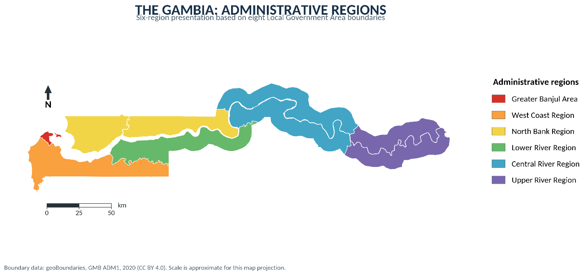
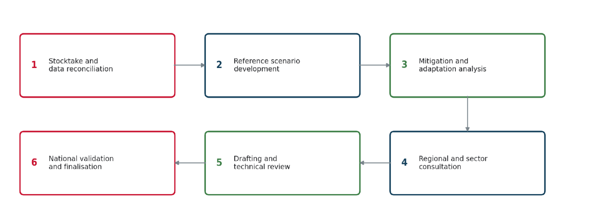
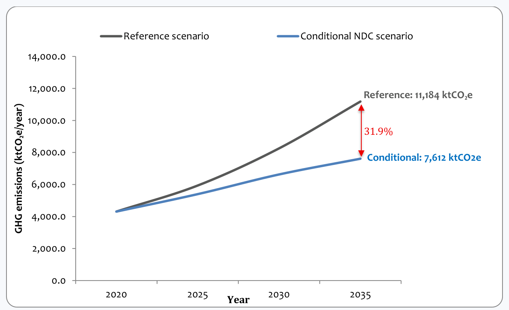
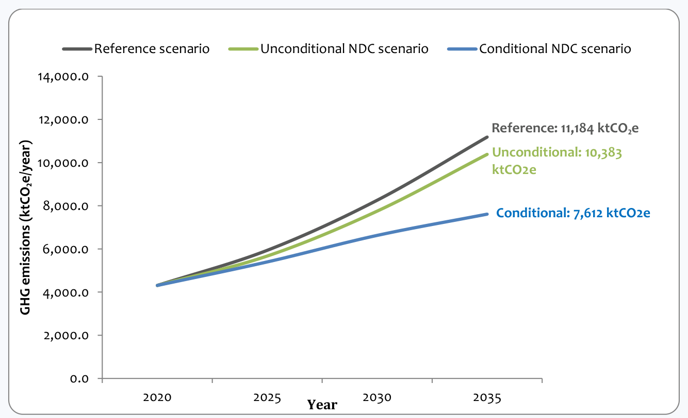
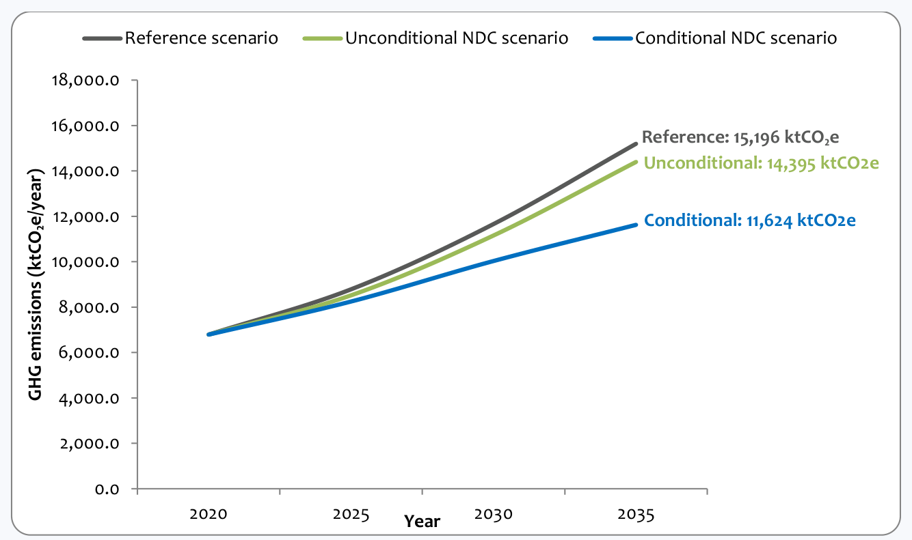
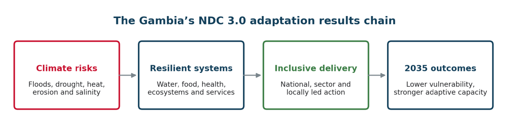
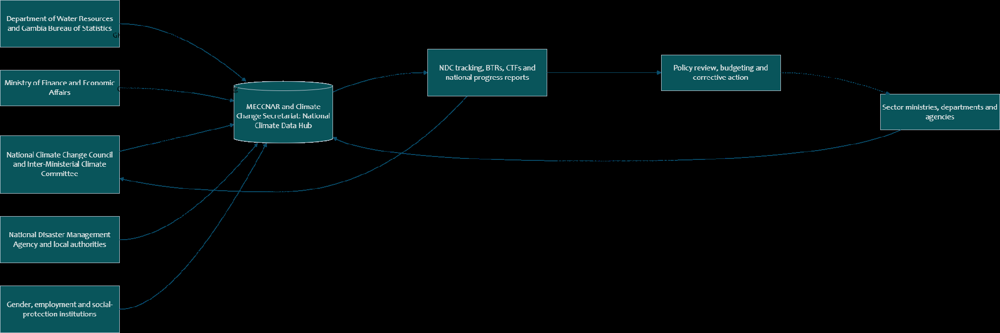
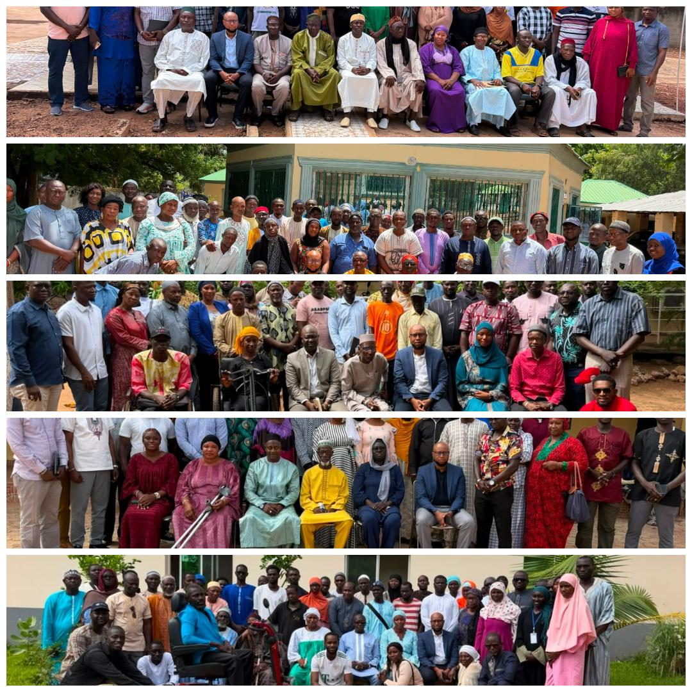

|
AFOLU |
Agriculture, Forestry and Other Land Use |
|
BAU |
Business as usual |
|
BRT |
Bus Rapid Transit |
|
BTR |
Biennial Transparency Report |
|
BTR1 |
First Biennial Transparency Report |
|
BUR1 |
First Biennial Update Report |
|
CCD |
Climate Change Department |
|
CCDR |
Country Climate and Development Report |
|
CCS |
Climate Change Secretariat |
|
CH₄ |
Methane Conference of the Parties serving as the meeting of the Parties to the Paris CMA Agreement |
|
CO₂ |
Carbon dioxide |
|
CO₂e |
Carbon dioxide equivalent |
|
COP |
Conference of the Parties |
|
CP |
Conference of the Parties decision reference |
|
CRR |
Central River Region |
|
CRTs |
Common reporting tables |
|
CSO |
Civil society organisation |
|
CTF |
Common tabular format |
|
CTFs |
Common tabular formats |
|
DHIS2 |
District Health Information Software 2 |
|
DOA |
Department of Agriculture |
|
DRM |
Disaster risk management |
|
DWR |
Department of Water Resources |
|
ETF |
Enhanced Transparency Framework |
|
EV |
Electric vehicle |
|
EVs |
Electric vehicles |
|
GACMO |
Greenhouse Gas Abatement Cost Model |
|
GAFSP |
Global Agriculture and Food Security Program |
|
GBoS |
Gambia Bureau of Statistics |
|
GCF |
Green Climate Fund |
|
GDP |
Gross domestic product |
|
GEF |
Global Environment Facility |
|
GHG |
Greenhouse gas |
|
GIEPA |
Gambia Investment and Export Promotion Agency |
|
GIRAV |
Gambia Inclusive and Resilient Agricultural Value Chain Development Project |
|
GMD |
Gambian dalasi |
|
GPF |
Gambia Police Force |
|
GRA |
Gambia Revenue Authority |
|
GST |
Global Stocktake |
|
GWP |
Global warming potential |
|
ha |
hectare(s) |
|
HFC |
Hydrofluorocarbon |
|
HVAC |
Heating, ventilation and air conditioning |
|
ICTU |
Information to Facilitate Clarity, Transparency and Understanding |
|
ICZM |
Integrated coastal zone management |
|
IPCC |
Intergovernmental Panel on Climate Change |
|
IPPU |
Industrial Processes and Product Use |
|
ITMOs |
Internationally transferred mitigation outcomes |
|
km |
kilometre(s) |
|
ktCO₂e |
Kilotonnes of carbon dioxide equivalent |
|
LDCF |
Least Developed Countries Fund |
|
LDC |
Least Developed Country |
|
LED |
Light-emitting diode |
|
LGAs |
Local Government Authorities |
|
LPG |
Liquefied petroleum gas |
|
LRR |
Lower River Region |
|
LTS |
Long-Term Climate-Neutral Development Strategy: 2050 |
|
LULUCF |
Land Use, Land-Use Change and Forestry |
|
MECCNAR |
Ministry of Environment, Climate Change and Natural Resources |
|
MEL |
Monitoring, Evaluation and Learning |
|
MEPS |
Minimum energy performance standards |
|
MOBSE |
Ministry of Basic and Secondary Education |
|
MOCDE |
Ministry of Communication and Digital Economy |
|
MOALFS |
Ministry of Agriculture, Livestock and Food Security |
|
MOFEA |
Ministry of Finance and Economic Affairs |
|
MOFWR |
Ministry of Fisheries, Water Resources and National Assembly Matters |
|
MOGCSW |
Ministry of Gender, Children and Social Welfare |
|
MOH |
Ministry of Health |
|
MOHERST |
Ministry of Higher Education, Research, Science and Technology |
|
MOIMBS |
Ministry of Information, Media and Broadcasting Services |
|
MOLRGRA |
Ministry of Lands, Regional Government and Religious Affairs |
|
MOPEM |
Ministry of Petroleum, Energy and Mines |
|
MOTC |
Ministry of Tourism and Culture |
|
MOTIE |
Ministry of Trade, Industry, Regional Integration and Employment |
|
MOTWI |
Ministry of Transport, Works and Infrastructure |
|
MOYS |
Ministry of Youth and Sports |
|
MPGs |
Modalities, procedures and guidelines |
|
MRV |
Measurement, Reporting and Verification |
|
MSME |
Micro, small and medium-sized enterprise |
|
MSMEs |
Micro, small and medium-sized enterprises |
|
MW |
megawatt(s) |
|
N₂O |
Nitrous oxide |
|
NAMA |
Nationally Appropriate Mitigation Action |
|
NAP |
National Adaptation Plan |
|
NAPA |
National Adaptation Programme of Action |
|
NAWEC |
National Water and Electricity Company |
|
NBR |
North Bank Region |
|
NDC |
Nationally Determined Contribution |
|
NDC 2.0 |
Second Nationally Determined Contribution |
|
NDC 3.0 |
Third-generation Nationally Determined Contribution |
|
NDMA |
National Disaster Management Agency |
|
NDP |
National Development Plan |
|
NEA |
National Environment Agency |
|
NEET |
Not in employment, education or training |
|
NGO |
Non-governmental organisation |
|
NGOs |
Non-governmental organisations |
|
NID |
National Inventory Document |
|
NMA |
Non-market approach |
|
NMAs |
Non-market approaches |
|
N₂O |
Nitrous oxide |
|
NRA |
National Roads Authority |
|
NSPA |
National Social Protection Agency |
|
O&M |
Operation and maintenance |
|
PMO |
Personnel Management Office |
|
PPA |
Power purchase agreement |
|
PPAs |
Power purchase agreements |
|
PURA |
Public Utilities Regulatory Authority |
|
PV |
Photovoltaic |
|
QA |
Quality assurance |
|
QA/QC |
Quality assurance and quality control |
|
QC |
Quality control |
|
RAC |
Refrigeration and air conditioning |
|
RCAP |
Regional Climate Action Plan |
|
RCAPs |
Regional Climate Action Plans Reducing emissions from deforestation and forest degradation, including |
|
REDD+ |
conservation, sustainable forest management and enhancement of forest carbon stocks |
|
SDGs |
Sustainable Development Goals |
|
tCO₂e |
tonnes of carbon dioxide equivalent |
|
TGSB |
The Gambia Standards Bureau |
|
TNA |
Technology Needs Assessment |
|
TVET |
Technical and vocational education and training |
|
UAE |
United Arab Emirates |
|
UN |
United Nations |
|
UNEP |
United Nations Environment Programme |
|
UNFCCC |
United Nations Framework Convention on Climate Change |
|
URR |
Upper River Region |
|
US$ |
United States dollars |
|
USD |
United States Dollar |
|
W |
watt |
|
WASH |
Water, Sanitation and Hygiene |
|
WCR |
West Coast Region |
|
YIRIWAA |
Recovery-Focused National Development Plan 2023–2027 |
The Government of The Gambia is proud to present its Third Nationally Determined Contribution, NDC 3.0. This renewed national commitment reflects our determination to protect our people, advance sustainable development and contribute to the collective goals of the Paris Agreement. The Gambia’s development is closely connected to its natural resources, productive ecosystems and climate-sensitive economic sectors. Agriculture, fisheries, forestry, water resources, tourism and coastal settlements support livelihoods and national development. Climate change increasingly places these foundations at risk. Floods, droughts, extreme heat, changing rainfall patterns, coastal erosion, saltwater intrusion and sea-level rise affect communities, infrastructure, public health, food security, water security and economic stability. Although The Gambia contributes only a small share of global greenhouse gas emissions, we recognise our responsibility to support global climate action. NDC 3.0 therefore presents a stronger and more comprehensive pathway towards a climate-resilient, low-emission and inclusive economy. It reflects our commitment to pursue development which protects natural resources, creates opportunities and improves the wellbeing of present and future generations. This NDC builds on the progress and lessons of our previous climate commitments. It strengthens mitigation across energy, transport, clean cooking, agriculture, forestry, industrial processes and product use, and waste. It also places greater emphasis on adaptation in agriculture, water resources, health, ecosystems, coastal zones, tourism, infrastructure and human settlements. For the first time, The Gambia’s NDC gives direct attention to Loss and Damage. This recognises the growing social, economic and environmental consequences of climate impacts which cannot be fully avoided through mitigation or adaptation. It strengthens our commitment to improve preparedness, assessment, coordination, response and support for affected communities. NDC 3.0 is designed as an implementable national framework, not only as an international commitment. It connects climate action with national planning, public investment, institutional coordination, climate finance, technology development and transfer, capacity-building, transparency and accountability. It also recognises the important roles of local authorities, civil society, academia, traditional leaders, development partners and the private sector. The transition towards a resilient and low-emission economy must be fair and inclusive. Women, young people, persons with disabilities and climate-vulnerable communities must have meaningful opportunities to shape decisions and benefit from climate action. Our approach therefore promotes gender equality, social inclusion, local knowledge, community leadership, decent work and a just transition. The preparation of NDC 3.0 was nationally-led and broadly participatory. Government institutions, civil society organisations, communities, research institutions, private sector representatives and development partners contributed their knowledge, priorities and experience. Their participation has strengthened national ownership and helped ensure that the NDC responds to The Gambia’s development needs and climate realities. The Government of The Gambia remains committed to mobilising domestic resources, strengthening institutions and integrating climate action into national and sectoral planning. Yet the full implementation of this NDC also depends on international cooperation. We call upon our partners to provide accessible, predictable and timely climate finance, technology transfer, technical assistance and capacity-building support. NDC 3.0 is both a national roadmap and an expression of solidarity with the international community. Its success will depend on sustained leadership, coordinated institutions, responsible investment and the active participation of all Gambians. I invite all government institutions, local authorities, communities, civil society organisations, businesses, researchers and development partners to work together in translating these commitments into practical action and lasting results. Through shared responsibility and determined implementation, we will build a more resilient, inclusive and climate-secure Gambia.
Honourable Rohey John Manjang Minister of Environment, Climate Change and Natural Resources
The Government of The Gambia expresses its sincere appreciation to all institutions, technical experts, communities and development partners who contributed to the preparation of The Gambia’s Third Nationally Determined Contribution, NDC 3.0, covering 2026 to 2035. The Ministry of Environment, Climate Change and Natural Resources provided national leadership and coordinated the technical, consultative and validation processes. On behalf of The Government of The Gambia, the Ministry’s role was central in convening institutions, guiding the technical work, ensuring alignment with national policy and international reporting requirements, while also maintaining national ownership of the NDC 3.0 process.
Special appreciation is extended to the exceptional leadership provided by the Permanent Secretary, Deputy Permanent Secretary- Technical -MECCNAR for the strategic guidance, technical oversight, institutional coordination and sustained engagement throughout the preparation of the NDC 3.0. While also acknowledging the contributions of sector ministries, departments, public agencies, local government authorities and regional administrations. Their technical inputs supported the greenhouse gas inventory review, reference-scenario development, mitigation assessment, adaptation planning, Loss and Damage analysis, climate-finance assessment, transparency arrangements and implementation framework.
Recognition is extended to the Ministry of Finance and Economic Affairs; Ministry of Petroleum, Energy and Mines; Ministry of Agriculture, Livestock and Food Security; Ministry of Transport, Works and Infrastructure; Ministry of Trade, Industry, Regional Integration and Employment; Ministry of Fisheries, Water Resources and National Assembly Matters; Ministry of Health; Ministry of Gender, Children and Social Welfare; Ministry of Lands, Regional Government and Religious Affairs; Department of Water Resources; Department of Forestry; National Environment Agency; National Disaster Management Agency; Gambia Bureau of Statistics; National Water and Electricity Company; Gambia Ports Authority; Gambia Civil Aviation Authority; local government authorities; and regional administrations.
The Government acknowledges the technical leadership of the Climate Change Secretariat, the National Climate Change Council, the Inter-Ministerial Climate Committee, the National Climate Committee and the sector technical working groups, whose coordination and expert inputs supported the preparation, review and validation of these contributions.
Special appreciation is extended to the teams led by the Senior Climate Change Officer at the Climate Change Secretariat, who facilitated, documented and reported on the regional consultations held from May to July 2026. Their work ensured that the regional priorities, local knowledge and community concerns were captured across the country. MECCNAR further thanks the 294 participants who took part in regional consultations from May to July 2026. Participants represented regional and local government, technical departments, civil society organisations, women’s organisations, youth groups, farmer associations, fisherfolk associations, traditional authorities, academia, research institutions, community organisations, organisations of persons with disabilities, private enterprises and development partners. Their knowledge shaped the assessment of climate risks, regional priorities, mitigation measures, adaptation outcomes, institutional responsibilities and monitoring arrangements.
The Government recognises the contributions of all technical specialists, In-Country Expert, national consultants, sector focal points and institutional representatives who supported the data reconciliation of national data, stakeholder engagement, modelling, adaptation planning, Loss & Damage analysis, climate finance assessment, transparency arrangements and reviews.
Appreciation is also extended to the development partners and program supporting the NDC3.0 preparation and related national processes including the United Nations Environment Programme, the NDC Partnership, Agence Francaise de Developpement, Adapt’Action and other bilateral and multilateral partners.
The NDC also benefited from alignment with the Long-Term Climate-Neutral Development Strategy 2050, the National Adaptation Plan process, Regional Climate Action Plans and the Adapt Action Monitoring, Evaluation and Learning project.
The Government of The Gambia thanks every person and institution whose technical expertise, local knowledge and commitment contributed to NDC 3.0.
Special recognition is extended to every individual who contributed technical expertise, institutional guidance, local knowledge and implementation experience to the preparation of The Gambia’s NDC 3.0:
Political leadership Honourable Rohey John Manjang, Minister of Environment, Climate Change and Natural Resources, responsible for NDC approval
MECCNAR coordination Permanent Secretary Ebrima Jawara, Deputy Permanent Secretary- team Technical and NDC National Focal Point Ndey Fatou Jobe, Director Lamin S Jammeh, Principal Climate Change Officer and UNFCCC National Focal Point Modou Cham, Senior Climate Change Officer and UNFCCC Alternate Focal Point Sambou Kinteh and Climate Change Officer Modou Lamin Bah Government technical Named representatives from each ministry, department and agency team
Mitigation team GHG inventory, GACMO, sector modelling and mitigation experts
Adaptation team NAP, AdaptAction MEL, sector adaptation and results-framework experts
Loss and Damage team Disaster risk, economic assessment and social-protection experts
Climate-finance team MOFEA, MECCNAR and partner finance specialists
Transparency team Inventory, MRV, adaptation MEL and data-system experts
Lead consultant Dr Tendai M. Nzuma
In country experts Dr Demba Baldeh, Dr Bintou Dibba, Dr Alagie Bah Development partners UNEP, UNEP-Copenhagen Climate Centre, NDC Partnership, Agence Française de Développement Regional consultations Facilitators, rapporteurs, governors and regional focal points
National validation Chairpersons, facilitators, technical reviewers and rapporteurs
The Gambia’s Third Nationally Determined Contribution (NDC 3.0) sets out the country’s climate contribution for 2026–2035 under the Paris Agreement. It advances an integrated national agenda for low-emission development, climate resilience, adaptation, responses to Loss and Damage, a just transition, and strengthened transparency and accountability. The Gambia contributes less than 0.01% of global greenhouse gas emissions, yet it remains highly exposed to the adverse effects of climate change. Flooding, drought and dry spells, extreme heat, coastal erosion, sea-level rise, saltwater intrusion, windstorms and other climate hazards increasingly threaten food and water security, human health, infrastructure, ecosystems, livelihoods and economic development. NDC 3.0 therefore places adaptation and resilience alongside mitigation as core national development priorities. NDC 3.0 represents a progression in The Gambia’s climate planning framework. It extends the mitigation target horizon to 2035, establishes a validated portfolio of quantified mitigation measures, strengthens the distinction between unconditional and conditional action, introduces a results-based adaptation framework, establishes national commitments for responding to Loss and Damage, embeds just-transition principles, and establishes an integrated national transparency system for implementation and reporting. The NDC is aligned with The Gambia’s Long-Term Climate-Neutral Development Strategy 2050, the National Adaptation Plan process, national development priorities and the outcomes of the first Global Stocktake (GST). It translates the country’s longer-term objective of climate neutrality into measurable action and implementation priorities for the period to 2035.
The Gambia’s NDC 3.0 at a glance
|
Element |
NDC 3.0 contribution to 2035 |
|
Implementation period |
2026–2035 |
|
Mitigation target year |
2035 |
|
2035 net reference emissions, including LULUCF |
11,183.97 ktCO₂e/year |
|
Unconditional mitigation contribution |
800.99 ktCO₂e/year; approximately 7.2% below the 2035 reference scenario |
|
Resulting unconditional 2035 net emissions |
10,382.98 ktCO₂e/year |
|
Additional conditional mitigation contribution |
2,770.56 ktCO₂e/year beyond the unconditional contribution |
|
Combined unconditional and conditional contribution |
3,571.55 ktCO₂e/year; up to 31.9% below the 2035 reference scenario |
|
Resulting combined 2035 net emissions |
7,612.41 ktCO₂e/year |
Mitigation portfolio 39 quantified measures: 10 unconditional and 29 conditional; one additional unquantified IPPU/HFC mitigation action and three enabling measures
|
GHGs quantified |
CO₂, CH₄ and N₂O |
|
Headline mitigation accounting |
Net national emissions including LULUCF; excluding-LULUCF results reported separately for transparency |
National adaptation goal By 2035, reduce climate vulnerability and strengthen the adaptive capacity and resilience of people, livelihoods, ecosystems, infrastructure and essential services through inclusive, risk-informed and locally led adaptation
|
Indicative mitigation investment requirement |
US$883 million |
|
Indicative adaptation investment requirement |
US$590 million |
|
Indicative Loss and Damage planning requirement |
US$250 million |
|
Cross-cutting enabling requirement |
US$85 million, subject to reconciliation for overlap |
|
Gross planning aggregate |
US$1.808 billion before reconciliation of overlapping costs |
The financial estimates are planning-level requirements expressed in constant 2026 US dollars and should not be interpreted as confirmed financing commitments or final financing gaps.
Mitigation contribution The Gambia’s mitigation contribution is expressed relative to a 2035 reference emissions scenario and covers the Energy, Industrial Processes and Product Use (IPPU), Agriculture, Land Use, Land-Use Change and Forestry (LULUCF), and Waste sectors. Transport is accounted for within Energy for GHG accounting purposes. The quantified modelling covers carbon dioxide (CO₂), methane (CH₄) and nitrous oxide (N₂O), while LULUCF is included in the headline net national target and reported separately to maintain transparency regarding the contribution of land-sector emissions and removals. Under the reference scenario, net national GHG emissions including LULUCF are projected to reach 11,183.97 ktCO₂e/year in 2035. The Gambia commits to an unconditional reduction of approximately 7.2% below the 2035 reference scenario, equivalent to an estimated reduction of 800.99 ktCO₂e/year. Implementation of the unconditional contribution results in projected net emissions of approximately 10,382.98 ktCO₂e/year in 2035. Subject to adequate and predictable international support, The Gambia will undertake an additional conditional mitigation contribution of approximately 2,770.56 ktCO₂e/year in 2035. Implementation of the unconditional and additional conditional contributions together would reduce net national emissions by approximately 3,571.55 ktCO₂e/year, resulting in net emissions of approximately 7,612.41 ktCO₂e/year in 2035, equivalent to up to 31.9% below the 2035 reference scenario.
The conditional scenario is cumulative: it includes the unconditional contribution plus the additional conditional mitigation measures. The 31.9% therefore represents the combined unconditional and conditional mitigation outcome, rather than the additional conditional component alone. The validated mitigation portfolio contains 39 quantified mitigation measures, comprising 10 unconditional and 29 conditional measures, together with one additional unquantified IPPU/HFC mitigation action and three enabling measures. The portfolio addresses renewable electricity generation and power-system transformation; energy efficiency; clean cooking; distributed renewable energy; lower-emission transport; methane reduction in agriculture; improved soil management; reforestation, agroforestry and avoided deforestation; waste recovery, recycling and composting; wastewater and biogas; and improved management of refrigerants and HFCs. These measures are intended to place The Gambia on a development pathway compatible with its 2050 climate-neutrality objective, while contributing to wider priorities including energy access and security, sustainable mobility, public health, agricultural productivity, ecosystem protection, waste management, employment and economic resilience.
Adaptation and resilience contribution Adaptation is a central pillar of NDC 3.0 and a national development, economic and social priority. The Gambia establishes the following national adaptation goal: By 2035, The Gambia will reduce climate vulnerability and strengthen the adaptive capacity and resilience of people, livelihoods, ecosystems, infrastructure and essential services through inclusive, risk-informed and locally led adaptation. The adaptation contribution is organised around the principal climate risks facing the country and establishes sectoral outcomes, outputs and indicators across Agriculture; Water Resources; Forests and Ecosystems; Health; Coastal Zones and Tourism; Infrastructure and Buildings; and cross-cutting adaptation systems. Priority adaptation action includes climate-smart and agroecological agriculture; improved irrigation and water-use efficiency; resilient water and WASH systems; coastal-risk management; ecosystem restoration and nature-based solutions; climate-resilient health systems; resilient infrastructure and human settlements; strengthened climate information and early-warning systems; and locally led, gender-responsive and socially inclusive adaptation. The NDC and National Adaptation Plan perform complementary functions. NDC 3.0 establishes the national adaptation outcomes and priority systems communicated under the Paris Agreement, while the NAP process will further translate these outcomes into detailed programmes, sequencing, investment plans and quantified targets based on validated baselines. Adaptation monitoring will be undertaken through a national Monitoring, Evaluation and Learning (MEL) framework designed to assess changes in vulnerability, adaptive capacity and resilience rather than relying solely on expenditure or activity counts. The framework will combine process, output and outcome indicators and, where feasible, impact information, while tracking whether benefits reach vulnerable people and communities.
Loss and Damage NDC 3.0 recognises that not all climate hazards can be fully averted through mitigation or minimised through adaptation. The Gambia will therefore strengthen national systems for averting, minimising and addressing economic and non-economic Loss and Damage associated with extreme events. Priority areas include climate-risk knowledge; preparedness and anticipatory action; emergency response; recovery, rehabilitation and climate-resilient reconstruction; coastal loss, erosion and saltwater intrusion; ecosystem and non-economic losses; human mobility and social protection; risk financing; and national institutional coordination. The Gambia will prepare a disaster risk financing strategy as a vehicle to support responding to loss and damage relating to climate change. In addition, the multi-hazard assessment tool will be enhanced to cater for a comprehensive need assessment and ensure quantification of damages relating to climate change. strengthen methodologies for assessing economic and non-economic losses, improve data systems, define institutional responsibilities, identify financing needs and gaps and strengthen access to relevant international support. The NDC establishes national system-building commitments through 2035 rather than implying that all climate-related Loss and Damage can be eliminated. The current US$250 million Loss and Damage planning requirement is an initial programme-planning estimate. It is not a forecast of total future climate losses and will be refined through the national needs assessment and financing strategy.
Just transition and social inclusion The Gambia recognises that implementation of the NDC must be socially inclusive and responsive to the distribution of both benefits and transition costs. The just-transition framework therefore applies principles of leaving no one behind, inclusive development, decent work and gender equality, with priority attention to energy transition, clean cooking, youth employment, skills development and meaningful community participation. Implementation will seek to expand green skills, apprenticeships and enterprise opportunities while protecting affordability, livelihoods and access to essential services. Women, young people, persons with disabilities, workers, vulnerable households and affected communities will be supported to participate meaningfully in decisions and gain equitable access to climate-action benefits. NDC implementation will progressively track employment, skills, affordability, participation, access to benefits, safeguards and distributional effects so that the social dimensions of the transition become measurable components of national climate accountability.
Means of implementation Achievement of NDC 3.0 will depend on access to adequate, predictable, accessible and timely finance, technology development and transfer, technical assistance and capacity-building, alongside strengthened domestic institutions and resource mobilisation. The current planning-level investment requirements comprise:
US$883 million for mitigation, including US$254 million associated with the unconditional contribution and US$629 million associated with the additional conditional contribution;
US$590 million for adaptation;
US$250 million as an indicative Loss and Damage planning requirement; and
US$85 million for cross-cutting enabling systems, subject to reconciliation with sector-level costs.
The arithmetic sum of these components is US$1.808 billion before reconciliation for overlap. This amount should be understood as a gross planning aggregate rather than a final financing requirement or financing gap. A final consolidated requirement will be established through the NDC Implementation and Investment Plan after overlapping expenditure and finance already secured or programmed have been identified. The mitigation investment requirement is strongly concentrated in the Energy sector, reflecting the capital required for renewable power, storage and networks, energy efficiency, clean cooking, distributed energy and low-emission transport. Approximately 71% of the central mitigation investment requirement is associated with the additional conditional contribution, illustrating the importance of international support for achieving the full mitigation ambition. Adaptation finance will prioritise water security, resilient agriculture and food and nutrition security, coastal resilience, ecosystems, climate-resilient health systems, infrastructure and settlements, climate-risk management and locally led adaptation. Cross-cutting investment will strengthen governance, transparency, climate-finance systems, project preparation, technology, research, institutional capacity, education, public awareness, gender equality and social inclusion. The Gambia will develop an NDC investment pipeline that links individual measures and programmes to costs, financing sources, implementation entities, safeguards and climate results. Financial reporting will distinguish resources needed, committed or approved, received, disbursed and expended, thereby improving accountability and preventing double counting.
Technology and capacity development Technology support under NDC 3.0 will address the full lifecycle of technology deployment rather than equipment procurement alone. Priorities include renewable-energy and electricity-system technologies, clean cooking, electric mobility, efficient cooling and refrigerant management, climate- smart agriculture and irrigation, waste and methane technologies, ecosystem monitoring, climate information and data systems. Technology deployment will be accompanied by standards, technical skills, operation and maintenance capacity, local servicing, safety, spare-parts availability, appropriate end-of-life management and institutional ownership. Capacity development will strengthen national competencies in climate governance, GHG inventories, mitigation modelling and MRV, adaptation MEL, climate-risk assessment, Loss and Damage assessment, climate finance, project preparation, safeguards, technology management, data systems and reporting. The objective is to move progressively from short-term project-dependent capacity towards permanent national institutional capability.
Transparency, monitoring and accountability NDC 3.0 establishes an integrated National Climate Transparency System to support implementation management, national planning and budgeting, public accountability and international reporting under the Enhanced Transparency Framework.
The system will integrate the national GHG inventory, mitigation tracking, adaptation MEL, Loss and Damage information, climate-finance and support tracking, and monitoring of just-transition and inclusion outcomes.
The national transparency objective is: By 2035, The Gambia will operate a permanent, nationally owned, digitally enabled and quality-assured climate transparency system that provides timely and reliable evidence for NDC implementation and achievement, Biennial Transparency Reports, national planning and budgeting, investment decisions and public accountability.
MECCNAR, through the Climate Change Secretariat (and subsequently its successor department) in consultation with the NDC National Focal Point, will provide overall coordination and serve as custodian of the NDC tracking framework, while sector ministries and agencies will retain responsibility for information generated within their mandates. The system will apply common definitions, identifiers, methodologies, reporting periods and quality standards and will strengthen quality assurance, archiving, data-sharing and institutional continuity. Progress will be reported through national implementation processes and, as applicable, Biennial Transparency Reports under the Paris Agreement. Evidence generated through monitoring will feed back into planning, budgeting and corrective action, creating a continuous cycle of implementation → monitoring → reporting → learning → adjustment.
National ownership and international cooperation NDC 3.0 was developed through a nationally led technical, consultative and validation process coordinated by MECCNAR and involving sector ministries and agencies, local government, civil society, communities, women and youth organisations, farmer and fisherfolk organisations, academia, the private sector and development partners. Regional consultations conducted between May and July 2026 engaged 294 participants, and consultation findings informed the selection and design of national mitigation, adaptation and implementation priorities. The Government will contribute national ownership, policy direction, domestic action, strengthened institutions, progressively improved transparency and accountable implementation. Achievement of the full ambition of NDC 3.0, however, requires substantially enhanced international cooperation. As a Least Developed Country with very low historical and current emissions and significant exposure to climate impacts, The Gambia calls for international support that is adequate, predictable, accessible, timely and responsive to national priorities, including grants and highly concessional finance, technology development and transfer, long-term capacity-building and project-preparation support. Through NDC 3.0, The Gambia reaffirms its commitment to the Paris Agreement and establishes a nationally owned framework for protecting development gains, strengthening resilience, reducing future emissions growth and advancing towards a climate-resilient, low-emission and prosperous future consistent with climate neutrality by 2050.
National context, climate vulnerability and the ambition of The Gambia’s NDC 3.0
The Gambia’s third nationally determined contribution (NDC 3.0) sets out the country’s climate commitments for 2026–2035 under the Paris Agreement.1 It responds to an urgent national development challenge: climate change is increasing risks to people, infrastructure, food and water security, ecosystems and the economy, while The Gambia contributes only a very small share of global greenhouse gas emissions.2 NDC 3.0 therefore advances an integrated agenda for adaptation and resilience alongside a just, low-emission development pathway that supports national development. This chapter introduces the national circumstances that shape The Gambia’s climate priorities, summarises the country’s principal climate risks and structural vulnerabilities, presents the emissions context used for NDC target-setting, and situates NDC 3.0 within the national policy and institutional framework. The process used to prepare the contribution is described in Chapter 2; detailed mitigation and adaptation targets, methodologies and implementation arrangements are presented in subsequent chapters and annexes.
The Republic of The Gambia is the smallest country on mainland Africa. It extends eastward from the Atlantic Ocean along both banks of the River Gambia and is surrounded by Senegal except along its Atlantic coast. The country has a total area of approximately 11,300 km², including about 10,120 km² of land.3 Its narrow riverine form, low-lying coastal and estuarine areas, and concentration of people and economic assets in and around the Greater Banjul Area create a distinctive pattern of climate exposure.4
The 2024 Population and Housing Census recorded a population of 2,422,712, of whom approximately 51 per cent were female. Population growth averaged about 2.5 per cent annually between 2013 and 2024, compared with 3.1 per cent in the preceding intercensal period. The population is young: approximately 40.8 per cent is under 15 years of age, 56.2 per cent is aged 15–64 and 3.0 per cent is aged 65 or older. Population density increased from about 174 to 227 people per km² between 2013 and 2024.5 This demographic growth is increasing demand for land, housing, infrastructure, water, energy and public services.

The Gambia remains classified by the United Nations as a Least Developed Country.6 Its economy is small and exposed to external shocks, with services accounting for the largest share of economic activity and agriculture, tourism and remittances remaining important to livelihoods and economic performance.7 Real GDP growth reached 5.9 per cent in 2023 and 5.6 per cent in 2024.8 The draft national evidence base reports that agriculture, industry and services accounted for approximately 22.1, 16.6 and 58.9 per cent of GDP, respectively, in 2024, and that GDP per capita was about USD 993.9
These gains coexist with high poverty and substantial spatial inequality. The latest national poverty estimate used by the World Bank places the national poverty rate at 53.4 per cent, based on the 2020/21 household survey, with poverty considerably higher in rural than urban areas.10 Limited fiscal space, public-debt pressures, infrastructure deficits, constraints on private-sector development and skills gaps reduce the resources available to absorb shocks and finance climate-resilient development.11 Climate impacts can consequently affect household incomes, food prices, infrastructure, public finances and essential services simultaneously.
Agriculture illustrates this exposure. A substantial share of Gambian households and workers depend directly or indirectly on agriculture, particularly in rural areas. Production remains strongly dependent on rainfall and natural resources, making agricultural livelihoods sensitive to drought, dry spells, flooding, salinity and rainfall variability. These risks can affect production, household income and food security at the same time.
Energy access has improved substantially. World Bank data report national electricity access of 66.9 per cent in 2023, while the Africa Energy Portal reports corresponding urban and rural access rates of 85.3 and 33.5 per cent.12 Dependence on imported petroleum products, system losses and constraints in power-sector infrastructure continue to affect energy security and sector performance.13 Expanding renewable energy, strengthening transmission and distribution, improving efficiency and accelerating access to clean cooking therefore have both climate and development relevance.
The Gambia has a Sudan–Sahelian climate characterised by a short rainy season, generally from June to October, and a long dry season from November to May. Average annual rainfall varies geographically, with most rainfall concentrated in July, August and September. National reporting also records long-term warming and substantial rainfall variability.
The Gambia National Hazard Profile 2022-24 identifies principal climate hazards including flooding, drought and recurrent dry spells, extreme heat, windstorms, bushfires, coastal erosion, sea-level rise and saltwater intrusion.14 These hazards can interact. Heavy rainfall combined with inadequate drainage can intensify urban flooding; drought and heat can increase water stress and affect agricultural production; and sea-level rise, coastal erosion and salinity threaten settlements, freshwater resources, coastal ecosystems, critical tourism infrastructure and agricultural land.15
The country’s low-lying coast and tidal river system are of particular concern. Earlier national assessments identify substantial low-elevation and flood-prone areas, including Banjul, while more recent World Bank analysis confirms a rising coastal exposure to sea-level rise, flooding and erosion.16 An early coastal vulnerability assessment estimated that a 1 m rise in mean sea level could inundate approximately 92.32 km² of The Gambia’s coastal and estuarine land, equivalent to about 0.8 per cent of the country’s total area. The assessment identified Banjul as particularly exposed, projecting that most or all of the city, including its then population of approximately 42,000 people, would be at risk because much of the city lies below 1 m above mean sea level. These estimates are scenario-based screening results derived from 1990s elevation maps, aerial photography and simplified inundation and shoreline-retreat methods. They should not be presented as current probabilistic forecasts or as evidence that more than 0.8 per cent of the national territory would be inundated.17
The 2021 Global Climate Risk Index has been reported by the African Development Bank and subsequent peer-reviewed research as placing The Gambia 41st among 180 countries.18 The index is based on recorded impacts of extreme-weather events and should not be interpreted as a forward- looking measure of climate vulnerability. More recent scenario-based analysis is provided by the World Bank’s 2026 Country Climate and Development Report, which finds that environmental hazards including flooding, heat stress and coastal erosion could substantially reduce future economic output. Under the report’s scenarios, an aspirational resilient-growth pathway could reduce estimated GDP losses by mid-century from 9.3 per cent to as low as 2.6 per cent.19
Climate vulnerability is spatially differentiated. National and regional assessments identify interconnected but distinct patterns of risk across the country. The Greater Banjul Area faces combined urban and coastal flooding, sea-level rise, erosion, salinity and infrastructure pressures. The West Coast Region combines rapid settlement expansion with exposure to agriculture, human mobility, fisheries and tourism assets. This region has three disaster hotspots identified namely, Brikama Jambarr Sanneh, Sukuta- Nema stretch and Jabang. Settlements, Riverine and agricultural areas in the North Bank, Central River, Lower River and Upper River regions face varying combinations of rainfall variability, dry spells and drought, flooding, bushfires, extreme heat, windstorms, salinity and ecosystem degradation.20 The disaster hotspots in these regions are Basse Kabakanma, Farafenni, Barra and Nbapa in NBR, Bansang, Kuntaur in CRR, Soma, Kotu Corridor in KM and Banjul.
Across these settings, vulnerability is influenced by poverty, livelihood, location, age, gender, disability and access to infrastructure, services, land, information and finance. Smallholder farmers, fisherfolk, livestock keepers and natural-resource-dependent households are particularly exposed to climate- sensitive livelihoods. National planning documents also identify the need to give particular attention to women, youth and other disadvantaged groups in resilience planning.21 NDC implementation will therefore apply gender-responsive and socially inclusive approaches and prioritise communities with high exposure and limited capacity to respond.
Climate change also has implications for health and water, sanitation and hygiene systems. Flooding and unsafe water has the potential to trigger waterborne disease, while heat and changing environmental conditions can affect health outcomes and service demand. Climate shocks can also disrupt health, water and sanitation infrastructure.22 Protecting health, water security and continuity of essential services is consequently an important component of The Gambia’s adaptation ambition.
The Gambia contributes less than 0.01% of global greenhouse gas (GHG) emissions, reflecting its very small historical and current contribution to global climate change.23 Notwithstanding this low contribution, national emissions are projected to increase as population, energy demand, transport activity, urbanisation and economic activity expand, underscoring the importance of pursuing a development pathway that limits future emissions growth while supporting national development priorities. The Gambia’s First Biennial Update Report (BUR1) provides the most recent national inventory context available during preparation of NDC 3.0. BUR1 reports total GHG emissions of approximately 3,542 ktCO₂e in 2020 when direct and indirect gases reported under the BUR methodology are combined. The sector totals reported in BUR1 were approximately 2,221 ktCO₂e for AFOLU, 857 ktCO₂e for Energy, 271 ktCO₂e for Waste and 193 ktCO₂e for IPPU.24 These inventory estimates provide an important evidence base for national climate planning and transparency reporting. The historical inventory and the NDC reference scenario nevertheless serve different analytical and accounting purposes. The national GHG inventory estimates emissions and removals for historical years in accordance with the applicable inventory methodologies and data available at the time of reporting. The NDC reference scenario, by contrast, represents a modelled counterfactual emissions pathway against which The Gambia’s 2035 mitigation contribution is quantified. The two sets of values should therefore not be interpreted as directly interchangeable. For NDC 3.0, the quantified mitigation target covers carbon dioxide (CO₂), methane (CH₄) and nitrous oxide (N₂O) across Energy, Industrial Processes and Product Use (IPPU), Agriculture, Land Use, Land- Use Change and Forestry (LULUCF), and Waste. Transport-related fuel-combustion emissions are accounted for within Energy, consistent with IPCC inventory classification. LULUCF is included in the headline net national mitigation target and is also reported separately so that changes in land-sector emissions and removals can be distinguished from emissions trends in the other covered sectors. NDC 3.0 also includes a conditional mitigation action addressing the phase-down of high-global- warming-potential hydrofluorocarbons (HFCs) and improved refrigerant management. Direct HFC emission reductions are not included in the quantified 2035 mitigation target because the national refrigerant-stock and bank information required for robust quantification remains under development. ⁵ The associated enabling measures will strengthen refrigerant import and consumption controls, technician certification and refrigerant recovery and recycling, and the national cooling- sector monitoring, reporting and verification system. This approach allows HFC mitigation to be advanced without assigning mitigation credit before a sufficiently robust quantitative basis has been established. For NDC target-setting, the national reference scenario was reconstructed, drawing on national GHG inventory information, energy and sector activity data, population and economic assumptions, national technical inputs and relevant long-term planning information.25 The reference scenario provides the counterfactual pathway against which unconditional and conditional contributions are assessed. Under the validated NDC 3.0 reference scenario, net national GHG emissions including LULUCF increase from approximately 4,309.6 ktCO₂e/year in 2020 to 11,183.97 ktCO₂e/year in 2035. Excluding LULUCF, emissions increase from approximately 6,789.6 ktCO₂e/year in 2020 to 15,195.8 ktCO₂e/year in 2035. The difference between the including- and excluding-LULUCF values reflects the contribution of the land-sector balance to net national emissions. These reference-scenario values are NDC modelling outputs rather than revised historical inventory estimates. The 2020 model value should therefore not replace the 2020 national inventory estimate reported in BUR1. Instead, the inventory and NDC modelling frameworks are used for their respective purposes: the inventory provides the basis for reporting observed historical emissions and removals, while the modelled reference pathway provides the basis for quantifying the forward-looking NDC contribution. Maintaining this distinction strengthens the transparency of NDC 3.0 and provides a clear basis for subsequent tracking under the Enhanced Transparency Framework. As national inventory methods, activity data and sector information improve, any recalculations relevant to NDC tracking will be documented transparently and incorporated in a manner that preserves methodological consistency between the reference and target accounting.26
The Gambia ratified the Paris Agreement on 11 July 2016 and submitted its second NDC to the UNFCCC Secretariat in September 2021.27 NDC 3.0 builds on those commitments and is intended to respond to the Paris Agreement’s mitigation and adaptation objectives and to the outcomes of the first Global Stocktake (GST). Under the Paris Agreement, successive NDCs are to represent progression and reflect each Party’s highest possible ambition.28 It will be important to highlight Sedia Farmwork 2015-2030.
The Gambia’s Long-Term Climate-Neutral Development Strategy 2050 provides the national long-term framework for pursuing net-zero greenhouse gas emissions and climate-resilient development by mid- century.29 The associated 2050 Climate Vision identifies four strategic areas: climate-resilient food and landscapes; a low-emission and resilient economy; climate-resilient people; and managing the coast in a changing environment.30 NDC 3.0 is intended to translate this long-term direction into actions and targets for 2026–2035.
The 2016 National Climate Change Policy established an overarching framework for mainstreaming climate change within national development and institutional arrangements.31 NDC 3.0 is also intended to align with the Recovery-Focused National Development Plan 2023–2027 (YIRIWAA), the National Adaptation Plan process and relevant sector strategies.
The Ministry of Environment, Climate Change and Natural Resources (MECCNAR) has the lead national mandate for the climate-change portfolio and coordination of climate-policy implementation. The institutional architecture established in national policy includes the National Climate Change Council, an inter-ministerial coordination mechanism, the National Climate Committee, the Climate Change Secretariat (Which will be replaced by the Climate Change Department when it is established) and sectoral climate focal points.32
Implementation of NDC 3.0 will be anchored in sector mandates and will require coordination with local government and regional institutions, civil society, academia, the private sector and development partners. Earlier national climate strategies identify subnational institutions as important actors in monitoring.33 climate planning, implementation and Detailed governance, coordination, measurement, reporting and verification (MRV), and adaptation monitoring, evaluation and learning (MEL) arrangements are set out in the implementation chapter.
The Gambia’s NDC 3.0 is designed as both a national climate-action framework and an implementation and investment platform for sustainable development for the period 2026–2035. It represents a progression in the country’s climate planning framework through an updated evidence base, a quantified 2035 mitigation target, a validated portfolio of mitigation measures, a results-based adaptation contribution, explicit treatment of conditionality and Loss and Damage, strengthened just- transition and social-inclusion provisions, closer alignment with the Long-Term Climate-Neutral Development Strategy 2050, and enhanced arrangements for implementation, finance, monitoring and transparency. The contribution is intended to translate The Gambia’s long-term climate-neutral and climate-resilient development objectives into measurable action to 2035. It combines domestic action with a clearly defined additional contribution that can be achieved with adequate and predictable international support, while recognising the country’s circumstances as a Least Developed Country, it’s very small contribution to global GHG emissions and its high exposure to climate impacts.
NDC 3.0 target Unconditional contribution Full contribution with international element support
|
2035 mitigation target |
7.2% below the 2035 reference scenario |
Up to 31.9% below the 2035 reference scenario |
|
Target year |
2035 |
2035 |
|
2035 net reference emissions, including LULUCF |
11,183.97 ktCO₂e/year |
11,183.97 ktCO₂e/year |
|
Emission reduction in 2035 |
800.99 ktCO₂e/year |
3,571.55 ktCO₂e/year |
|
Resulting net GHG emissions in 2035 |
10,382.98 ktCO₂e/year |
7,612.41 ktCO₂e/year |
|
Additional mitigation requiring international support |
- |
2,770.56 ktCO₂e/year beyond the unconditional contribution |
|
Implementation conditions |
Implemented through domestic efforts and available national resources, without additional international support |
Includes the unconditional contribution plus additional mitigation conditional on adequate, predictable and timely international support |
Note: All emissions and emission reductions are expressed in ktCO₂e/year for 2035 and are reported on a net basis including LULUCF. The 31.9% full contribution includes the 7.2% unconditional contribution and should not be added to it.
The Gambia commits to an unconditional reduction in net national GHG emissions of 7.2% below the 2035 reference scenario, equivalent to an estimated reduction of approximately 800.99 ktCO₂e/year in 2035. Subject to adequate and predictable international support, The Gambia will undertake a further 2,770.56 ktCO₂e/year of additional conditional mitigation. Implementation of both components would result in a combined reduction of 3,571.55 ktCO₂e/year, or up to 31.9% below the 2035 reference scenario, with projected net national emissions of approximately 7,612.41 ktCO₂e/year in 2035.34 The mitigation contribution is implemented through a portfolio of 39 quantified mitigation measures, of which 10 are unconditional and 29 are conditional, together with one additional unquantified IPPU/HFC mitigation action and three enabling measures. The quantified portfolio addresses renewable electricity generation and power-system transformation; energy efficiency; clean cooking; distributed renewable energy; low-emission transport; agricultural methane reduction and soil management; reforestation, agroforestry and avoided deforestation; waste recovery, recycling and composting; wastewater and biogas; and methane management. The headline mitigation target covers CO₂, CH₄ and N₂O and is expressed including LULUCF, with LULUCF emissions and removals also reported separately. The HFC mitigation action is included in the NDC implementation portfolio, but direct HFC reductions are not credited towards the quantified 2035 target until a sufficiently robust refrigerant-stock and bank evidence base is established. The mitigation contribution is intended to support The Gambia’s long-term objective of climate neutrality by 2050 while generating wider national development benefits, including improved energy access and security, more efficient mobility, cleaner household energy, improved waste management, sustainable agricultural and land-management practices and stronger ecosystem protection. Development co-benefits will be quantified only where appropriate methodologies and supporting evidence are available.
Adaptation is a central pillar of NDC 3.0 and a national development, economic, fiscal and social priority. The Gambia establishes the following national adaptation goal:
By 2035, The Gambia will reduce climate vulnerability and strengthen the adaptive capacity and resilience of people, livelihoods, ecosystems, infrastructure and essential services through inclusive, risk-informed and locally led adaptation.
The adaptation contribution is structured around the priority systems and outcomes identified through national climate-risk assessment, sector analysis and stakeholder consultation. It addresses Agriculture and Food Systems; Water Resources; Forests and Ecosystems; Health; Coastal Zones and
Tourism; Infrastructure, Buildings and Human Settlements; and cross-cutting Climate-risk management and enabling systems. Priority actions include climate-smart and agroecological agriculture; climate-resilient irrigation and water-use efficiency; resilient WASH and water systems; coastal-risk management; ecosystem restoration and nature-based solutions; climate-resilient health systems; resilient infrastructure and settlements; improved climate information and multi-hazard early warning; and locally led adaptation, gender-responsive and socially inclusive adaptation. The adaptation contribution is linked directly to the National Adaptation Plan process. NDC 3.0 establishes the nationally communicated adaptation outcomes and priorities to 2035, while the NAP process will support further programme development, sequencing, detailed costing, institutional arrangements, baselines and investment preparation. This alignment is intended to avoid parallel planning systems and to connect national adaptation ambition with implementation and finance. Progress will be tracked through a results-based Monitoring, Evaluation and Learning framework that combines process, output and outcome indicators and, where technically feasible, impact information. The framework is designed to assess whether vulnerability is declining, adaptive capacity and resilience are increasing, essential systems and services are becoming more resilient and intended population groups are benefiting. NDC 3.0 also recognises that adaptation cannot eliminate all climate-related impacts. The contribution therefore includes strengthened arrangements for climate-risk information, anticipatory action, preparedness, mitigation, response, recovery, social protection and responses to economic and non- economic Loss and Damage.
NDC 3.0 places gender equality, social inclusion, youth participation, disability inclusion, locally led action and private-sector engagement within its implementation framework. The just-transition approach seeks to ensure that the shift towards low-emission and climate-resilient development expands opportunities for skills, decent work, enterprise development and livelihood diversification while identifying and managing potential distributional effects on households, workers and communities. The just-transition framework gives particular attention to energy transition, clean cooking, youth employment, skills development and community participation. It establishes measurable implementation and inclusion indicators, including participation of women and youth, transition from training into employment or enterprise, local skills and supplier development, sustained use of clean technologies and management of workers and communities adversely affected by transition processes. Accountability will be strengthened through defined institutional responsibilities, quantified mitigation measures, explicit conditionality, measure-level implementation indicators, adaptation MEL, finance tracking and an integrated national climate-transparency system. Reporting under the Paris Agreement will be guided by the Enhanced Transparency Framework, including applicable requirements for tracking progress towards implementation and achievement of the NDC and reporting support needed and received.
The Gambia will strengthen national systems for GHG inventory preparation, mitigation tracking, adaptation MEL, Loss and Damage information, climate-finance tracking and data governance. These systems will progressively support permanent, nationally owned and quality-assured transparency architecture capable of serving national planning and budgeting as well as Biennial Transparency Report requirements. Implementation of the full ambition of NDC 3.0 depends substantially on access to adequate, predictable, accessible and timely international support. Priority means of implementation include grant and highly concessional finance, technology development and transfer, technical assistance, capacity-building, climate information and data systems, project preparation and institutional strengthening. Current planning-level estimates identify approximately US$883 million for mitigation, US$590 million for adaptation, US$250 million as an indicative Loss and Damage planning requirement, and US$85 million for cross-cutting enabling systems, subject to reconciliation to avoid overlap. These values are planning requirements rather than confirmed financing commitments or final financing gaps. The gross arithmetic aggregate is approximately US$1.808 billion before overlap reconciliation. Priority investment areas include renewable energy and electricity networks, clean cooking and energy efficiency, low-emission transport, climate-resilient agriculture and food systems, water security, coastal resilience, ecosystems and forestry, climate-resilient health systems, waste management, resilient infrastructure and settlements, and locally led adaptation. The Gambia will establish a coordinated NDC investment and support platform linking climate priorities to national planning, budgeting and investment pipelines. The platform will support programme preparation, mobilisation of domestic and international finance, engagement with climate funds, multilateral development banks, development partners and private investors, and transparent tracking of implementation and finance. Through NDC 3.0, The Gambia reaffirms its commitment to the Paris Agreement and establishes a nationally owned framework for protecting development gains, strengthening resilience, reducing future emissions growth and advancing towards a climate-resilient, low-emission and prosperous economy consistent with climate neutrality by 2050.35
Evidence, participation, lessons from NDC 2.0 and response to the first Global Stocktake
The Gambia’s NDC 3.0 covers 2026–2035. Its preparation combined updated technical analysis, national and regional consultation, policy alignment, institutional review and national validation. The process aimed to strengthen national ownership, improve the transparency of the mitigation target, define adaptation priorities linked to national planning, and establish a credible basis for implementation and tracking.
MECCNAR led the process in cooperation with sector ministries and agencies, local authorities, civil society, research institutions, community organisations, the private sector and development partners. Six linked phases moved the NDC from technical stocktaking to national validation.

Note: the phases were iterative. Consultation, technical review and policy alignment informed more than one stage of the process.
The Ministry of Environment, Climate Change and Natural Resources (MECCNAR) provided overall coordination and convened the technical and stakeholder processes for development of NDC 3.0. Sector institutions reviewed data, policies, measures, targets, indicators, responsibilities and support needs within their mandates. Local government and regional stakeholders tested national proposals against local climate risks, development priorities and delivery constraints. Technical partners supported modelling, adaptation results frameworks, stakeholder engagement and quality assurance.36
The process followed the principles of national ownership, progression, transparency, environmental integrity, policy coherence, inclusion and implementation feasibility. In accordance with the Paris Agreement, successive NDCs are expected to represent progression and reflect a Party’s highest possible ambition.37 NDC 3.0 also responds to the requirement for information necessary to facilitate clarity, transparency and understanding (ICTU) and establishes the basis for tracking progress under the Enhanced Transparency Framework (ETF).
Preparation began with a review of the latest national GHG inventory, the First Biennial Update Report (BUR1), previous NDCs, the Long-Term Climate-Neutral Development Strategy 2050, activity data, sector plans, policy instruments, project records and climate-development studies. The review identified differences in data vintages, sector coverage, assumptions and accounting approaches. These differences were documented and reconciled for NDC modelling where the available evidence allowed.38
The NDC 2.0 implementation stocktake assessed progress in policies and measures, adaptation commitments, finance and institutional arrangements. Evidence quality varied across sectors. The assessment therefore distinguishes reported activities and implementation status from verified GHG reductions or measured resilience outcomes.
The national reference scenario was reconstructed using the Greenhouse Gas Abatement Cost Model (GACMO) for Energy, Industrial Processes and Product Use (IPPU), Agriculture, Forestry and Other Land Use (AFOLU), and Waste. National data were applied where available, while regional and international data were used to address documented gaps. The NDC reference scenario was cross- checked against the Long-Term Climate-Neutral Development Strategy 2050 to support strategic coherence, while retaining a distinct policy cut-off date, base year, target period, assumptions and system boundaries.39
Potential mitigation measures were assessed against expected emissions reductions, implementation readiness, national development benefits, institutional responsibility, costs and financing requirements. Measures supported through domestic and confirmed resources form the unconditional contribution. The conditional package includes unconditional contribution plus additional measures dependent on adequate international finance, technology development and transfer, technical assistance or capacity-building. The mitigation chapter and ICTU annex provide detailed methods, assumptions, reference values and accounting information.
The adaptation component was developed in coordination with the AdaptAction Monitoring, Evaluation and Learning (MEL) project and the ongoing National Adaptation Plan (NAP) process. NDC 3.0 defines national adaptation priorities and intended outcomes to 2035. The NAP process is intended to develop more detailed programmes, investment needs, sequencing and implementation arrangements, while AdaptAction supports development of indicators, baselines, targets and reporting arrangements needed to assess progress.
This division is intended to reduce duplication and link national commitments with sector planning, investment and reporting. It also supports future reporting under the Enhanced Transparency Framework and alignment with the UAE Framework for Global Climate Resilience. The latter was adopted through decision 2/CMA.5 to guide achievement of the global goal on adaptation and review overall progress towards it.40
Between May and July 2026, MECCNAR convened consultations across the regions of The Gambia, engaging 294 participants. Participants represented national, regional and local government; sector technical departments; civil society and community organisations; women’s and youth groups; farmer and fisherfolk associations; traditional authorities; academia; the private sector; and development and technical partners.
The consultations served four principal purposes:
validate locally experienced hazards, impacts, vulnerability drivers and development priorities;
test proposed mitigation and adaptation priorities against regional conditions and delivery constraints;
identify institutional, financial, technical and capacity barriers; and
strengthen proposals for coordination, MRV, adaptation MEL, gender equality, youth participation and social inclusion.
Consultation findings informed the selection and design of priorities throughout NDC 3.0. The Gambia will institutionalise structured participation of civil society in NDC implementation review, social accountability, community feedback and appropriate grievance mechanisms through the national NDC governance architecture.
The NDC was reviewed against the Paris Agreement, applicable UNFCCC decisions, the outcomes of the first GST, the Sustainable Development Goals, the Long-Term Climate-Neutral Development Strategy 2050, the National Climate Change Policy, National Disaster Management Policy, the Recovery-Focused National Development Plan 2023–2027, the ongoing NAP process, and relevant sector strategies and investment plans.41 This alignment is intended to connect national climate commitments with planning, budgeting, public investment and sector delivery.
Sector institutions reviewed proposed targets, measures, indicators, responsibilities, risks and support needs. Technical review and national validation focused on the reference scenario, target calculations, sector and gas coverage, LULUCF treatment, conditionality, adaptation priorities, institutional mandates, finance and capacity needs, and consistency across chapters and annexes. Comments were logged, assessed and addressed through a documented response process.
The Gambia’s NDC 2.0 established a single-year target for 2030 of reducing GHG emissions by 49.7 per cent below a reference level of 6,617 ktCO₂e, equivalent to an emissions reduction of approximately 3,290 ktCO₂e and resulting emissions of approximately 3,327 ktCO₂e. The NDC expanded sectoral coverage relative to NDC1, including the full AFOLU sector and both solid-waste and wastewater emissions, and broadened the mitigation portfolio.42
The stocktake undertaken in late 2025 and early 2026 identified implementation activity across sectors but found that incomplete and inconsistent data prevented a robust assessment of achieved emissions reductions against the NDC 2.0 target. The findings presented in Table 2.1 therefore describe progress in implementing NDC 2.0 measures, together with the principal implementation and evidence gaps identified through the stocktake.
|
Area |
Progress observed |
Evidence limitation |
NDC 3.0 response |
|
Agriculture |
Rice and climate-smart agriculture activities advanced through food and nutrition security and resilience programmes. |
Limited activity and emissions data; attribution to NDC measures remains weak. |
Define measure-level indicators, baselines, targets, owners and annual data flows. |
|
LULUCF |
Policies and restoration, agroforestry and forest- management initiatives expanded. |
Hectares reported do not by themselves verify additional carbon removals or permanence. |
Track area, forest condition, carbon impact, leakage, permanence and safeguards. |
|
Energy |
Solar generation, rooftop PV, grid integration and loss-reduction initiatives progressed. |
Installed capacity, generation and avoided- emissions data are not consolidated against NDC measures. |
Link project and utility data to measure-level MRV and the national inventory. |
|
Transport |
Bus procurement and early policy reforms support public-transport improvement. |
The NDC 2.0 measure was broad; fuel, fleet and modal-shift evidence remains incomplete. |
Use specific measures for public transport, electric mobility, fleet standards and active mobility. |
|
Waste |
Planning, pilots and enabling work progressed for collection, recovery and treatment. |
Waste generation, composition, collection, disposal and methane data remain weak. |
Prioritise data systems with investments in collection, recycling, composting, biogas and landfill gas. |
|
IPPU |
Work relating to HFCs advanced in the context of ozone and chemicals obligations. |
Limited evidence of large- scale technology conversion and verified HFC reductions. |
Confirm F-gas coverage, equipment stocks, refrigerant flows and Kigali-aligned actions. |
|
Adaptation |
Policies, planning processes and pilot activities strengthened readiness. |
Few common baselines, targets and outcome indicators; limited aggregation of resilience results. |
Align NDC outcomes, NAP actions and the national adaptation MEL system. |
|
Loss and Damage |
Poilcies and strategies in process to enhance responding to loss and damage |
Quantification of loss and damage |
Build capacity for a comprehensive loss and damage assessement including quantification |
Note: Progress classifications require validation by the responsible institutions and supporting evidence. Reported activity is not treated as verified emissions reduction.
The Gambia’s NDC 2.0 Implementation Plan estimated the net present value of prioritised mitigation actions at USD 243.4 million and adaptation actions at USD 52.3 million.43 Major climate-relevant programmes were subsequently approved and/ or implemented in areas including energy, agriculture, coastal resilience and macro-fiscal resilience. However, programme or project values should not be aggregated as “NDC finance delivered” unless differences in scope, implementation period, climate relevance, additionality, disbursement and potential double counting have been assessed.
The NDC 2.0 implementation stocktake found no consolidated national climate-finance account and no fully operational climate-budget-tagging system. Available figures largely represent approvals or programme envelopes rather than verified disbursements or expenditures attributable to individual NDC measures. Private climate finance is also insufficiently captured in the available evidence. NDC 3.0 therefore prioritises climate-budget tagging, development of a national climate-finance registry, stronger project-to-NDC mapping and transparent reporting of finance needed, received and mobilised.
Institutional capacity expanded during the NDC 2.0 period through coordination bodies, technical working groups and climate-finance functions. However, roles, legal status and operational capacity remain uneven. A central lesson from the stocktake is therefore that increased ambition needs to be matched by stronger systems for coordinating delivery, managing data, verifying results and responding to underperformance.
The NDC 2.0 stocktake informed the following principles for NDC 3.0:
convert broad commitments into quantified measures with clear baselines, targets, ownership, timelines and indicators;
separate implementation status from verified emissions reductions and adaptation outcomes;
integrate NDC tracking into sector data systems, the national GHG inventory, BTR reporting and adaptation MEL;
define unconditional and conditional packages through evidence on financing status rather than project preference;
link climate finance to specific NDC measures and distinguish approvals, commitments, disbursements and expenditure;
apply gender-responsive and socially inclusive indicators beyond participation counts, including access to benefits and decision-making; and
establish a formal cycle for annual implementation review and periodic adjustment.
NDC 3.0 responds to decision 1/CMA.5, outcome of the first GST, in a nationally determined manner and in light of The Gambia’s circumstances as a Least Developed Country with a very small contribution to global GHG emissions and high exposure to climate impacts.44 Decision 1/CMA.5 calls on Parties to contribute, in nationally determined ways, to a range of global mitigation efforts and also addresses adaptation, finance, technology transfer, capacity-building and implementation.45
|
Global Stocktake signal |
National gap |
NDC 3.0 response |
|
Para. 28(a) and (c): renewable energy and energy efficiency |
Grid-connected renewable energy deployment progressed, but electricity access, clean cooking and energy-efficiency gaps remain. |
Scale solar and wind, storage, grid efficiency, efficient appliances, industrial energy efficiency and clean cooking; track installed capacity, generation and energy savings. |
|
Para. 28(d): transition away from fossil fuels in energy systems |
Dependence on imported petroleum remains high, while NDC 2.0 lacked a trackable transition structure. |
Reduce diesel and fuel-oil dependence through renewable electricity, storage, energy efficiency, public transport and electric mobility, with affordability, access and workforce safeguards. |
|
Para. 28(f): accelerate and substantially reduce non-CO₂ emissions, particularly methane |
Weak CH₄ and N₂O activity data and limited waste-treatment infrastructure constrain quantification and implementation. |
Quantify rice methane, organic- waste, wastewater, biogas, composting and landfill-gas measures using available national data and IPCC/GACMO parameters, strengthened progressively with validated primary activity data. |
|
Para. 28(g): accelerate reduction of emissions from road transport |
A broad transport measure provided limited accountability for individual interventions. |
Define and track separate measures for BRT, electric buses and cars, vehicle-import standards, vehicle efficiency and bicycle infrastructure. |
|
Paras. 33–34: conserve, protect and restore nature and ecosystems, including forests |
Forest degradation is driven by biomass dependence, recurrent fires, land conversion and other pressures, threatening forest carbon stocks and removals. |
Prioritise avoided deforestation, fire management, assisted natural regeneration and sustainable biomass/clean-cooking transitions; apply reforestation where ecological and land-condition assessments demonstrate the need. |
|
UAE Framework for Global Climate Resilience |
Adaptation monitoring remains fragmented and substantially project-focused, limiting assessment of national resilience outcomes. |
Establish a national adaptation MEL framework linking NDC outcomes and NAP programming to common national baselines, targets, indicators and institutional responsibilities. |
|
Finance, technology and capacity-building |
BUR1 reports information on support needed and received, but a consolidated system for tracking climate-finance needs, flows and remaining financing gaps is still required. |
Build on BUR1 reporting through measure-level costing, climate- finance tagging and a national registry to track support needed, received and mobilised and identify remaining financing gaps without double counting. |
|
Clarity, transparency and implementation |
Weak coordination and MRV limited assessment of NDC 2.0 implementation and results. |
Provide a reconciled reference scenario, quantified measures, clear conditionality, ICTU information, MRV arrangements and annual implementation review. |
The NDC 3.0 development process produced the technical, analytical and institutional outputs required to define the contribution, support implementation and enable subsequent tracking and reporting.
Output Purpose and function 1. Reconciled GHG inventory Provides the historical emissions basis for constructing the and emissions dataset reference scenario, modelling mitigation pathways and accounting for the NDC target.
|
2. Reference, unconditional and conditional scenarios |
Quantifies emissions pathways to 2035 and distinguishes mitigation achievable with domestic resources from additional mitigation requiring international support. |
|
3. Mitigation measures register |
Defines each mitigation measure, including scope, expected emission reductions, conditionality, implementation responsibility and key assumptions. |
|
4. Adaptation priorities and results framework |
Defines priority adaptation outcomes and indicators and establishes links with NAP formulation and national monitoring, evaluation and learning (MEL) arrangements. |
|
5. Stakeholder engagement report |
Documents stakeholder participation, sectoral and regional priorities, key recommendations and how these were considered in NDC 3.0. |
|
6. Implementation, finance and tracking framework |
Defines institutional responsibilities, implementation arrangements, support needs, MRV/MEL arrangements and the NDC review cycle. |
|
7. ICTU annex |
Provides the information necessary to facilitate clarity, transparency and understanding of the NDC, including target scope and coverage, assumptions, methodologies and accounting approaches. |
Together, these outputs establish NDC 3.0 as both a national commitment and an implementation and tracking framework. Their effectiveness will depend on continued institutional ownership, regular data collection and updating, transparent reporting, and sustained access to finance, technology development and transfer, and capacity-building.
Mitigation target, reference and mitigation scenarios, sectoral measures, accounting and sustainable development benefits
The Gambia’s contribution to global greenhouse gas (GHG) emissions is negligible in absolute terms, reflecting its relatively small national emissions footprint, while the country remains highly vulnerable to the impacts of climate change. Notwithstanding its very small contribution to global emissions, national GHG emissions based on BAU projections are projected to increase through 2035 as a result of population growth, urbanisation, increasing electricity demand, expanding transport activity, construction and productive activity, changing patterns of land use, and increasing demand for waste- management services. The Gambia's mitigation contribution is therefore designed to support national development while limiting future emissions growth, avoiding long-term lock-in to inefficient and carbon-intensive development, infrastructure and technologies, consistent with the country's objective of climate neutrality by 2050.46 NDC 3.0 covers the principal sources and sinks of GHG emissions across the Energy, Industrial Processes and Product Use (IPPU), Agriculture, Land Use, Land-Use Change and Forestry (LULUCF), and Waste sectors.47 Transport is accounted for within the Energy sector for GHG inventory and NDC accounting purposes, while being retained as a distinct policy and implementation area within the mitigation portfolio.48 Energy-related emissions arise principally from fossil-fuel combustion for electricity generation, transport, households and productive activities. Agricultural emissions arise mainly from livestock, rice cultivation and managed soils. Waste-sector emissions are associated with solid-waste disposal and wastewater management. IPPU emissions remain comparatively small but are expected to become increasingly relevant with economic development, construction and growing demand for cooling. At the same time, forests and other land ecosystems constitute an important national carbon sink, making the conservation and enhancement of land-sector carbon stocks an important component of The Gambia's long-term low-emission development pathway.49 NDC 3.0 extends The Gambia's mitigation planning horizon to 2035 and establishes a portfolio of 39 quantified mitigation measures. These measures cover renewable energy and power-system transformation, energy efficiency, clean cooking, low-emission transport, sustainable agriculture, forest and land management, waste and methane management, and industrial processes. Each quantified measure is associated with implementation or penetration levels for 2025, 2030 and 2035, providing a measurable basis for implementation planning and subsequent tracking of progress. Of the 39 quantified mitigation measures, 10 are classified as unconditional bearing in mind article 4.5 of the Paris Agreement and 29 as conditional. The unconditional measures constitute mitigation actions that The Gambia commits to undertake without additional international support. Conditional measures represent additional mitigation actions whose achievement depends on adequate and predictable international support, including climate finance, technology development and transfer, technical assistance and capacity-building.50 Conditionality is distinct from implementation status. A measure may already be under preparation or partially implemented while remaining conditional where achievement of its NDC 3.0 implementation or penetration level requires additional international support. Conversely, an unconditional measure is one for which achievement of the specified NDC contribution does not depend on such additional international support.51 The mitigation portfolio prioritises transformation of the electricity system through renewable energy and improved efficiency; more efficient energy use in households and productive sectors; cleaner cooking technologies and fuels; low-emission and more efficient transport; climate-smart and lower- emission agricultural practices; protection, restoration and sustainable management of forests and land; improved solid-waste and wastewater management, including methane management; and lower-emission industrial technologies and practices. Implementation of these measures is intended not only to reduce GHG emissions but also to advance national development priorities, including energy security and access, public health, sustainable mobility, agricultural productivity, ecosystem protection, improved waste management, employment creation and economic resilience. For implementation and transparency purposes, each quantified mitigation measure is assigned a measure code, responsible institution, implementation or penetration indicator, mitigation estimate and monitoring requirement. These arrangements provide the basis for linking NDC implementation with national GHG inventories, policies and measures tracking, climate-finance monitoring and reporting under the Enhanced Transparency Framework (ETF).52
Pathways to 2035 The Gambia's NDC 3.0 mitigation contribution is quantified relative to a defined 2035 reference emissions scenario. The reference scenario provides the counterfactual emissions trajectory against which implementation and achievement of the mitigation contribution are assessed.53 For NDC 3.0, three emissions pathways are distinguished:
Reference scenario: Reference scenario: the projected national GHG emissions trajectory under business-as-usual (BAU) conditions, against which achievement of the NDC mitigation contribution is assessed;
NDC 3.0 Unconditional scenario: the emissions trajectory resulting from implementation of the mitigation measures that The Gambia commits to undertake without additional international support; and
NDC 3.0 Conditional scenario: the emissions trajectory resulting from implementation of the unconditional contribution together with additional mitigation measures whose implementation is conditional upon adequate and predictable international support.
The NDC 3.0 conditional scenario represents the total mitigation outcome, comprising the unconditional contribution and additional, non-overlapping mitigation that is contingent on adequate and predictable international support. The unconditional and conditional components are quantified separately to ensure transparency and avoid double counting.54 The headline mitigation target is expressed by including LULUCF. Mitigation pathways excluding LULUCF are provided as supplementary transparency information and do not constitute a separate national mitigation target.55
Under the reference (BAU) scenario, which does not include implementation of the additional mitigation measures proposed under NDC 3.0, net national GHG emissions including LULUCF are projected to increase from approximately 4,310 ktCO₂e/year in 2020 to 11,184 ktCO₂e/year in 2035.
The projected increase is driven principally by growth in the Energy sector, with Agriculture remaining another significant source of emissions. LULUCF constitutes a substantial net sink and consequently lowers net national emissions relative to emissions excluding LULUCF. Nevertheless, land-sector removals do not fully offset the projected growth in emissions from the other covered sectors.
|
Reference scenario |
4,310 |
5,937 |
8,257 |
11,184 |
|
Emission reduction relative to reference |
0 |
538 |
1,629 |
3,572 |
|
NDC 3.0 Conditional scenario |
4,310 |
5,399 |
6,628 |
7,612 |
|
Reduction below reference scenario |
– |
9.1% |
19.7% |
31.9% |
Note: Emissions are expressed in thousand tonnes of carbon dioxide equivalent (ktCO₂e) per year and include LULUCF. The NDC 3.0 Conditional scenario represents the combined effect of the unconditional contribution and the additional conditional mitigation measures. Values shown in the table are rounded; calculations of the NDC target use the underlying unrounded model outputs.
Implementation of the combined mitigation portfolio produces a progressively widening deviation from the reference pathway. The estimated annual reduction increases from approximately 538 ktCO₂e in 2025 to 1,629 ktCO₂e in 2030 and 3,572 ktCO₂e in 2035. By 2035, the NDC 3.0 Conditional scenario reduces projected net national emissions from approximately 11,184 ktCO₂e/year under the reference scenario to 7,612 ktCO₂e/year, corresponding to a reduction of 31.9% below the 2035 reference level. The mitigation pathway should therefore be interpreted as a reduction relative to projected emissions under the reference scenario. It does not imply that national emissions in 2035 fall below their 2020 level. Rather, it quantifies the emissions avoided relative to the counterfactual reference trajectory; implementation of the combined contribution avoids approximately 3.57 MtCO₂e of annual emissions in 2035.56

including LULUCF
The mitigation assessment distinguishes between the contribution that The Gambia commits to undertake without additional international support and the additional mitigation achievable with such support.
|
2025 |
5,937.1 |
5,672.0 |
5,399.2 |
|
2030 |
8,257.1 |
7,752.9 |
6,628.3 |
|
2035 |
11,184.0 |
10,383.0 |
7,612.4 |
Note: Emissions are expressed in ktCO₂e/year and include LULUCF. The NDC 3.0 Conditional scenario is cumulative and includes both the NDC 3.0 Unconditional contribution and additional conditional mitigation.57
Under the NDC 3.0 Unconditional scenario, net national emissions are projected to reach approximately 10,383 ktCO₂e/year in 2035. This represents an annual emissions reduction of approximately 801 ktCO₂e/year in 2035, equivalent to 7.2% below the 2035 reference scenario.
The additional conditional contribution provides approximately 2,771 ktCO₂e/year of further mitigation in 2035 beyond the unconditional contribution. Implementation of the unconditional and additional conditional contributions together results in the NDC 3.0 Conditional scenario, under which net national emissions are projected to reach approximately 7,612 ktCO₂e/year in 2035. The combined mitigation effect is approximately 3,572 ktCO₂e/year, corresponding to 31.9% below the 2035 reference scenario. Approximately 22.4% of the quantified 2035 mitigation reduction is associated with the unconditional contribution, while approximately 77.6% represents additional conditional mitigation.58 This distinction is reported to make clear the level of mitigation that constitutes The Gambia's unconditional national effort and the additional mitigation that can be achieved where international support is made available.

For transparency, corresponding emissions pathways are also presented excluding LULUCF. These results provide supplementary information on the trajectory of emissions from the other covered sectors and do not constitute a separate NDC target.59
|
2025 |
8,786.0 |
8,520.9 |
8,248.0 |
|
2030 |
11,660.5 |
11,156.3 |
10,031.7 |
|
2035 |
15,195.8 |
14,394.8 |
11,624.2 |
Note: Emissions are expressed in ktCO₂e/year and exclude LULUCF emissions and removals.
Excluding LULUCF, emissions under the reference scenario are projected to reach approximately 15,196 ktCO₂e/year in 2035. The NDC 3.0 Unconditional scenario results in emissions of approximately 14,395 ktCO₂e/year, while the NDC 3.0 Conditional scenario results in approximately 11,624 ktCO₂e/year. These values correspond to reductions of approximately 5.3% under the unconditional scenario and 23.5% under the conditional scenario, relative to the corresponding 2035 reference emissions excluding LULUCF.

The difference between the including- and excluding-LULUCF pathways reflects the net land-sector emissions and removals balance. In 2035, the difference between the two accounting presentations is approximately 4,012 ktCO₂e/year.60 The headline NDC target is expressed including LULUCF. The excluding-LULUCF pathway is reported as supplementary information so that trends in emissions from the other covered sectors remain visible separately from the effect of the land-sector balance.61
The scenario assessment establishes three quantitatively distinct elements of The Gambia's NDC 3.0 mitigation contribution.
|
Unconditional contribution |
800.99 |
7.2% below reference |
|
Additional conditional contribution |
2,770.56 |
Additional to unconditional contribution |
|
Combined unconditional and conditional contribution |
3,571.55 |
31.93% below reference |
The distinction between these components is important for the interpretation of conditionality. The 31.93% reduction represents the combined mitigation outcome when both the unconditional and additional conditional measures are implemented. It does not represent the additional conditional component alone.62
The additional conditional contribution is the incremental mitigation beyond the unconditional contribution and amounts to approximately 2,770.56 ktCO₂e/year in 2035. These results provide the quantitative basis for The Gambia's 2035 mitigation target.
The Gambia’s Mitigation commitment The Gambia commits to an unconditional reduction in net national greenhouse gas emissions of 7.2% below the 2035 reference scenario, equivalent to an estimated reduction of approximately 801 ktCO₂e in 2035. Subject to adequate and predictable international support, The Gambia will undertake additional conditional mitigation of approximately 2,771 ktCO₂e in 2035, beyond the unconditional contribution. Together, the unconditional and additional conditional contributions would reduce net national GHG emissions by approximately 3,572 ktCO₂e in 2035, equivalent to 31.9% below the 2035 reference scenario.
The target year is 2035, with implementation covering the period 2026–2035.63
The mitigation contribution covers the Energy, IPPU, Agriculture, LULUCF and Waste sectors, and the quantified modelling covers carbon dioxide (CO₂), methane (CH₄) and nitrous oxide (N₂O).64 Transport is included within the Energy sector for GHG accounting purposes.65 Under the reference scenario, net national GHG emissions including LULUCF are projected to reach 11,183.97 ktCO₂e in 2035. The unconditional contribution reduces projected emissions by 800.99 ktCO₂e, resulting in net national emissions of 10,382.98 ktCO₂e in 2035. This corresponds to an unrounded reduction of approximately 7.16%, communicated as 7.2% below the 2035 reference scenario.66 The additional conditional contribution provides a further 2,770.56 ktCO₂e/year of mitigation in 2035 beyond the unconditional contribution.
Implementation of the unconditional and additional conditional contributions together results in a total reduction of 3,571.55 ktCO₂e/year, producing net national emissions of 7,612.41 ktCO₂e in 2035. This represents a combined unconditional and conditional contribution of 31.93% below the 2035 reference scenario, communicated as up to 31.9%.67
Achievement of the additional conditional contribution depends on adequate and predictable international support, including climate finance, technology development and transfer, technical assistance, capacity-building and support for institutional, data and monitoring systems.68
|
Target year |
2035 |
2035 |
2035 |
|
Target type |
Reduction below 2035 reference scenario |
Further mitigation conditional on international support |
Total reduction below 2035 reference scenario |
|
2035 reference emissions, including LULUCF |
11,183.97 ktCO₂e |
11,183.97 ktCO₂e |
11,183.97 ktCO₂e |
|
2035 emission reduction |
800.99 ktCO₂e |
2,770.56 ktCO₂e incremental |
3,571.55 ktCO₂e total |
|
Reduction relative to reference |
7.2% |
24.8 percentage points incremental |
Up to 31.9% |
|
Resulting 2035 net emissions |
10,382.98 ktCO₂e |
— |
7,612.41 ktCO₂e |
|
Sector coverage |
Energy, IPPU, Agriculture, LULUCF, Waste |
Same |
Same |
|
Gases quantified |
CO₂, CH₄, N₂O |
Same |
Same |
|
LULUCF treatment |
Included in headline net target |
Included in target accounting |
Included in headline net target |
|
Implementation basis |
Domestic resources and capabilities |
International support required |
Implementation of both components |
Note: The conditional mitigation component is incremental to the unconditional contribution and should not be interpreted as a separate national target. The total conditional contribution is cumulative: it comprises the unconditional reduction of 800.99 ktCO₂e and a further conditional reduction of 2,770.56 ktCO₂e, resulting in a total reduction of 3,571.55 ktCO₂e, or up to 31.9% below the 2035 reference scenario. The components are presented separately for transparency and to avoid double counting.69
1.1 Mitigation Measures The NDC 3.0 mitigation measures provide the principal implementation basis for achieving The Gambia’s 2035 mitigation contribution. The portfolio covers Energy, Industrial Processes and Product Use (IPPU), Agriculture, Forestry and Other Land Use (AFOLU), and Waste, and includes quantified measures as well as an unquantified IPPU/HFC action and supporting enabling measures. The mitigation measures register specifies, for each quantified measure, its conditionality, implementation actions, responsible institutions, implementation or penetration level, estimated mitigation impact and monitoring requirements. The mitigation estimates represent modelled reductions in 2035 rather than verified ex-post emission reductions. The unconditional measures deliver approximately 800.99 ktCO₂e of mitigation in 2035. Conditional measures would provide a further 2,770.56 ktCO₂e, subject to adequate and predictable international support. Together, these measures would deliver approximately 3,571.55 ktCO₂e of mitigation in 2035, consistent with the mitigation contribution presented above. The portfolio covers renewable energy, energy efficiency, clean cooking, transport, agriculture, forests and land use, solid waste and wastewater, methane reduction, and HFCs. The enabling measures supporting the HFC action are not assigned separate emission reductions, thereby avoiding double counting. For accounting purposes, measures are grouped according to IPCC inventory sectors. Transport is reported under Energy, while Agriculture and LULUCF are consolidated under AFOLU, with separate presentation where needed for transparency. Detailed assumptions, activity data, costs, responsibilities and monitoring indicators are provided in the mitigation measures register and supporting technical documentation.70
The Energy sector includes electricity generation, transmission and distribution, residential and commercial energy use, energy efficiency, renewable energy, agricultural energy use and transport. Transport-related fuel-combustion emissions are accounted within Energy in accordance with IPCC inventory classification.²
|
Measure and code |
Conditionality |
Scope and intended result |
Core implementation actions |
2035 reduction (ktCO₂e/yr) |
Lead and supporting institutions |
|
Efficient residential air- conditioning (EN-RAC-01) |
Conditional |
Reduce electricity demand and indirect emissions from residential cooling through higher- efficiency equipment. |
1. Deploy at least 25,000 high- efficiency residential air- conditioning units by 2035. 2. Apply minimum energy- performance and labelling requirements. 3. Strengthen customs and market surveillance. 4. Track qualifying equipment placed on the market and installed. 2. Subsidize energy efficient cooling systems 3. Develop and enforce policies and regulations that will curtail import of high carbon footprint cooling systems 4. Incentivise import of energy efficient cooling system with tax holiday, waiver etc. |
34.34 |
Lead: Energy Ministry. Support: PURA, TGSB, NAWEC, GRA, private sector, MECCNAR, MoFEA, GIEPA |
|
Efficient lighting with LEDs (EN-RES-01) |
Unconditional |
Reduce electricity consumption by replacing inefficient lighting. |
1. Achieve cumulative deployment of approximately 1,000,000 LED lamps by 2035. 2. Apply product-efficiency and quality standards. 3. Support procurement and distribution programmes. 4. Monitor installed lamps and sustained use. |
136.89 |
Lead: Energy Ministry. Support: PURA, TGSB, NAWEC, GRA, private sector, MECCNAR, MoFEA. |
|
Efficient wood stoves (EN- RES-02) |
Unconditional |
Reduce non-renewable biomass consumption through improved cooking efficiency. |
1. Deploy approximately 142,000 efficient wood stoves by 2035. 2. Apply efficiency, safety and durability standards. 3. Strengthen local production and distribution. 4. Support sustained household adoption. 5. Monitor stove use and fuelwood displacement. |
190.04 |
Lead: Energy Ministry. Support: PURA, TGSB, private sector, DoF, MECCNAR, MoFEA, communities. |
|
LPG stoves replacing wood stoves (EN-RES-04) |
Conditional |
Reduce dependence on traditional biomass through increased LPG use. |
1. Enable approximately 90,000 households to adopt LPG stoves by 2035. 2. Expand LPG storage and distribution. 3. Strengthen cylinder and appliance safety standards. 4. Introduce affordability mechanisms. 5. Track sustained LPG use and biomass displacement. |
184.94 |
Lead: Energy Ministry. Support: DoF, PURA, TGSB, GRA, private sector, MECCNAR, MoFEA. |
|
Efficient electric stoves (EN-RES-07) |
Conditional |
1. Accelerate climate friendly, accessible and affordable energy generation |
1. Deploy approximately 256,500 efficient electric cooking appliances by 2035. 2. Establish performance and safety standards. 3. Facilitate consumer finance. 4. Coordinate deployment with grid strengthening. 5. Track sustained use and displaced cooking fuels. 6. subsidize sales of electric stoves for five years 7. promote import of new and energy efficient electric stoves through tax waivers, exemption and holidays for not longer than five years 8. Formulate policies that will tax non-climate friendly cook stoves in The Gambia |
70.06 |
Lead: Energy Ministry. Support: PURA, TGSB, NAWEC, private sector, MECCNAR, MoFEA. |
|
Measure and code |
Conditionality |
Scope and intended result |
Core implementation actions |
2035 reduction (ktCO₂e/yr) |
Lead and supporting institutions |
|
Efficient refrigerators (EN- RAC-02) |
Conditional |
Promote energy efficient household refrigeration. |
1. Deploy approximately 40,000 high-efficiency refrigerators by 2035. 2. Strengthen minimum energy- performance standards and labelling. 3. Apply import and market- compliance controls. 4. Promote appliance financing and consumer awareness. 5. Track appliance stock and electricity savings. |
55.58 |
Lead: Energy Ministry. Support: NEA, PURA, TGSB, NAWEC, GRA, private sector, MECCNAR, MoFEA. |
|
Energy efficiency in industry (EN-IND-01) |
Conditional |
Reduce industrial energy consumption through efficiency improvements and process optimisation. |
1. Achieve approximately 10% reduction in energy demand across covered industrial facilities by 2035. 2. Undertake energy audits. 3. Support efficiency upgrades and energy-management systems. 4. Establish performance benchmarks and reporting. 5. Facilitate investment finance. |
10.83 |
Lead: Energy Ministry. Support: PURA, industry, TGSB, GIEPA, private sector, MECCNAR, MoFEA. |
|
Measure and code |
Conditionality |
Scope and intended result |
Core implementation actions |
2035 reduction (ktCO₂e/yr) |
Lead and supporting institutions |
|
Commercial/institutional HVAC efficiency (EN-COM- 01) |
Conditional |
Improve HVAC performance in commercial and institutional buildings. |
1. Apply HVAC efficiency improvements across approximately 3.5 million m² of floor area by 2035. 2. Introduce building-energy performance requirements. 3. Conduct energy audits and retrofits. 4. Facilitate retrofit finance. 5. Track building energy performance. |
223.38 |
Lead: Energy Ministry. Support: PURA, TGSB, building authorities, private sector, MECCNAR, MoFEA. |
|
Efficient room air- conditioners (EN-RES-05) |
Unconditional |
Reduce household cooling electricity demand. |
1. Deploy approximately 7,000 qualifying high-efficiency room air- conditioning units by 2035. 2. Apply minimum performance and labelling standards. 3. Strengthen market compliance. 4. Maintain records of qualifying equipment. |
8.70 |
Lead: Energy Ministry. Support: PURA, TGSB, NAWEC, GRA, private sector, MECCNAR, MoFEA. |
|
Efficient hotel refrigerators (EN-COM-02) |
Conditional |
Reduce commercial refrigeration energy use in hotels and related facilities. |
1. Deploy or replace approximately 2,000 hotel refrigeration units with high-efficiency equipment by 2035. 2. Apply commercial refrigeration performance standards. 3. Promote energy audits and replacement programmes. 4. Facilitate investment finance. 5. Track installed equipment and electricity savings. |
1.40 |
Lead: Energy Ministry. Support: PURA, TGSB, tourism operators, private sector, MECCNAR, MoFEA. |
|
Efficient electric grids (EN- GRD-01) |
Conditional |
Reduce transmission and distribution losses and associated generation requirements. |
1. Achieve approximately 100 GWh/year of electricity-loss reduction by 2035. 2. Rehabilitate priority network infrastructure. 3. Upgrade transformers, conductors and substations. 4. Expand advanced metering and loss detection. 5. Report network-loss performance annually. |
68.00 |
Lead: Energy Ministry / NAWEC. Support: PURA, TGSB, GIEPA, MECCNAR, MoFEA. |
|
Rural-farm biogas replacing non-renewable fuelwood (EN-AGR-01) |
Conditional |
Replace non-renewable biomass with biogas for rural household and farm energy services. |
1. Install approximately 10,000 operational rural/farm biogas systems by 2035. 2. Establish technical and quality standards. 3. Strengthen installer and maintenance capacity. 4. Secure reliable feedstock management. 5. Monitor operational systems and biomass displacement. |
112.74 |
Lead: Energy and Agriculture ministries. Support: DOA, DWR, NARI, PURA, DoF, MECCNAR, MoFEA. |
|
PV pumps replacing electric pumps (EN-AGR- 02) |
Unconditional |
Reduce grid electricity demand for agricultural pumping. |
1. Replace approximately 2,000 grid-electric agricultural pumps with solar PV pumps by 2035. 2. Establish system standards. 3. Facilitate farmer access and financing. 4. Track operating hours, water pumped and electricity displaced. |
7.81 |
Lead: Energy and Agriculture ministries. Support: DOA, DWR, NARI, PURA, MECCNAR, MoFEA. |
|
PV pumps replacing diesel pumps (EN-AGR-03) |
Unconditional |
Reduce diesel consumption for agricultural pumping. |
1. Replace approximately 1,500 diesel-powered pumps with solar PV systems by 2035. 2. Apply quality and installation standards. 3. Facilitate financing. 4. Monitor diesel displacement and pumping activity. |
19.05 |
Lead: Energy and Agriculture ministries. Support: DOA, DWR, NARI, PURA, MECCNAR, MoFEA. |
|
Residential solar water heaters (EN-RES-06) |
Conditional |
Reduce conventional energy demand for residential water heating. |
1. Deploy approximately 35,000 residential solar water-heating systems by 2035. 2. Apply performance and installation standards. 3. Strengthen installer capacity. 4. Facilitate household financing. 5. Track installed systems and displaced energy. |
39.40 |
Lead: Energy Ministry. Support: PURA, TGSB, NAWEC, private sector, MECCNAR, MoFEA. |
|
Large grid-connected solar PV (EN-PWR-01) |
Conditional |
Displace higher-emission electricity generation through utility-scale solar power. |
1. Commission approximately 300 MW of additional grid-connected solar PV capacity by 2035. 2. Undertake competitive procurement and project preparation. 3. Expand grid and interconnection infrastructure. 4. Strengthen variable renewable- energy integration. 5. Monitor installed capacity and generation. |
372.30 |
Lead: Energy Ministry / NAWEC. Support: PURA, TGSB, GIEPA, MECCNAR, MoFEA. |
|
Large grid solar PV with storage (EN-PWR-02) |
Conditional |
Increase dispatchable renewable electricity generation. |
1. Commission approximately 75 MW of grid-connected solar PV with storage by 2035. 2. Define storage and performance specifications. 3. Undertake procurement and grid- integration studies. 4. Establish dispatch protocols. 5. Track renewable generation and storage performance. |
93.08 |
Lead: Energy Ministry / NAWEC. Support: PURA, TGSB, GIEPA, MECCNAR, MoFEA. |
|
Solar house PV systems (EN-DER-01) |
Conditional |
Expand household distributed renewable electricity access. |
1. Deploy approximately 30,000 household PV systems of around 500 W each by 2035. 2. Apply equipment and installation standards. 3. Support financing and private- sector delivery. 4. Establish maintenance arrangements. 5. Track installed and functioning systems. |
16.75 |
Lead: Energy Ministry. Support: PURA, TGSB, NAWEC, private sector, MECCNAR, MoFEA. |
|
Solar cottage PV systems (EN-DER-02) |
Conditional |
Expand decentralised renewable electricity for small rural applications. |
1. Deploy approximately 120,000 solar PV systems of around 50 W each by 2035. 2. Apply minimum quality requirements. 3. Strengthen affordability and distribution mechanisms. 4. Track installed and functioning systems. |
6.70 |
Lead: Energy Ministry. Support: PURA, TGSB, NAWEC, private sector, MECCNAR, MoFEA. |
|
Solar LED lamps (EN-DER- 03) |
Unconditional |
Replace fossil-based or inefficient lighting with standalone solar LED systems. |
1. Deploy approximately 70,000 solar LED lamps by 2035. 2. Apply product-quality standards. 3. Support distribution to underserved areas. 4. Track functioning systems and sustained use. |
6.57 |
Lead: Energy Ministry. Support: PURA, TGSB, private sector, MECCNAR, MoFEA. |
|
100% solar small isolated grids (EN-PWR-03) |
Conditional |
Replace fossil-based generation in isolated grids with renewable electricity. |
1. Develop approximately 64 MW of 100% solar isolated-grid capacity by 2035. 2. Prepare priority sites and demand assessments. 3. Establish tariff and licensing frameworks. 4. Integrate storage where required. 5. Track renewable generation and fossil generation displaced. |
84.10 |
Lead: Energy Ministry / NAWEC. Support: PURA, TGSB, GIEPA, MECCNAR, MoFEA, LGAs. |
|
Solar street lights (EN- DER-04) |
Conditional |
Reduce conventional energy use for public lighting. |
1. Install approximately 25,000 solar street lights by 2035. 2. Develop technical procurement specifications. 3. Prioritise deployment through local-government lighting plans. 4. Establish maintenance arrangements. 5. Track installed and operational units. |
13.76 |
Lead: Energy Ministry. Support: LGAs, PURA, TGSB, NAWEC, private sector, MECCNAR, MoFEA. |
|
Onshore wind with storage (EN-PWR-04) |
Conditional |
Diversify renewable electricity generation through integrated wind and storage. |
1. Commission approximately 14 MW of onshore wind capacity with storage by 2035. 2. Complete resource and site assessments. 3. Secure land, environmental and grid approvals. 4. Develop storage and grid infrastructure. 5. Track generation and fossil electricity displaced. |
26.04 |
Lead: Energy Ministry / NAWEC. Support: PURA, TGSB, GIEPA, MECCNAR, MoFEA. |
|
Bus Rapid Transit (EN-TRN- 01) |
Conditional |
Shift passenger travel towards efficient high- capacity public transport. |
1. Develop approximately 80 km of operational BRT corridors by 2035. 2. Establish stations, dedicated infrastructure and interchanges. 3. Procure appropriate bus fleets. 4. Establish operating and ticketing arrangements. 5. Track ridership, passenger- kilometres and modal shift. |
158.68 |
Lead: Transport/Works Ministry. Support: NRA, GRA, TGSB, PURA, LGAs, NAWEC, NEA, MoFEA. |
|
Electric cars (EN-TRN-02) |
Conditional |
Reduce fossil-fuel consumption in passenger transport through vehicle electrification. |
1. Deploy approximately 10,000 electric passenger cars by 2035. 2. Establish EV standards and incentives. 3. Expand charging infrastructure. 4. Establish charging tariffs and grid- management arrangements. 5. Implement battery lifecycle management. 6. Track registered EVs and fuel displacement. |
6.34 |
Lead: Transport/Works Ministry. Support: Energy Ministry, NRA, GRA, TGSB, PURA, NAWEC, NEA, MoFEA. |
|
Electric 12-metre buses (EN-TRN-03) |
Conditional |
Reduce diesel-bus emissions through public-transport electrification. |
1. Deploy approximately 100 electric 12-metre buses by 2035. 2. Develop depot and charging infrastructure. 3. Procure vehicles and establish maintenance capability. 4. Train operators and technicians. 5. Track vehicle kilometres and diesel displaced. |
0.85 |
Lead: Transport/Works Ministry. Support: NRA, LGAs, PURA, NAWEC, GRA, TGSB, NEA, MoFEA. |
|
Restriction on import of used cars (EN-TRN-04) |
Unconditional |
Improve average fleet efficiency and reduce lock-in from old imported vehicles. |
1. Apply strengthened import requirements affecting approximately 55,000 vehicles by 2035. 2. Establish maximum age and efficiency/emissions criteria. 3. Integrate requirements into customs and registration procedures. 4. Strengthen inspection and enforcement. 5. Track vehicle imports and fleet characteristics. |
51.23 |
Lead: Transport/Works Ministry. Support: GRA, TGSB, NRA, PURA, NEA, LGAs, MoFEA. |
|
New bicycle lanes (EN- TRN-05) |
Conditional |
Shift short-distance urban trips from motorised transport to cycling. |
1. Construct approximately 200 km of safe and connected bicycle lanes by 2035. 2. Integrate cycling into urban plans. 3. Provide crossings and bicycle parking. 4. Implement road-safety and cycling-promotion programmes. 5. Track cycling trips and motorised travel displaced. |
137.32 |
Lead: Transport/Works Ministry. Support:NRA, LGAs, NEA, MoFEA. GPF |
The IPPU portfolio combines the direct HFC mitigation action with the regulatory, technical and MRV enabling measures required for its implementation. The enabling measures are not assigned separate mitigation reductions because their impact is realised through the overarching HFC mitigation action.
|
Measure and code |
Conditionality |
Scope and intended result |
Core implementation actions |
2035 reduction (ktCO₂e/yr) |
Lead and supporting institutions |
|
Phase down high- GWP HFCs and strengthen refrigerant management (IP- HFC-01) |
Conditional |
Reduce direct HFC emissions from refrigeration and air- conditioning through HFC phase-down, lower-GWP alternatives and improved refrigerant lifecycle management. |
1. Implement the validated national HFC phase-down pathway and increase penetration of lower-GWP alternatives through 2035. 2. Operationalise import licensing, quota and customs controls. 3. Promote lower-GWP equipment and refrigerants. 4. Strengthen good servicing, leak prevention and refrigerant recovery. 5. Establish recovery, recycling and reclamation systems. 6. Integrate HFC emissions into national inventory and NDC/BTR tracking. |
Unquantified; excluded from quantified NDC total |
Lead: MECCNAR / National Ozone Unit. Support: NEA, GRA/Customs, TGSB, RAC industry, national GHG inventory/BTR team. |
|
Refrigerant import and consumption control system (EN-IPPU-01) |
Conditional – enabling |
Establish the regulatory and data systems needed to control high-GWP refrigerant supply and consumption. |
1. Operate a national refrigerant licensing and quota system covering regulated refrigerants and importers. 2. Integrate refrigerant codes into customs procedures. 3. Require importer/distributor reporting. 4. Reconcile import, quota and consumption data annually. 5. Strengthen compliance and enforcement. |
No separate mitigation credit |
Lead: MECCNAR / National Ozone Unit. Support: GRA/Customs, TGSB and relevant regulatory institutions. |
|
Technician certification and refrigerant recovery standards (EN- IPPU-02) |
Conditional – enabling |
Reduce servicing emissions and enable safe transition to lower- GWP technologies. |
1. Establish and maintain a nationally recognised certification system for RAC technicians and servicing enterprises. 2. Adopt good-practice leak-prevention and servicing requirements. 3. Equip service centres for refrigerant recovery and recycling. 4. Develop reclamation capacity where appropriate. 5. Maintain a registry of certified technicians and facilities. |
No separate mitigation credit |
Lead: MECCNAR. Support: TVET institutions, RAC sector, standards bodies, private sector. |
|
National refrigerant-bank inventory and cooling-sector MRV system (EN- IPPU-03) |
Conditional – enabling |
Establish the quantitative basis for estimating direct HFC emissions and mitigation. |
1. Establish and maintain a national equipment-stock and refrigerant-bank database covering major RAC applications. 2. Compile equipment charge, leakage, servicing and retirement parameters. 3. Establish annual import, sales, recovery and disposal reporting. 4. Produce IPCC-consistent HFC emission estimates. 5. Integrate the system with the national GHG inventory and BTR reporting architecture. |
No separate mitigation credit |
Lead: MECCNAR. Support: GBoS, GRA/Customs, National Ozone Unit, RAC sector, inventory/BTR team. |
Note: IP-HFC-01 and its enabling actions are included in the NDC mitigation portfolio, but no direct HFC reduction is included in the validated quantified target until the refrigerant-stock and bank methodology provides the required gas-specific evidence. This treatment avoids double counting with electricity-efficiency measures for refrigeration and air-conditioning.
AFOLU combines mitigation actions addressing agricultural CH₄ and soil management with actions that reduce land-use emissions or enhance carbon
removals. Energy-related agricultural measures remain under Energy because their quantified mitigation effect arises from fuel or electricity substitution.
|
Measure and code |
Conditionality |
Scope and intended result |
Core implementation actions |
2035 reduction/removal (ktCO₂e/yr) |
Lead and supporting institutions |
|
Rice crop CH₄ reduction (AF- AGR-01) |
Conditional |
Reduce methane emissions from rice cultivation through improved water and crop management. |
1. Apply qualifying methane-reducing rice- management practices across approximately 30,000 ha by 2035. 2. Identify priority production areas. 3. Train farmers and extension personnel. 4. Strengthen water-control systems where required. 5. Track treated hectares, cropping cycles and CH₄-relevant activity data. |
102.65 |
Lead: Agriculture Ministry / DOA. Support: NARI, farmer organisations, DWR, MECCNAR, MoFEA. |
|
Zero tillage (AF-AGR-02) |
Unconditional |
Reduce soil disturbance and support improved soil-carbon management. |
1. Expand zero/minimum tillage to approximately 150,000 ha by 2035. 2. Develop locally appropriate extension packages. 3. Improve access to equipment and inputs. 4. Maintain records of qualifying land. 5. Monitor continuity of practice and prevent double counting. |
12.86 |
Lead: Agriculture Ministry / DOA. Support: NARI, farmer organisations, DWR, MECCNAR, MoFEA. |
|
Cover crops (AF-AGR-03) |
Unconditional |
Improve soil health and increase soil- carbon sequestration. |
1. Establish cover-crop practices on approximately 50,000 ha by 2035. 2. Select appropriate species and rotations. 3. Strengthen seed supply. 4. Integrate cover crops into extension programmes. 5. Track hectares and duration of cover. |
74.50 |
Lead: Agriculture Ministry / DOA. Support: NARI, farmer organisations, DWR, MECCNAR, MoFEA. |
|
Reforestation (AF-LUL-01) |
Unconditional |
Increase terrestrial carbon stocks through forest establishment and restoration. |
1. Reforest approximately 80,000 ha of eligible land by 2035. 2. Identify and georeference eligible areas. 3. Strengthen nursery and planting-material systems. 4. Implement planting and assisted natural regeneration. 5. Monitor area established, survival, biomass growth and permanence. 6. Apply safeguards and double-counting controls. |
293.33 |
Lead: MECCNAR / Department of Forestry. Support: LGAs, communities, NEA, Lands, MoFEA, CCS/CCD. |
|
REDD+: avoided deforestation (AF-LUL-02) |
Conditional |
Reduce emissions from deforestation and forest degradation and conserve existing forest carbon stocks. |
1. Protect approximately 72,000 ha of forest from modelled deforestation/degradation by 2035. 2. Identify priority forests and drivers. 3. Strengthen forest governance and enforcement. 4. Expand community forest management and livelihood alternatives. 5. Maintain satellite and field monitoring. 6. Apply safeguards and leakage controls. 7. Strengthen REDD+ implementation through community-based forest and bushfire monitoring, transparent enforcement mechanisms, safeguards and independent CSO oversight to verify avoided deforestation and forest degradation outcomes. |
264.00 |
Lead: MECCNAR / Forestry Department. Support: LGAs, communities, NEA, Lands, MoFEA, CCS/CCD. |
|
Reforestation with agroforestry (AF-LUL-03) |
Conditional |
Increase carbon sequestration through tree-based restoration and agroforestry. |
1. Establish agroforestry/restoration systems across approximately 75,000 ha by 2035. 2. Identify eligible landscapes and intervention models. 3. Strengthen nurseries and planting- material supply. 4. Support farmer/community establishment and management. 5. Monitor area, survival, biomass and permanence. 6. Maintain safeguards and tenure controls. |
275.00 |
Lead: MECCNAR / Forestry Department. Support: Agriculture institutions, LGAs, communities, NEA, Lands, MoFEA, CCS/CCD. |
The Waste sector covers solid-waste disposal, recycling, organic-waste treatment and industrial wastewater methane recovery.
|
Measure and code |
Conditionality |
Scope and intended result |
Core implementation actions |
2035 reduction (ktCO₂e/yr) |
Lead and supporting institutions |
|
Landfill-gas recovery with power production (WA-SWD-01) |
Conditional |
Reduce methane emissions from solid- waste disposal through landfill-gas capture and energy recovery. |
1. Establish landfill-gas recovery and power- production systems serving approximately 300 tonnes/day of relevant waste throughput by 2035. 2. Upgrade disposal infrastructure. 3. Install gas collection, flaring and electricity- generation systems. 4. Establish electricity offtake where applicable. 5. Track waste quantities, methane captured/destroyed and electricity generated. |
248.83 |
Lead: NEA / relevant local authorities. Support: LGAs, NAWEC, private operators, MoFEA, MECCNAR. |
|
Recycling of plastics (WA- REC-01) |
Conditional |
Reduce plastic disposal and lifecycle emissions through material recovery and recycling. |
1. Recycle approximately 30,000 tonnes of plastic waste per year by 2035. 2. Establish source separation and collection. 3. Expand sorting and recycling capacity. 4. Develop recycled-material quality standards and markets. 5. Maintain mass-balance reporting. |
36.01 |
Lead: NEA / relevant local authorities. Support: LGAs, private recyclers, MoFEA, MECCNAR. |
|
Biogas from municipal solid waste (WA-BIO- 01) |
Conditional |
Divert biodegradable municipal waste from disposal and recover methane for productive use. |
1. Establish and operate the validated 2035 anaerobic digestion capacity for source- separated municipal organic waste. 2. Develop organic-waste separation and collection. 3. Construct and operate digesters. 4. Establish biogas and digestate utilisation arrangements. 5. Track feedstock, methane production and utilisation. |
1.62 |
Lead: NEA / local authorities. Support: LGAs, NAWEC where applicable, private operators, MoFEA, MECCNAR. |
|
Composting of municipal solid waste (WA-BIO- 02) |
Conditional |
Divert biodegradable organic waste from anaerobic disposal and produce useful compost. |
1. Establish approximately 10 tonnes/day of composting capacity by 2035. 2. Introduce organic-waste separation and collection. 3. Develop composting infrastructure and standards. 4. Establish compost markets and quality assurance. 5. Track organic waste treated and compost produced. |
55.16 |
Lead: NEA / local authorities. Support: LGAs, private operators, Agriculture institutions, MoFEA, MECCNAR. |
|
Biogas from industrial wastewater (WA-WWT-01) |
Conditional |
Reduce methane emissions from high- organic-load industrial wastewater through anaerobic treatment and gas recovery. |
1. Commission two industrial wastewater biogas facilities by 2035. 2. Identify priority industrial effluent streams. 3. Install anaerobic treatment and gas-recovery systems. 4. Establish operational and effluent standards. 5. Track wastewater flow, organic loading, methane captured and energy produced. |
70.71 |
Lead: NEA / relevant authorities. Support: industry, LGAs, NAWEC where applicable, private operators, MoFEA, MECCNAR. |
Implementation of The Gambia’s NDC 3.0 mitigation contribution is expected to generate important economic, social and environmental benefits in addition to reducing greenhouse gas emissions.71 The mitigation portfolio has therefore been designed to support the country’s wider transition towards low-emission, climate-resilient and sustainable development, while contributing to national priorities relating to energy access and security, public health, employment and enterprise development, food- system resilience, sustainable natural-resource management, cleaner settlements and improved waste management services.72 These co-benefits are expected to arise across the four IPCC sectors covered by the mitigation portfolio. In the Energy sector, expansion of renewable electricity, improvements in energy efficiency, cleaner cooking and lower-emission transport can contribute to improved energy access and security, reduced household air pollution, more efficient mobility and productive economic activity. In IPPU, improved management of refrigerants and the transition towards lower-global-warming-potential alternatives can support improved technical standards, servicing practices, skills development and environmentally sound management of cooling technologies. Within AFOLU, sustainable agricultural practices, agroforestry, forest conservation and restoration can contribute to soil quality, ecosystem services, biodiversity, livelihoods and agricultural resilience. In the Waste sector, improved collection, recycling, composting, biological treatment, wastewater management and methane recovery can contribute to cleaner settlements, resource recovery, improved sanitation and development of circular-economy activities.73 The scale of these benefits will depend on the manner in which individual measures are implemented. Investment levels, technology choices, affordability, local value creation, institutional capacity, environmental and social safeguards, gender and social inclusion, and the effectiveness of accompanying policies will influence whether the potential co-benefits are fully realised. Accordingly, co-benefits that have not been subject to measure-specific assessment are presented as expected development outcomes rather than quantified commitments.74 Waste-sector transformation provides a particularly important opportunity to combine mitigation with wider development objectives. Improved waste collection, source separation, recycling, composting, anaerobic digestion and controlled disposal can reduce methane emissions and environmental pollution while enabling recovery of materials and energy. The World Bank’s The Gambia Circular Economy Diagnostic identifies waste management and recycling among the country’s opportunities for advancing a circular economy, including development of improved integrated waste- management infrastructure.75
|
Co-benefit |
Expected contribution of NDC 3.0 mitigation measures |
|
Employment, skills and enterprise development |
Investment in renewable energy, energy efficiency, clean cooking, sustainable transport, agriculture, forestry, cooling technologies and waste management can create opportunities for skilled and semi-skilled employment, technical training and enterprise development. Waste collection, sorting, recycling, composting and biological treatment can also support circular-economy businesses. Employment impacts will be quantified only where measure-specific methodologies and supporting data are available. |
|
Health and environmental quality |
Cleaner cooking can reduce exposure to household air pollution, while improved waste collection and controlled treatment can reduce exposure to open dumping, burning and associated environmental-health risks. Lower-emission transport and improved waste management can also contribute to improved local air and environmental quality. |
|
Energy access and security |
Grid-connected renewables, decentralised solar systems, mini-grids, energy efficiency and cleaner cooking can expand and improve access to modern energy services and diversify the national energy supply. Biogas and landfill- gas recovery can provide additional domestic energy resources where technically and economically viable. |
|
Sustainable mobility and urban development |
Public transport, vehicle efficiency and electrification, and cycling infrastructure can contribute to more efficient mobility, reduced fossil-fuel consumption and improved urban accessibility. These measures may also contribute to improved local air quality and reduced transport-related environmental impacts. |
|
Food and nutrition security and agricultural resilience |
Improved rice management, conservation agriculture, agroforestry, soil management and appropriately designed renewable-energy applications in agriculture can support more sustainable agricultural production and resilience. Compost and properly treated digestate may also return nutrients and organic matter to soils where quality and safety requirements are met. Specific effects on yields, water use and fertiliser demand will be quantified only where supported by appropriate national evidence. |
|
Forests, biodiversity and ecosystem services |
Reforestation, avoided deforestation, agroforestry and sustainable land management can maintain and enhance terrestrial carbon stocks while contributing to biodiversity conservation, soil protection, ecosystem services and rural livelihoods. |
|
Circular economy and resource efficiency |
Source separation, reuse, recycling, composting and biological treatment can shift waste management towards resource recovery and reduce the volume of materials requiring final disposal. Recovery of plastics, organic materials, biogas and other resources can support development of circular- economy value chains. |
|
Cleaner cities, coasts and waterways |
Improved waste collection and plastics management can reduce litter and leakage into drains, rivers, wetlands and coastal environments.⁶ Reducing solid-waste accumulation in drainage systems can also address one factor contributing to localised urban flooding. |
|
Institutional and technical capacity |
Implementation of mitigation measures can strengthen national capabilities in renewable-energy planning, energy management, refrigerant management, sustainable agriculture, forest monitoring, waste management and GHG measurement, reporting and verification. The enabling measures under IPPU are particularly intended to strengthen regulatory, technical and MRV capacity for future HFC mitigation. |
|
Local services and resource mobilisation |
Improved waste, energy and transport systems can strengthen service delivery and operational management. Resource recovery may generate revenues from recyclable materials, compost, biogas or electricity where viable markets and cost-recovery arrangements exist. Any fiscal or revenue benefit will require confirmation through appropriate financial and feasibility assessment. |
|
Climate resilience |
Forest and ecosystem restoration, sustainable agricultural practices and improved urban waste management can generate adaptation co-benefits alongside mitigation. Such benefits will be assessed through the NDC adaptation–mitigation co-benefits framework rather than assumed solely on the basis of implementation. |
Realisation of these co-benefits will require appropriate infrastructure, sustainable financing, effective institutions, technical capacity, environmental and social safeguards, and mechanisms that promote equitable access to the benefits of the transition. Where relevant, implementation should also consider opportunities for women, youth, vulnerable communities and local enterprises to participate in and benefit from mitigation investments. NDC implementation arrangements should therefore progressively integrate appropriate co-benefit indicators alongside GHG and measure-level implementation indicators. Depending on data availability, these may include indicators relating to employment and skills, access to modern energy, household energy technologies, public transport use, agricultural land under improved management, forest restoration, waste collection and recovery, gender and social inclusion, and local enterprise participation. Quantitative co-benefit targets should only be introduced where appropriate baselines, methodologies and institutional responsibilities have been established.76
The Gambia will track progress in implementing and achieving its NDC 3.0 mitigation contribution against the defined reference scenario using information from the national GHG inventory, sectoral activity data, policies and measures tracking systems, and measure-specific implementation and penetration indicators. The tracking framework will link the national mitigation target to the quantified mitigation measures and their corresponding implementation indicators, while recognising that progress in implementing an individual measure is not, by itself, equivalent to a verified national emission reduction.
For accounting and transparency purposes, information will distinguish between:
GHG emissions excluding LULUCF;
LULUCF emissions and removals; and
net national GHG emissions including LULUCF.
This distinction is particularly important for The Gambia because LULUCF constitutes a significant net sink. Separate reporting will enable underlying emissions trends in Energy, IPPU, Agriculture and Waste to be assessed without being obscured by changes in land-sector emissions and removals, while retaining LULUCF within the accounting of the net national mitigation contribution.77 Progress towards the unconditional contribution and the combined unconditional and conditional contribution will also be tracked distinctly. The unconditional contribution represents measures intended for implementation without additional international support, while achievement of the additional conditional contribution depends on adequate and predictable international finance, technology development and transfer, capacity-building and other forms of support. Information on the implementation of conditional measures will therefore be considered alongside information on support needed and received, as applicable under the Enhanced Transparency Framework. At the measure level, the principal implementation and penetration indicators specified in the mitigation measures register will be used to assess progress. These include, as applicable, installed renewable-energy capacity, numbers of technologies deployed, hectares under specified land- management practices, kilometres of transport infrastructure established, waste quantities treated and institutional or regulatory milestones. The national GHG inventory will remain the principal source for assessing observed national and sectoral emissions and removals. The three IPPU enabling measures will be tracked through their respective regulatory, institutional, capacity and MRV indicators rather than through separately attributed emission reductions.78 This distinction will allow The Gambia to demonstrate progress in establishing the enabling conditions for HFC mitigation without assigning mitigation credit before the necessary refrigerant-stock, activity and emission-factor information is available. Information necessary to track progress in implementing and achieving the NDC will be reported in accordance with the Enhanced Transparency Framework under Article 13 of the Paris Agreement, including through Biennial Transparency Reports and the applicable structured summary. The Gambia will apply accounting approaches consistent with Article 4 of the Paris Agreement and applicable guidance adopted by the Conference of the Parties serving as the meeting of the Parties to the Paris Agreement, including Decision 4/CMA.1. Accounting will promote environmental integrity, transparency, accuracy, completeness, comparability and consistency and avoidance of double counting, consistent with the applicable Paris Agreement guidance. To the extent possible, methodological approaches, definitions, data sources and accounting assumptions used for NDC tracking will be maintained consistently with those used in the national GHG inventory and transparency reporting. Where methodological improvements, inventory recalculations, changes in data availability or other technical updates materially affect information used to assess progress towards the NDC, these changes and their implications will be transparently documented in accordance with applicable accounting and transparency guidance.79
Development Pathway The Gambia’s 2035 mitigation contribution represents an intermediate milestone in the country’s transition towards climate neutrality by 2050, as articulated in its Long-Term Climate-Neutral Development Strategy 2050.80 NDC 3.0 therefore connects near- and medium-term mitigation implementation with the structural transformations required over the longer term. The mitigation portfolio prioritises measures capable of delivering reductions through 2035 while contributing to longer-term transformation across the energy system, transport, industrial processes, agriculture and land use, and waste management. Expansion of renewable energy, improvements in energy efficiency, cleaner transport and cooking technologies, improved refrigerant management, sustainable agriculture, protection and enhancement of land-sector carbon stocks, and improved waste and methane management establish important foundations for deeper mitigation beyond the NDC target year. Particular attention is given to avoiding carbon lock-in from long-lived infrastructure, technologies and investment decisions that could perpetuate higher-emission development pathways or increase the future cost and difficulty of decarbonisation.81 This is particularly relevant to electricity-generation infrastructure, transport systems, urban development, cooling technologies, waste infrastructure and land-use decisions whose consequences may extend well beyond 2035. NDC 3.0 therefore operationalises the direction established by The Gambia’s Long-Term Climate- Neutral Development Strategy 2050 by translating the long-term transition into a defined portfolio of mitigation measures, implementation indicators and institutional responsibilities for the period to 2035.82 Continued alignment between the NDC and the long-term strategy will be assessed as implementation progresses and as national emissions, technology costs, development priorities and availability of international support evolve.
National outcomes, priority systems, locally led delivery and adaptation MEL
Adaptation is a national development, economic, fiscal and social priority for The Gambia. Climate hazards affect food production, water security, health, infrastructure, ecosystems and household livelihoods, while the country’s high exposure to flooding, coastal erosion, sea-level rise, heat and rainfall variability creates wider development and fiscal risks.83 The Gambia will therefore integrate climate risk into development decisions and direct adaptation support towards people, places and systems facing high exposure and limited capacity to respond.
NATIONAL ADAPTATION GOAL By 2035, The Gambia will reduce climate vulnerability and strengthen the adaptive capacity and resilience of people, livelihoods, ecosystems, infrastructure and essential services through inclusive, risk-informed and locally led adaptation.
The goal aligns with Article 7 of the Paris Agreement, which establishes the global goal of enhancing adaptive capacity, strengthening resilience and reducing vulnerability to climate change.84 It is also aligned with the UAE Framework for Global Climate Resilience, adopted through decision 2/CMA.5 to guide achievement of the global goal on adaptation and review overall progress.85
The goal supports long-term transformational adaptation while recognising the need for near-term actions to reduce current climate risks and losses. NDC 3.0 establishes national outcomes and strategic directions to 2035. The ongoing National Adaptation Plan (NAP) process is intended to translate these directions into more detailed sector programmes, sequencing, costs and investment plans. Sector strategies and Regional Climate Action Plans will support implementation at national and subnational levels.
Implementation will follow six principles:
country ownership and alignment with national development planning;
best available climate science combined with local and traditional knowledge;
gender equality, disability inclusion, intergenerational equity and protection of vulnerable groups;
locally led adaptation and meaningful participation in decisions and finance;
ecosystem integrity, climate-risk screening and avoidance of maladaptation; and
measurable results, learning, transparency and accountability.

The results chain links climate risks with resilient systems, inclusive delivery and measurable national outcomes.
The Gambia’s NDC 3.0 organises adaptation around six interconnected priority systems. These priorities draw on national and regional consultations, the NAP process, sector evidence and the thematic and dimensional targets of the UAE Framework for Global Climate Resilience. The outcomes constitute proposed national NDC commitments. Project activities and regional targets support delivery but do not replace national indicators, baselines and reporting arrangements.
|
Priority system |
2035 outcome |
Core indicator areas |
|
Coastal resilience and water security |
Coastal, estuarine and freshwater systems are managed through risk-informed planning, ecosystem protection, resilient infrastructure and improved water security. |
Operational ICZM; established population and assets covered by coastal risk plans; shoreline and salinity monitoring; reliable climate-resilient water services. |
|
Climate-smart agriculture and food and nutrition security |
Food, livestock, fisheries and aquaculture systems maintain production and livelihoods under increasing heat, rainfall variability, floods, recurrent dry spells, drought and salinity. |
Land under climate-resilient practices; farmers and fishers adopting climate resilient practices; irrigated and water- harvesting capacity; climate- related production losses. |
|
Health-system resilience |
Health surveillance, facilities, WASH services and the health workforce anticipate and respond to climate-sensitive risks while maintaining essential services. |
Climate-health indicators in DHIS2; facilities with risk plans and resilient WASH; trained health workers; service disruption and disease outcomes. |
|
Ecosystems and biodiversity |
Mangroves, forests, wetlands and ecological corridors are protected, restored and managed to sustain biodiversity, livelihoods and risk-reduction services. |
Area protected or restored; survival and ecological condition; communities with management rights; ecosystem-service and livelihood indicators. |
|
Infrastructure, settlements and disaster- risk management |
Infrastructure, settlements, early warning and social-protection systems reduce losses and protect essential services during climate shocks. |
Assets screened and climate- proofed; urban drainage performance; population covered by warnings; anticipatory finance and shock-responsive support. |
|
Locally led and inclusive adaptation |
Local governments and communities plan, finance and monitor adaptation, with equitable participation and benefits for women, youth, persons with disabilities and vulnerable households. |
Local plans and budgets; finance reaching local level; meaningful participation, decision making influence; finance access and benefit indicators disaggregated by sex, age, disability and location. |
The Gambia’s coast, River Gambia estuary, aquifers, wetlands and surface-water systems support settlements, tourism, fisheries, agriculture, biodiversity and water supply. The country is exposed to sea-level rise, coastal erosion, flooding and saline intrusion, while changing rainfall and temperature patterns create additional pressures on water resources.86 The World Bank’s 2026 Country Climate and
Development Report identifies the Greater Banjul Area as particularly exposed to coastal flooding and erosion and highlights potentially severe future impacts without strengthened resilience measures.87
2035 OUTCOME Coastal and water-resource decisions use current and future climate risk information, protect natural buffers, reduce exposure of settlements and infrastructure, and improve reliable to reliable, safe and climate-resilient water services.
The Gambia will:
operationalise an Integrated Coastal Zone Management framework, supported by hazard mapping, appropriate setbacks and buffer zones, development controls and clearly coordinated institutional mandates;
apply site-specific engineered, ecosystem-based and hybrid coastal-protection approaches to exposed settlements, infrastructure and economic assets;
protect and restore dunes, mangroves, wetlands, recharge zones and other natural buffers;
expand shoreline, groundwater, river-flow, salinity and water-quality monitoring and make appropriate data available for planning;
rehabilitate vulnerable water and WASH systems and expand rainwater harvesting, storage, managed recharge and decentralised services where technically appropriate; and
prioritise communities and groups experiencing high exposure to salinity, drought, flooding and water insecurity.
The West Africa Coastal Areas Resilience Investment Project 2 (WACA ResIP 2) provides an important implementation platform. The World Bank approved the programme to strengthen the resilience of targeted coastal communities and areas, including in The Gambia, through measures addressing flooding, erosion, pollution and coastal ecosystem management.88 Climate-resilient Banjul: Enhancing Urban Resilience in the Greater Banjul Area (CLIMB): The exact approved project document, implementing agency and current project status should be cited before this programme is included as an implementation platform. Project financing envelopes and outputs should be reported separately from national adaptation outcomes to avoid equating project expenditure with achieved resilience.
Agriculture, livestock, fisheries and aquaculture are important to food and nutrition security, employment and rural livelihoods in The Gambia. Rainfall variability, drought and dry spells, flooding, heat, salinity, water stress and other climate-related pressures threaten agricultural production and climate-sensitive value chains.89
2035 OUTCOME
Climate-resilient food systems reduce climate-related production and livelihood losses while improving water efficiency, soil health, livelihood diversity and access to climate information.
The Gambia will:
strengthen climate-resilient seed systems, crop diversification, agroforestry, soil and water conservation and farmer-led testing of appropriate practices;
rehabilitate irrigation and water-storage systems, expand efficient and appropriately designed solar-powered irrigation, and manage abstraction to minimise risks of salinisation and groundwater depletion;
improve climate services, extension systems, farmer field schools, pest and disease surveillance and anticipatory action;
expand livestock water access, heat and disease management, sustainable grazing, fodder systems and veterinary services;
protect aquatic habitats, strengthen sustainable fisheries and aquaculture, and improve cold chains, processing and post-harvest infrastructure; and
improve access by women producers, youth and resource-poor households to finance, land, inputs, extension and markets.
4.3.2.1 Existing programmes supporting implementation of adaptation priorities
The Gambia’s NDC 3.0 adaptation contribution builds on existing national programmes and externally supported investments that are already strengthening resilience in climate-sensitive sectors. These initiatives provide important implementation experience, institutional capacity and delivery mechanisms that can support achievement of the NDC’s 2035 adaptation outcomes. They should, however, be mapped against the NDC adaptation results framework to distinguish existing and committed interventions from additional implementation and financing needs. The FISH4ACP programme supports the sustainable development of The Gambia’s mangrove-oyster value chain, an important livelihood activity closely linked to the country’s mangrove ecosystems. The programme seeks to improve the productivity and competitiveness of the oyster sector while contributing to food and nutrition security, rural incomes, employment, market development and environmental sustainability.90 Oyster harvesting in The Gambia is predominantly undertaken by women, making the programme particularly relevant to the NDC’s objectives on gender-responsive adaptation, resilient livelihoods, sustainable fisheries and ecosystem stewardship. FAO reports that women constitute around 90% of the oyster-sector workforce. FISH4ACP interventions extend beyond value-chain productivity to the environmental and social conditions underpinning resilience. The programme has supported improved co-management of oyster and cockle resources, including revised arrangements for sustainable harvesting and protection of mangrove ecosystems; strengthened food-safety and quality-assurance capacity; promoted oyster culture; and supported occupational safety and skills development for women oyster harvesters.91 In April 2026, the programme reported The Gambia’s first harvest of farmed oysters from farms in Kubuneh and Kartong, demonstrating progress towards diversification from exclusive reliance on wild harvesting. The Gambia Agriculture and Food Security Project (GAFSP) provides a further implementation foundation for the NDC’s agriculture, food-nutrition security and livelihood-resilience priorities. The project is a country-led operation supervised by the African Development Bank (AfDB) and supported by the Global Agriculture and Food and nutrition Security Program. Its objectives include strengthening food and nutrition security and household incomes by increasing climate-resilient agricultural production and productivity, improving post-harvest management and commercialisation, strengthening resilience in selected food value chains, and linking smallholder producers to institutional markets, including the Home-Grown School Feeding Programme.92 The project operates across Central River, Lower River, Upper River, North Bank and West Coast regions, with interventions targeting vulnerable households, smallholder producers, women and youth. Its climate-resilience interventions include climate-resilient production systems, improved water supply for women’s vegetable gardens, access to improved agricultural inputs and farmer-field- school training, post-harvest management and stronger market linkages. These interventions contribute directly to NDC 3.0 priorities relating to climate-resilient agriculture and food systems, livelihood resilience, food and nutrition security, women’s economic participation and improved access to markets. The current GAFSP project records the operation as active, supervised by AfDB, with a US$28 million GAFSP funding amount and project documentation comprising the original AfDB appraisal and subsequent additional financing.93 The earlier approved project document described an initial five-year programme and an initial financing package; subsequent financing has therefore increased the overall GAFSP-supported envelope. For the NDC, the current US$28 million programme-level figure should be used where a financing value is required, while detailed attribution of expenditure to NDC adaptation outcomes should be undertaken through the NDC investment and finance-tracking system. The Rural Integrated Climate Adaptation and Resilience Building Project (RICAR) is an Adaptation Fund-supported project specifically designed to strengthen climate resilience among vulnerable rural populations in The Gambia. The project has an approved US$10 million Adaptation Fund grant, is implemented by the World Food Programme (WFP) and executed nationally by the Ministry of Environment, Climate Change and Natural Resources (MECCNAR). The Adaptation Fund records the project as under implementation, with implementation commencing in 2022 and expected completion in 2027.94 RICAR's overall objective is to enhance the adaptive capacity of rural populations through climate- resilient and diversified livelihoods, with particular attention to smallholder farmers and vulnerable rural groups, including women and youth. The project focuses principally on selected communities in the Upper River Region and Central River Region, where climate vulnerability interacts with poverty, food and nutrition insecurity, land degradation and constraints on agricultural production and livelihood diversification. RICAR is particularly relevant to several NDC 3.0 adaptation outcomes because it applies an integrated approach to the climate–agriculture–food and nutrition security nexus. Its interventions include climate-resilient livelihood development, climate information services, community-level capacity development and risk-management instruments. In 2026, for example, RICAR supported training for agricultural extension workers, traditional communicators and women and youth change agents to strengthen the communication and use of seasonal climate information by farming communities. The project has also supported development of a pilot weather-index micro-insurance mechanism for farmers in CRR and URR. Taken together, FISH4ACP, the Gambia Agriculture and Food and nutrition Security Project and RICAR demonstrate that implementation of several NDC 3.0 adaptation priorities is already being advanced through existing national and partner-supported programmes. Their relevance extends across climate- resilient agriculture and food systems, sustainable fisheries and coastal livelihoods, ecosystem management, climate information services, risk financing, gender equality and livelihood diversification. However, these projects should not be presented as substitutes for the NDC 3.0 adaptation programme or as evidence of achievement of national 2035 outcomes. During implementation, existing projects will be mapped to the NDC adaptation results framework, including their geographic coverage, beneficiaries, financing status, implementation period and relevant output and outcome indicators. This will allow existing and committed investments to be distinguished from additional actions and financing required to achieve the NDC.
National adaptation progress will consequently be assessed against common NDC outcome and output indicators, supported by the adaptation Monitoring, Evaluation and Learning (MEL) framework. Project expenditure, financing volumes, activities delivered and beneficiary counts provide important implementation information but will not, by themselves, be treated as evidence of national changes in vulnerability, adaptive capacity or resilience. Where project-level information contributes to national indicators, it will be incorporated using defined methodologies, consistent boundaries and safeguards against double counting.
|
Programme |
Primary NDC adaptation relevance |
Financing / status |
Implementation relevance to NDC 3.0 |
|
FISH4ACP – The Gambia mangrove-oyster value chain |
Coastal livelihoods; sustainable fisheries; mangrove stewardship; food and nutrition security; women’s economic empowerment |
FAO-implemented global programme supported by EU and BMZ; active activities documented through 2026 |
Provides delivery experience for gender- responsive, ecosystem- linked coastal livelihood resilience |
|
Gambia Agriculture and Food Security Project (GAFSP) |
Climate-resilient agriculture; food and nutrition security; water management; markets; livelihoods; women and youth |
GAFSP-supported, AfDB- supervised; current GAFSP page reports US$28 million and active status |
Supports scaling of climate-resilient production, value chains, institutional markets and livelihood resilience |
|
Rural Integrated Climate Adaptation and Resilience Building Project (RICAR) |
Climate-resilient agriculture; climate information; livelihood diversification; risk management; women and youth |
US$10 million Adaptation Fund grant; WFP implementing entity; MECCNAR executing entity; under implementation |
Directly supports community adaptation and institutional systems relevant to the NDC adaptation results framework |
Climate change can affect health through extreme heat, flooding, water- and vector-related disease pathways and disruption of infrastructure and essential services. The Gambia’s national policy documents have previously identified climate-sensitive disease surveillance, health-system capacity and resilience of health services as adaptation priorities.95
WHO guidance recommends strengthening the climate resilience of health-care facilities, including water, sanitation and hygiene, energy systems, infrastructure, workforce capacity and emergency preparedness.96
2035 OUTCOME
The health system anticipates climate-sensitive disease risks and maintains essential services during floods, heat, drought and other climate shocks.
The Gambia will:
strengthen climate-sensitive disease surveillance and climate-health information systems, including through the identification and integration of nationally agreed climate-sensitive health indicators into DHIS297 and other relevant health information systems, where technically appropriate, and progressively strengthen linkages with meteorological, climate and early-warning information;
undertake climate-health vulnerability and risk assessments and develop thresholds, response protocols and facility-level continuity plans;
strengthen resilience of priority health facilities, including drainage, water, sanitation, waste management, cooling and reliable energy;
train health workers, community health workers and volunteers to recognise, report and respond to relevant climate-sensitive health threats; and
strengthen tracking of service disruption and relevant morbidity and mortality associated with climate-related hazards using appropriately disaggregated data.
engage civil society organisations, including through the proposed National CSO Climate Coalition, in climate-health awareness, community-based surveillance, identification of vulnerable populations, and monitoring of relevant NDC adaptation actions.
Forests, mangroves, wetlands, dunes and other ecosystems provide services relevant to adaptation, including erosion control, water regulation, livelihood support and, in appropriate contexts, buffering against climate-related hazards. Degradation can reduce these functions and increase vulnerability.98
2035 OUTCOME
Priority ecosystems are protected, restored and sustainably managed to maintain biodiversity, reduce climate risks and support resilient livelihoods.
The Gambia will:
restore and protect mangroves, wetlands, forests, dunes and degraded landscapes using ecologically appropriate species and suitable hydrological conditions;
establish or maintain ecological connectivity and protect riparian zones, climate refugia and critical habitats where identified;
strengthen community forestry, tenure and resource-management arrangements, safeguards and benefit-sharing;
monitor survival, ecological condition, hydrology, biodiversity and risk-reduction services rather than relying only on hectares planted; and
support sustainable fisheries, forest products, restoration enterprises and other livelihood opportunities that reduce unsustainable pressure on ecosystems.
strengthen participatory ecosystem restoration and management by engaging CSOs and community-based organisations in planning, implementation and monitoring, while integrating relevant local knowledge and traditional resource-management practices.
The Green Climate Fund-supported Large-scale Ecosystem-based Adaptation in The Gambia: Developing a Climate-Resilient, Natural Resource-Based Economy (FP011) provides a significant national implementation base. The project was designed specifically to strengthen climate resilience among rural Gambian communities through ecosystem-based adaptation.99
Adaptation and mitigation benefits associated with forests, mangroves and agroforestry should be reported using coordinated accounting approaches so that the same intervention is not counted twice as separate mitigation achievements or adaptation outputs.
Roads, bridges, electricity systems, public buildings, drainage, water infrastructure and settlements are exposed to flooding, coastal erosion, heat, wind and other climate hazards. In the Greater Banjul Area, flood and coastal-risk assessments identify significant exposure of people, infrastructure and economic assets.100
Rapid urbanisation, inadequate drainage and solid-waste accumulation in drainage systems can compound flood impacts. Resilience therefore requires prospective climate-risk management and investment planning rather than reliance on post-disaster reconstruction alone.101
2035 OUTCOME
Infrastructure and settlements apply climate-risk screening and resilient standards, while early warning, anticipatory action and social protection reduce losses and accelerate recovery.
The Gambia will:
apply multi-hazard climate-risk screening, appropriate future climate parameters and lifecycle resilience considerations to public investment, procurement and asset management;
upgrade priority roads, bridges, schools, health facilities, water systems, power infrastructure and drainage based on transparent risk and service-criticality criteria;
integrate flood zones, heat, drainage, coastal risk and nature-based solutions into urban and settlement planning;
strengthen observation networks, forecasting, impact-based warnings, accessible risk communication and community-response protocols;
develop anticipatory finance, disaster-risk financing, affordable and appropriate risk-transfer mechanisms where feasible, and shock-responsive social protection; and
track service continuity, warning coverage, early action and recovery outcomes, including impacts on persons with disabilities and informal settlements.
Climate risks and adaptive capacity differ by location, livelihood, income, gender, age, disability and access to land, finance, information and public services. Effective adaptation therefore requires attention not only to participation but also to who influences decisions, controls resources and receives benefits.
2035 OUTCOME
Local governments and communities exercise meaningful influence over adaptation priorities and finance, and vulnerable groups receive equitable access to benefits, services, technologies and resilient livelihoods.
The Gambia will:
integrate validated Regional Climate Action Plan and community priorities into local development plans, budgets and public-investment decisions;
expand predictable local adaptation finance through transparent, participatory and performance-based mechanisms;
document and apply appropriate traditional and local knowledge with consent, attribution and protection of knowledge holders;
require gender, youth and disability analysis in adaptation design, budgeting, safeguards, consultation and evaluation;
make warnings, infrastructure, consultation processes and grievance mechanisms accessible to persons with disabilities and other marginalised groups;
support green skills, apprenticeships, women- and youth-led enterprises and livelihood diversification in climate-resilient sectors; and
track participation, decision-making influence, finance access, benefits and adverse impacts through appropriately disaggregated data.
The Local Climate Adaptive Living Facility (LoCAL) has already been implemented in The Gambia through performance-based climate-resilience grants and local-government systems. UNCDF reports that the approach is designed to channel adaptation finance to local governments while strengthening local planning and institutional capacity.102 The Gambia is also a participating country in the Least Developed Countries Initiative for Effective Adaptation and Resilience (LIFE-AR), an LDC-led initiative intended to strengthen national and local systems and improve the flow of adaptation finance to communities.
NDC 3.0 and the National Adaptation Plan process perform complementary functions. The NDC communicates The Gambia’s national adaptation ambition, priority systems and intended outcomes under the Paris Agreement. The NAP process provides a mechanism for integrating adaptation into development planning and for developing more detailed priorities, programmes and implementation arrangements.103
The national adaptation MEL framework will provide a common results architecture linking the NDC, NAP, sector plans and subnational implementation.
|
NAP priority area |
Corresponding NDC 3.0 priority |
|
Agriculture and food and nutrition security |
Climate-smart agriculture and food and nutrition security |
|
Ecosystem-based adaptation |
Ecosystems and biodiversity; coastal resilience |
|
Water-resource management |
Coastal resilience and water security; food systems |
|
Coastal resilience |
Coastal resilience and integrated water resource management |
|
Climate information and knowledge management |
All priorities, especially health, disaster risk and locally led adaptation |
NDC 3.0 establishes the national adaptation outcomes and priority systems communicated under the Paris Agreement. The NAP process will translate these outcomes into detailed, costed actions and quantified sector targets based on validated baselines, while the national adaptation MEL framework will define common indicators, data responsibilities and reporting procedures. Updates resulting from the NAP may be reflected in the NDC implementation plan and MEL framework without changing the nationally determined contribution unless The Gambia formally decides to update its communicated NDC.
Monitoring, evaluation and learning (MEL) is an integral component of The Gambia’s NDC 3.0 adaptation contribution. The national adaptation MEL framework is designed to assess not only whether adaptation actions have been implemented, but also whether implementation is contributing to reduced climate vulnerability and risk, strengthened adaptive capacity and resilience, improved continuity of essential systems and services, and tangible benefits for people, livelihoods and ecosystems.104
Recognising that expenditure and activity-level information alone cannot demonstrate changes in resilience, the framework applies a results-based approach linking adaptation priorities to outcomes, outputs and indicators. The NDC 3.0 adaptation logical framework establishes this results chain across Agriculture; Water Resources; Forests and Ecosystems; Health; Coastal Zones and Tourism; Infrastructure and Buildings; and cross-cutting (transversal) adaptation systems. For each sector, the framework identifies relevant outcomes, priority outputs, indicators, affected groups, implementing entities, institutions responsible for MEL, implementation assumptions and, where available, indicative resource requirements.105
The MEL framework is informed by the sectoral climate impact chains developed for NDC 3.0, which provide the analytical basis for linking climate hazards, exposure and vulnerability with observed or anticipated impacts and corresponding adaptation responses.106 Together, the impact chains and logical frameworks provide a structured basis for assessing whether implementation is addressing the climate risks that motivated the adaptation intervention, rather than monitoring implementation activities in isolation.
The framework combines process, output and outcome indicators and, where technically feasible and supported by appropriate data, impact-level information. Monitoring will also consider contextual factors that may influence adaptation results, including changes in climate hazards and exposure, socioeconomic conditions, institutional capacity, financing, demographic change and other development factors. This is particularly important because adaptation outcomes cannot always be attributed to a single intervention and may be affected by changing climatic and non-climatic conditions.107
|
MEL dimension |
Core monitoring question |
Likely indicator areas |
Principal evidence sources |
|
Climate risk and vulnerability |
Are climate risks, exposure and vulnerability being better understood and used to inform adaptation decisions? |
Updated climate-risk, vulnerability and impact assessments; sectors applying updated risk information; population and areas covered by risk information; multi- hazard early-warning coverage. |
National and sectoral climate-risk assessments; climate observations and projections; socioeconomic and geospatial data; early-warning systems; sector assessments. |
|
Adaptation planning and mainstreaming |
Are climate risks and adaptation priorities being integrated into national, sectoral and local planning and investment decisions? |
Integration of adaptation into policies and plans; climate-risk screening of investments; use of climate information in planning; integration into sector and local development frameworks. |
National and sector plans; planning and budget systems; policy reviews; local plans; NAP and NDC implementation reporting. |
|
Implementation and outputs |
Are the priority adaptation interventions being delivered at the intended scale and reaching the intended populations and systems? |
Hectares under climate-resilient practices; infrastructure upgraded; ecosystems restored; climate services delivered; water systems improved; health systems strengthened; people, communities and assets reached. |
Sector administrative systems; programme and project reporting; local-government records; geospatial and remote-sensing data; climate- finance tracking systems. |
|
Adaptation outcomes |
Is implementation contributing to increased adaptive capacity and resilience and reduced vulnerability and climate risk? |
Food and water security; service continuity; ecosystem condition and functionality; climate-sensitive health outcomes; resilience of infrastructure and settlements; livelihood resilience. |
Sector outcome-monitoring systems; household and socioeconomic surveys; health and agricultural information systems; remote sensing; event, disaster and loss databases; evaluations. |
|
Equity and inclusion |
Who is participating in, accessing and benefiting from adaptation, and are vulnerable groups being reached? |
Participation in adaptation planning and implementation; access to adaptation services and finance; distribution of benefits across gender, age, livelihood groups, vulnerable communities and geographic areas. |
Disaggregated administrative and survey data; programme records; participatory monitoring; community feedback and social assessments. |
|
Finance and means of implementation |
Are adequate resources and enabling capacities available to implement the adaptation contribution? |
Adaptation finance mobilised and disbursed; financing gaps; technology and capacity needs; implementation status of supported actions. |
National budget and expenditure systems; climate-finance tracking; project databases; sector ministries; development-partner reporting. |
|
Learning and adaptive management |
What is working, for whom, under what conditions and at what cost, and what adjustments are required? |
Lessons generated and applied; recommendations implemented; adaptation measures adjusted in response to monitoring and evaluation; good practices scaled up. |
Periodic reviews and evaluations; sector learning processes; community feedback; NAP reviews; NDC updates; BTR reporting, as applicable. |
The sectoral logical frameworks provide the more detailed indicators beneath this national architecture. For example, the Agriculture framework includes indicators relating to the percentage of farmland under climate-smart agriculture and household adoption of agroecological practices; the Water framework includes hectares under improved irrigation and/or additional water-storage capacity and adoption of climate-resilient water-saving technologies; and the Forests and Ecosystems framework includes hectares of degraded ecosystems restored and implementation of ecosystem- based adaptation and nature-based solutions.108 Similarly, the Health framework includes indicators relating to climate-informed health surveillance, preparedness and response capacity and access to climate-responsive health services; Coastal Zones and Tourism includes indicators for ecosystems restored, conserved or managed through ecosystem- based adaptation and areas protected from saltwater intrusion; and Infrastructure and Buildings includes indicators addressing climate-resilient critical infrastructure, public-building retrofits and continuity of urban waste-management services during climate-related events.109 Cross-cutting indicators address enabling conditions such as climate-risk information, multi-hazard early-warning systems and the use of climate-risk assessments in adaptation decision-making.
The Ministry of Environment, Climate Change and Natural Resources (MECCNAR) will provide overall coordination of NDC adaptation monitoring and reporting, working with sector ministries, departments, agencies, local authorities and other institutions responsible for implementation and data generation. Sector institutions will retain responsibility for the collection, verification and quality assurance of data generated within their respective mandates, while MECCNAR will facilitate consolidation of information for national adaptation reporting.110 The sectoral logical frameworks identify implementing and MEL institutions appropriate to each outcome and output. These include, inter alia, the Department of Water Resources, Department of Agriculture, Department of Livestock Services, National Agricultural Research Institute, Department of Forestry, Department of Parks and Wildlife Management, Ministry of Health, National Environment Agency, infrastructure and works institutions, local authorities, Gambia Bureau of Statistics and relevant climate and meteorological institutions. Final institutional roles, data-sharing arrangements and reporting cycles will be further operationalised through the NDC implementation arrangements and the National Adaptation Plan process. To promote consistency and avoid parallel reporting systems, adaptation monitoring will, to the extent practicable, draw on existing national and sectoral data systems. Adaptation information generated through NDC implementation can therefore support national development monitoring, NAP implementation and review, sector planning and relevant international reporting.
A national adaptation indicator reference system will be maintained to ensure that indicators are interpreted and measured consistently across reporting periods. For each indicator, the corresponding reference sheet should specify:
indicator definition and unit of measurement;
relationship to the relevant adaptation outcome or output;
baseline value and baseline year;
2035 target or expected direction of change, where applicable;
required disaggregation, including by sex, age, location and other relevant vulnerability characteristics where feasible;
calculation methodology and data source;
institution responsible for data generation and data custodian;
collection and reporting frequency;
quality-assurance and quality-control procedures; and
methodological limitations and assumptions.
Indicators will be disaggregated where appropriate and feasible to assess whether adaptation benefits are reaching groups and locations that are particularly vulnerable to climate impacts. This is consistent with the sectoral logical frameworks, which identify affected populations including smallholder farmers, pastoralists, women farmers and vegetable growers, coastal and fishing communities, forest-dependent communities, children, older persons, persons exposed to climate- sensitive health risks and users of climate-vulnerable infrastructure and services. Where a baseline or quantified 2035 target has not yet been sufficiently validated, the indicator may initially be used to establish the baseline or direction of change rather than to report against an unsupported numerical target. Outstanding baselines, indicator protocols and quantified targets will be progressively completed and validated through the NAP, NDC implementation and associated adaptation MEL processes before being used for formal assessment of achievement.111 This approach allows implementation to commence while preserving the methodological integrity of subsequent reporting.
Monitoring will be complemented by periodic evaluation and learning. Evaluations should examine not only whether planned outputs were delivered, but also the extent to which interventions have contributed to reduced vulnerability, strengthened adaptive capacity and resilience, and improved outcomes for intended beneficiaries. Learning will be used to support adaptive management. Evidence from implementation, evaluations, climate-risk assessments, extreme events, community feedback and sector reviews should inform adjustments to interventions where assumptions prove inaccurate, climate risks evolve, measures perform differently than anticipated, or new evidence and technologies become available. This learning function is particularly important for adaptation because the effectiveness of an intervention may change over time as hazards, exposure, vulnerability and socioeconomic conditions evolve. The MEL framework will therefore support periodic review and refinement of adaptation priorities and inform subsequent NDC and NAP planning cycles.
Transparency Framework
The NDC 3.0 adaptation results framework has been designed with reference to the thematic and dimensional architecture of the Global Goal on Adaptation (GGA), including relevant areas concerning water, food and agriculture, health, ecosystems and biodiversity, infrastructure and human settlements, and the adaptation policy cycle.112 The GGA-related indicators incorporated in the sectoral logical frameworks provide an important reference for national monitoring; their application will remain nationally determined and will be refined in accordance with evolving CMA guidance and The Gambia's national circumstances, capacities and data availability. Under the Enhanced Transparency Framework, each Party should provide information related to climate-change impacts and adaptation under Article 7 of the Paris Agreement, as appropriate, in accordance with chapter IV of the modalities, procedures and guidelines.113 Adaptation information generated through the NDC MEL framework can therefore support the preparation of The Gambia's Biennial Transparency Reports, while also serving domestic implementation, planning and learning needs. As a least developed country Party, The Gambia will apply the relevant provisions of the Paris Agreement and decisions of the CMA concerning flexibility and reporting applicable to LDC Parties.114
The design of the national MEL framework nevertheless seeks progressively to strengthen the availability, consistency, quality and use of adaptation information, recognising that robust national monitoring is principally required to support effective adaptation decision-making and implementation.
The adaptation ambition depends on domestic leadership together with substantial international cooperation and support. Article 7 of the Paris Agreement recognises the importance of support and international cooperation for adaptation, including for developing-country Parties that are particularly vulnerable to the adverse effects of climate change.
Priority needs identified in NDC 3.0 include grant and highly concessional finance, climate data and services, resilient technologies, technical assistance, institutional capacity, project preparation, and finance for long-term operation and maintenance.
Private investment can contribute where adaptation investments produce viable financial returns or protect commercially valuable assets. Public and concessional finance remain particularly important for public goods, vulnerable communities, risk-information systems, ecosystem services and adaptation measures for which direct financial returns are limited.
|
Investment package |
Scope |
|
Coastal resilience and water security |
ICZM, coastal protection, ecosystems, resilient WASH, monitoring and water security. |
|
Food and nutrition security and livelihood resilience |
Climate-smart production, water management, livestock, fisheries, extension and value chains. |
|
Climate-resilient health systems |
Surveillance, resilient facilities and WASH, workforce capacity and emergency continuity. |
|
Living landscapes |
Mangroves, wetlands, forests, biodiversity corridors, community stewardship and resilient enterprises. |
|
Resilient infrastructure and safety nets |
Climate-proofed assets, climate smart infrastructure drainage, early warning, anticipatory finance and shock-responsive protection. |
|
Community resilience and inclusion |
Local adaptation finance, accessible services, traditional knowledge, green skills and inclusive livelihoods. |
Investment-package costs will be reported only after project boundaries, time periods, financing status and potential overlaps have been reconciled. The NDC implementation plan will distinguish, as applicable, finance needed, committed, approved, disbursed and expended, thereby reducing the risk of double counting.
relevant transparency documentation rather than characterising all ETF requirements as optional for LDC Parties. UNFCCC – Enhanced Transparency Framework
The following enabling measures establish the governance, information, financial, technical and social conditions required for implementation through 2035. These are primarily national policy commitments and proposed institutional arrangements and therefore do not require external citations for every individual action. International frameworks support the overall architecture, particularly the UAE Framework’s emphasis on impact, vulnerability and risk assessment; planning; implementation; and monitoring, evaluation and learning.115
Purpose - These measures create the institutional, information, financial and social conditions needed to deliver adaptation. They will be monitored through specific implementation indicators and will not be reported as direct adaptation outcomes unless measurable changes in vulnerability, adaptive capacity or resilience are demonstrated.
A. GOVERNANCE, POLICY AND SAFEGUARDS
|
Enabling measure |
Description and intended result |
Core actions |
Lead and supporting ministries and institutions |
|
AE-GOV-01 National adaptation governance and coordination |
Establishes a clear whole-of-government system for directing, coordinating and reviewing adaptation. It seeks to reduce mandate overlap and connect national, sectoral and regional delivery. |
Confirm institutional mandates; operationalise an interministerial coordination mechanism; designate sector and regional focal points; maintain an annual implementation calendar; conduct senior-level performance reviews. |
Lead: MECCNAR. Support: Ministry of Finance and Economic Affairs (MOFEA) and/or Directorate of Development Planning MOFEA; MOFEA; all sector ministries; regional and local government authorities. |
|
AE-GOV-02 Climate-risk mainstreaming in planning and budgeting |
Integrates current and future climate risk into development plans, sector strategies, public investment and annual budgets. It seeks to prevent new exposure and make public expenditure climate resilient. |
Issue screening and appraisal guidance; apply climate-risk tests to policies, projects and budgets; update sector planning templates; require resilience provisions in public investment and procurement; audit compliance. |
Lead: Ministry responsible for national development planning and MOFEA. Support: MECCNAR; MOTWI; MOLRGRA; all spending ministries and public agencies. |
|
AE-GOV-03 Adaptation policy, legal and regulatory framework |
Aligns laws, regulations, standards and sector policies with national adaptation priorities. It seeks to create enforceable requirements for resilient land use, infrastructure, water, ecosystems and essential services. |
Review policy gaps; update (where necessary) climate, water, coastal, land-use, building and environmental instruments; clarify enforcement roles; prepare implementing regulations; monitor compliance. |
Lead: MECCNAR and Ministry of Justice. Support: MOTWI; MOLRGRA; WOFWR; MOA; MOH; MOPE, MOLRGRA. |
|
AE-GOV-04 Safeguards and maladaptation screening |
Creates a common safeguard system for adaptation investments. It seeks to avoid actions that transfer risk, increase inequality, damage ecosystems or lock in future vulnerability. |
Adopt screening criteria; assess social, environmental and climate risks; require gender and disability analysis; establish grievance and remedy procedures; monitor unintended effects; publish corrective actions. |
Lead: MECCNAR. Support: MOGCSW; MOLRGRA; MOFEA; National Environment Agency; project-owning ministries. |
B. CLIMATE INFORMATION, RISK MANAGEMENT AND EARLY WARNING
|
Enabling measure |
Description and intended result |
Core actions |
Lead and supporting ministries and institutions |
|
AE-CIS-01 Hydrometeorological and environmental observation systems |
Modernises observation of rainfall, temperature, river flow, groundwater, salinity, coastlines and related hazards. It seeks to provide reliable data for planning, forecasting and investment decisions. |
Assess network gaps; rehabilitate and expand stations; establish maintenance and calibration plans; strengthen telemetry and archives; define open-data and quality-control protocols; train technical staff. |
Lead: MOFWR and DWR. Support: MECCNAR; MOPEM; MOALFS; MOTWI; universities and research institutions. |
|
AE-CIS-02 Sector-tailored climate services |
Translates climate data into usable advisories for agriculture, fisheries, water, health, infrastructure, energy and local planning. It seeks to improve decisions before and during climate shocks. |
Co-design products with users; develop seasonal and sub-seasonal advisories; set sector thresholds; deliver messages in accessible formats and local languages; collect user feedback; evaluate access, uptake and usefulness. |
Lead: MOFWR and DWR. Support: MECCNAR; MOALFS; NDMA, MOH; MOTWI; MOFWR; MOLRGRA ministry responsible for information |
|
AE-EWS-01 Multi-hazard early warning and anticipatory action |
Links hazard monitoring, impact forecasting, warnings, preparedness and pre-agreed early action. It seeks to reduce mortality, livelihood losses and disruption of essential services. |
Develop impact-based forecasts; agree warning thresholds and standard operating procedures; strengthen last-mile communication; run simulations; pre-arrange contingency finance and early actions; track warning reach and action taken. |
Lead: DWR,NDMA and MOFWR. Support: MECCNAR; MOH; MOALFS; MOLRGRA; security services; telecommunications and media institutions. |
|
AE-RISK-01 National climate-risk and loss information platform |
Establish an interoperable climate risk and loss information and geospatial platform within the National Climate Data Hub for exposure, vulnerability, hazards, disaster losses and adaptation investments. It seeks to support transparent prioritisation and reduce fragmented data systems. |
Agree common data standards; map assets and vulnerable groups; maintain hazard and loss databases; establish data-sharing agreements; provide decision dashboards; protect personal and sensitive data. |
Lead: MECCNAR and NDMA. Support: GBOS; DWR, MOLRGRA; MOTWI; MOH; MOALFS; MOFWR; MOCDE; MOGCSW |
C. MONITORING, EVALUATION, LEARNING AND TRANSPARENCY
|
Enabling measure |
Description and intended result |
Core actions |
Lead and supporting ministries and institutions |
|
AE-MEL-01 National adaptation MEL framework |
Operationalises a results-based system linking the NDC, NAP, sector plans and Regional Climate Action Plans. It seeks to demonstrate changes in vulnerability, adaptive capacity and resilience, not only activities completed. |
Confirm results chain; approve national and sector indicators; define reporting cycles; establish learning reviews; link project and national reporting; use findings to revise priorities and budgets. |
Lead: MECCNAR. Support: Ministry responsible for national development planning; MOFEA; GBOS; all sector ministries and regional authorities. |
|
AE-MEL-02 Indicator baselines, targets and data stewardship |
Defines measurable baselines, 2035 targets, disaggregation and institutional ownership for adaptation indicators. It seeks to make commitments monitorable and comparable over time. |
Prepare indicator reference sheets; establish baselines; set targets; assign data owners and custodians; define sex, age, disability and location disaggregation; document methods and limitations. |
Lead: MECCNAR and GBOS. Support: Ministry responsible for national development planning; sector ministries; universities; regional and local authorities. |
|
AE-MEL-03 Data quality, reporting and learning |
Strengthens quality assurance and reporting for NDC implementation, the NAP, Biennial Transparency Reports and national development reviews. It seeks to produce credible evidence and support adaptive management. |
Adopt quality-assurance procedures; verify and archive datasets; conduct periodic evaluations; prepare adaptation communications and transparency inputs; publish accessible progress reports; document lessons and course corrections. |
Lead: MECCNAR. Support: GBOS; Ministry responsible for national development planning; MOFEA; sector ministries; independent research and evaluation institutions. |
|
AE-KM-01 Adaptation knowledge management and exchange |
Creates a national system for storing, synthesising and sharing adaptation evidence, tools and lessons. It seeks to prevent knowledge loss and support replication of effective approaches. |
Develop a searchable knowledge repository linked to the National Climate Data Hub; document case studies; maintain guidance and datasets; convene communities of practice; support peer learning among regions and sectors; communicate evidence to decision makers. |
Lead: MECCNAR. Support: MOHERST; MOBSE; universities; sector ministries; civil-society networks. |
D. FINANCE, INVESTMENT AND RISK FINANCING
|
Enabling measure |
Description and intended result |
Core actions |
Lead and supporting ministries and institutions |
|
AE-FIN-01 Climate budget tagging and adaptation finance tracking |
Establishes a consistent system to identify, classify and report domestic and international adaptation finance. It seeks to improve budget decisions, transparency and accountability while preventing double counting. |
Adopt tagging criteria; integrate tags into budget systems; train budget officers; reconcile commitments, disbursements and expenditure; report finance by sector, region and source; review spending effectiveness. |
Lead: MOFEA. Support: MECCNAR; Ministry responsible for national development planning; Accountant General; all spending ministries and local government authorities. |
|
AE-FIN-02 Costed adaptation pipeline and climate-finance readiness |
Converts NDC and NAP priorities into costed, investment-ready programmes. It seeks to improve access to climate funds, development finance and bilateral support. |
Cost priority interventions; prepare concept notes and feasibility studies; undertake environmental and social appraisal; establish or strengthen a project preparation facility; strengthen accredited- entity readiness; maintain a transparent pipeline. |
Lead: MOFEA and MECCNAR. Support: Ministry responsible for national development planning; sector ministries; Gambia Investment and Export Promotion Agency; public utilities and local authorities. |
|
AE-FIN-03 Local adaptation finance |
Creates predictable channels for financing locally identified resilience priorities. It seeks to shift resources and decision authority closer to climate-exposed communities. |
Develop performance-based local grants; integrate adaptation into local development plans and budgets; establish participatory selection and social accountability; publish allocations and results; strengthen local fiduciary capacity. |
Lead: MOLRGRA and MOFEA. Support: MECCNAR; Ministry responsible for national development planning; regional and local authorities; MOGCSW |
|
AE-FIN-04 Disaster-risk finance, insurance and shock-responsive protection |
Combines contingency finance, risk transfer where suitable and scalable social protection. It seeks to release resources before or rapidly after shocks and protect vulnerable households and public services. |
Prepare a risk-financing strategy; establish contingency and emergency financing; assess affordable insurance options; link triggers to early action; strengthen beneficiary registries and payment systems; evaluate equity and fiscal sustainability. |
Lead: MOFEA and NDMA. Support: Ministry of Gender, Children and Social Welfare (MoGCSW) and National Social Protection Agency (NSPA); MECCNAR; Central Bank; MOLRGRA; MOH; MOALFS; insurance and financial-sector regulators. |
|
AE-FIN-05 Private-sector mobilisation for adaptation |
Creates incentives and partnerships for resilient businesses, infrastructure, supply chains and financial services. It seeks to expand investment, innovation and business continuity beyond public budgets. |
Assess business risks; develop resilience standards and incentives; support climate- risk disclosure and continuity planning; structure public-private partnerships; expand finance for MSMEs; strengthen resilient value chains. |
Lead: MOTIE and MOFEA. Support: MECCNAR; Gambia Investment and Export Promotion Agency; Central Bank; Chamber of Commerce; sector ministries and regulators. |
E. CAPACITY, TECHNOLOGY, EDUCATION AND INCLUSIVE DELIVERY
|
Enabling measure |
Description and intended result |
Core actions |
Lead and supporting ministries and institutions |
|
AE-CAP-01 Institutional and technical capacity development |
Builds the skills, staffing and operating systems needed to plan, finance, implement and monitor adaptation. It seeks to make capacity development continuous and tied to institutional mandates. |
Conduct capacity assessments; develop competency-based training; establish focal-point terms of reference; support technical certification and mentoring; improve staff retention and handover systems; evaluate applied capacity. |
Lead: MECCNAR and Personnel Management Office. Support: MOHERST; Ministry responsible for national development planning; MOFEA; sector ministries and training institutions. |
|
AE-TEC-01 Adaptation technology needs and deployment |
Identifies, tests and scales technologies suited to Gambian climate risks and local operating conditions. It seeks to expand equitable access to effective technologies while strengthening maintenance and local capability. |
Update technology needs assessments; test options with users; assess lifecycle cost and safeguards; support procurement and standards; develop maintenance and spare-parts systems; promote local manufacture and repair where feasible. |
Lead: MECCNAR and MOHERST. Support: MOPEM; MOALFS; MOTWI; MOH; MOTIE; Ministry of Communications and Digital Economy (MOCDE), NDMA |
|
AE-RES-01 Applied climate research and innovation |
Directs research towards national adaptation decisions, including climate projections, salinity, coasts, health, food systems, ecosystems and socioeconomic vulnerability. It seeks to close priority evidence gaps and test scalable solutions. |
Set a national research agenda; finance applied studies and pilots; strengthen modelling and laboratories; support research partnerships; require open publication of public research; translate findings into policy and practice. |
Lead: MOHERST. Support: MECCNAR; University of The Gambia; University of Education The Gambia; sector ministries; GBOS, regional research partners. |
|
AE-EDU-01 Climate education, public awareness and professional training |
Integrates adaptation knowledge into formal education, technical training, public communication and professional practice. It seeks to build long-term climate literacy and support informed household and institutional action. |
Update curricula and teacher resources; develop TVET and professional modules; train journalists and communicators; deliver accessible campaigns in local languages; support youth-led action; assess changes in knowledge and practice. |
Lead: MOBSE and MOHERST. Support: MECCNAR; Ministry of Information, Media and Broadcasting Service (MOIMBS)s; MOYS; sector ministries and civil society. |
|
AE-LLA-01 Locally led adaptation and community planning |
Institutionalises community participation and local authority in identifying, delivering and monitoring adaptation. It seeks to align investments with local risk, knowledge and priorities. |
Use participatory risk assessments; integrate priorities into local plans; establish inclusive local adaptation committees; provide direct technical and financial support; use community monitoring and grievance systems; document locally led results. |
Lead: MOLRGRA and MECCNAR. Support: regional and local authorities; sector ministries; traditional authorities; civil-society and community-based organisations. |
|
AE-GESI-01 Gender equality, disability and social inclusion |
Embeds equity and human rights in adaptation design, finance, delivery and monitoring. It seeks to ensure that women, youth, children, older persons, persons with disabilities and marginalised households influence decisions and receive equitable benefits. |
Conduct intersectional vulnerability analysis; set participation and benefit criteria; apply accessible design and communication; budget for inclusion; collect disaggregated data; strengthen safeguards and grievance mechanisms; monitor distributional impacts. |
Lead: MOGCSW,. Support: MECCNAR; MOYSMOLRGRA; MOH; education ministries; all implementing ministries. |
|
AE-TK-01 Traditional and local knowledge integration |
Recognises local and traditional knowledge as a source of climate evidence and practical solutions. It seeks to combine community knowledge with scientific information through fair, documented and consent-based processes. |
Establish knowledge protocols; document locally used indicators and practices; support intergenerational exchange; co- design interventions; protect intellectual and cultural rights; include local experts in monitoring and evaluation. |
Lead: MECCNAR and MOLRGRA. Support: Ministry of Tourism and Culture (MoTC), MoHERST and MOBSE, traditional authorities; sector ministries; civil-society organisations. |
Institutional abbreviations: GBOS, Gambia Bureau of Statistics; MECCNAR, Ministry of Environment, Climate Change and Natural Resources; MOCDE, Ministry of Communications and Digital Economy; MOFEA, Ministry of Finance and Economic Affairs; MOALFS, Ministry of Agriculture, Livestock and Food Security; MOGCSW, Ministry of Gender, Children and Social Welfare; MOH, Ministry of Health; MOHERST, Ministry of Higher Education, Research, Science and Technology; MOTWI, Ministry of Transport, Works and Infrastructure; MOLRGRA, Ministry of Lands, Regional Government and Religious Affairs; MOPEM, Ministry of Petroleum, Energy and Mines; MOTIE, Ministry of Trade, Industry, Regional Integration and Employment; MOFWR, Ministry of Fisheries,Water Resources and National Assembly Matters; MOYS, Ministry of Youth and Sports; NDMA, National Disaster Management Agency.
Averting and minimising avoidable losses, addressing residual impacts and strengthening support for affected people and systems
Climate-related hazards are already causing economic and non-economic losses and disruption across The Gambia. Floods, droughts, windstorms, extreme heat, coastal erosion, sea-level rise, saline intrusion and ecosystem degradation affect lives, agriculture, health, food and water security, housing, infrastructure, ecosystems and climate-sensitive livelihoods.116 High exposure, poverty, rapid urban development, infrastructure deficits and constrained fiscal capacity can increase the severity and duration of climate-related impacts.117
The Gambia will continue to reduce climate risk through mitigation, adaptation and disaster-risk reduction. However, some impacts may persist despite these efforts, including those associated with extreme events and slow-onset processes. Article 8 of the Paris Agreement recognises the importance of averting, minimising and addressing loss and damage associated with the adverse effects of climate change, including extreme weather events and slow-onset events.
This chapter therefore sets out a national approach for strengthening risk information, anticipatory action, response, mitigation, recovery and rehabilitation, social protection, financing and institutional coordination for loss and damage.
NATIONAL OBJECTIVE
By 2035, The Gambia will strengthen national systems to identify, avert, minimise and address climate-related loss and damage, with priority support directed to vulnerable people, climate- sensitive livelihoods, ecosystems, settlements and essential services.
The approach is aligned with Article 8 of the Paris Agreement and the functions of the Warsaw International Mechanism for Loss and Damage associated with Climate Change Impacts. The Warsaw
International Mechanism promotes enhanced knowledge and understanding, coordination and coherence, and action and support including finance, technology and capacity-building to address loss and damage.118
The approach also provides a basis for The Gambia to seek technical assistance through the Santiago network, which catalyses demand-driven technical assistance for developing countries particularly vulnerable to the adverse effects of climate change.119 The operational Fund for responding to Loss and Damage (FRLD) provides a further potential source of support for economic and non-economic loss and damage associated with extreme weather events and slow-onset events.120
National implementation will remain coordinated with the NAP process, disaster-risk-management frameworks, social-protection systems and national development planning.
For the purposes of NDC 3.0, loss and damage encompass adverse climate-related impacts associated with both extreme events and slow-onset processes. Economic losses may include damage to housing, infrastructure, crops, livestock, fisheries, businesses and public services, alongside income losses and recovery costs.
Non-economic losses can extend beyond monetised assets and include loss of life and health, displacement, cultural heritage, traditional or local knowledge, biodiversity and ecosystems, territory or sense of place, identity and social relationships.
Implementation will apply the following principles:
country ownership and use of existing national institutions rather than creating unnecessary parallel structures;
risk reduction first, with strong links to adaptation, disaster-risk reduction and anticipatory action;
equity, human rights, gender equality, disability inclusion and priority attention to people experiencing high exposure and limited coping capacity;
recognition and assessment of both economic and non-economic losses;
locally informed assessment, response and recovery drawing on scientific, local and traditional knowledge;
resilient recovery and “build back better” approaches that reduce future risk and avoid maladaptation; and
transparent finance tracking, environmental and social safeguards, learning and accountability.
BOUNDARY WITH ADAPTATION
Adaptation seeks to reduce current and future climate risks. Loss and Damage action addresses adverse impacts associated with climate change, including impacts that remain despite risk-reduction and adaptation efforts. Interventions serving both functions will be classified according to their primary objective and tracked in a manner that avoids double counting.
The Gambia faces interacting sudden-onset and slow-onset climate-related hazards. Compound and cascading risks may increase impacts for example, intense rainfall occurring where drainage systems are inadequate or obstructed; sea-level rise interacting with storm surge and coastal erosion; or drought interacting with heat, water stress and land degradation (Table 5.1).121
|
Hazard or process |
Main Loss and Damage pathways |
Priority exposed systems and locations |
|
Riverine, urban and coastal flooding |
Deaths and injuries; displacement; damage to homes, roads, drainage, water and sanitation systems; service disruption; business and livelihood losses. |
Greater Banjul Area, Kanifing Municipality, West Coast, North Bank, Central River Region, Upper River Region and Lower River Region, riverine settlements and low-lying urban areas.122 |
|
Drought (dry spell) and rainfall variability |
Crop failure; livestock losses; food and nutrition insecurity; reduced income; pressure on groundwater; migration and increased household debt. |
Rain-fed farming systems, pastoral and agro-pastoral households, rural communities and food markets nationwide. |
|
Windstorms and extreme weather |
Loss of life; roof and shelter damage; damage to schools, health facilities, electricity networks and productive assets. |
Households in weak structures, informal settlements, rural communities and exposed public facilities.123 |
|
Sea-level rise, coastal erosion and storm surge |
Land and beach loss; damage to tourism assets, roads, settlements and cultural sites; displacement; loss of natural coastal protection. |
Banjul, Kanifing, West Coast and North Bank coastal and estuarine areas, including Kunta Kinteh Island.124 |
|
Saline intrusion |
Declining freshwater quality; loss of lowland rice production; soil degradation; damage to water-control structures; livelihood disruption. |
Low-lying floodplains, tidal wetlands and farming communities along the River Gambia. |
|
Extreme heat |
Heat illness and mortality; reduced labour productivity; crop and livestock stress; higher cooling needs; pressure on health and energy services. |
Outdoor workers, older persons, children, pregnant women, people with chronic illness and dense urban settlements. Livestock |
|
Ecosystem degradation and bushfire |
Loss of biodiversity, forest products, fisheries nursery habitat, carbon stocks, cultural values and ecosystem services that reduce flood and erosion risk. |
Forests, mangroves, wetlands, grasslands, protected areas and natural-resource-dependent communities. |
Recent extreme events provide clear evidence of The Gambia’s exposure and vulnerability to climate- related hazards. Floods, droughts and severe windstorms have resulted in loss of life, displacement, damage to housing and public infrastructure, disruption of essential services, agricultural losses and adverse impacts on livelihoods. At the same time, slow-onset processes including sea-level rise, coastal erosion, saline intrusion, land degradation and increasing temperatures are creating cumulative risks that may not be fully captured through event-based disaster assessments. The July–August 2022 floods illustrate the scale and evolving nature of these risks. Exceptional rainfall on 30–31 July resulted in severe flash flooding, followed by further heavy rainfall during August. Initial assessments following the 30–31 July event identified approximately 17,201 affected people from 1,961 households.125 As assessments expanded geographically and subsequent rainfall events occurred, the reported number of affected people increased. By 23 August, at least 47,104 people had been identified as directly affected, and by 2 September humanitarian reporting recorded approximately
50,378 affected people and 7,404 internally displaced persons.126 These figures represent successive stages of assessment and should therefore not be treated as competing estimates of an identical assessment population. The economic consequences of the 2022 floods were also substantial. A World Bank assessment reports that the floods affected more than 50,000 people approximately 2% of the population and resulted in more than US$80 million in estimated physical damages.127 World Bank analysis has subsequently continued to cite the 2022 floods as evidence of The Gambia’s high exposure to pluvial flooding and other climate and disaster risks. Other analytical assessments have generated different estimates of the economic effects of the 2022 event, reflecting differences in geographic coverage, modelling methods, definitions of damage and loss, and the timing of assessment. Such estimates should not be combined into a single figure unless their methodologies and assessment boundaries have first been reconciled. For NDC implementation and Loss and Damage reporting, The Gambia will therefore seek to strengthen national systems for recording hazard, exposure, mortality, displacement, physical damage, economic loss and non- economic loss using consistent definitions and assessment protocols. Drought represents another major source of climate risk. The 2011 drought had particularly severe consequences for agriculture and food and nutrition security. A national drought-management assessment reports that a joint post-harvest assessment led by the Ministry of Agriculture and the World Food Programme estimated approximately 520,000 people affected. Overall crop production was estimated to have declined by approximately 62% compared with 2010 and by 50% relative to the preceding five-year average.128 The event demonstrates the potentially systemic consequences of rainfall deficits for agricultural production, rural livelihoods, food and nutrition security and vulnerable households in a predominantly rain-fed production system. The July 2021 windstorm provides further evidence of vulnerability to extreme weather. Government reporting indicates that the event affected more than 15,000 people, displaced approximately 1,425 people and resulted in 10 deaths, alongside substantial damage to housing and community assets.⁵ The event illustrates the importance of resilient housing and infrastructure, effective early warning, emergency preparedness and mechanisms capable of providing timely support to affected households.
More recent national disaster information indicates that these risks remain significant. According to an NDMA coordination assessment dated 21 November 2025, disasters recorded between January and November 2025 affected 20,609 people from 1,188 households, resulted in 7 deaths and 110 injuries, and displaced 5,255 people. The assessment further recorded 3,211 damaged shelters, 290 affected water points and 796 affected sanitation facilities.129 These figures provide a national snapshot for the reporting period rather than a climate-attribution assessment; they should therefore be interpreted as evidence of disaster impacts and exposure rather than as impacts attributable solely to anthropogenic climate change. Slow-onset processes create a different but equally important category of risk. Sea-level rise, coastal erosion and saline intrusion threaten low-lying coastal areas, freshwater resources, ecosystems, tourism assets, settlements and infrastructure. Rising temperatures, changing rainfall patterns and land degradation can progressively affect agricultural productivity, water availability, ecosystem condition, human health and livelihood viability. The World Bank identifies coastal erosion, pluvial flooding, drought and extreme heat among The Gambia’s significant climate and disaster risks and notes that sea-level rise may further intensify coastal erosion, saline intrusion and risks to infrastructure in the Greater Banjul Area.130 These impacts have important implications for the architecture of NDC 3.0. Adaptation and disaster- risk reduction remain the first line of action for reducing exposure and vulnerability and averting and minimising future losses. However, observed impacts demonstrate that residual risks remain and that some economic and non-economic losses may occur despite adaptation and risk-reduction efforts. The Gambia will therefore strengthen the connection between adaptation, disaster-risk management and arrangements for responding to Loss and Damage, while maintaining appropriate distinctions between their respective objectives, financing and reporting. National Loss and Damage assessment will progressively combine event-based disaster-loss accounting with monitoring of slow-onset processes and non-economic losses. This will include, as national data systems permit, information on mortality and injury, displacement, housing and infrastructure damage, agricultural and livelihood losses, disruption of essential services, ecosystem degradation, coastal land loss, health impacts and effects on cultural heritage and traditional knowledge. Particular attention will be given to the distribution of impacts among women, children, persons with disabilities, low-income households and other groups whose vulnerability may increase their exposure to climate-related loss. The evidence from recent events consequently provides both an implementation imperative and a baseline for strengthening national risk governance. NDC 3.0 seeks to move progressively from fragmented post-event reporting towards an integrated system linking climate information and early warning, disaster-loss data, adaptation monitoring, social protection, recovery planning and Loss and Damage assessment.
Existing disaster assessments tend to provide stronger information on mortality, affected populations, physical damage and immediate humanitarian needs than on many non-economic dimensions of loss.
The national Loss and Damage information system should progressively incorporate methodologies for assessing non-economic impacts, including effects on health, displacement, cultural heritage, traditional and local knowledge, biodiversity and ecosystems, social relationships and sense of place. Collection and storage of such information should protect personal, culturally sensitive and community-owned data. We need to strengthen the multi-hazard assessment tool to cater for sectoral non-economic losses rather then creating a parallel national loss and damage information system.
The Gambia will address Loss and Damage across a comprehensive risk-management continuum. Article 8 of the Paris Agreement identifies areas of cooperation and facilitation that include early- warning systems, emergency preparedness, slow-onset events, comprehensive risk assessment and management, risk-insurance facilities, non-economic losses and resilience of communities, livelihoods and ecosystems.
|
Function |
Core national actions |
|
Risk knowledge |
Multi-hazard and climate-risk assessments; exposure and vulnerability mapping; disaster-loss accounting; climate-risk modelling and attribution analysis where scientifically appropriate. |
|
Monitoring and early warning |
Hydrometeorological observation; impact-based forecasting; accessible warnings; last-mile communication; community preparedness and response protocols. |
|
Anticipatory action |
Pre-agreed triggers, actions, responsibilities, beneficiary criteria, procurement arrangements and financing to enable action before or immediately following forecast hazards. |
|
Risk reduction |
Resilient infrastructure; drainage and flood management; ecosystem restoration; safer housing; water security; climate-resilient agriculture and risk- informed land-use planning. |
|
Risk finance and transfer |
Contingency budgets, emergency funds, contingent credit, sovereign insurance and microinsurance where affordable, equitable and suitable for the risk. |
|
Response and recovery |
Rapid assessment; shelter, WASH, health and protection; livelihood restoration; public-service continuity; resilient recovery, rehabilitation and reconstruction. |
|
Human mobility and social protection |
Displacement monitoring; safe temporary accommodation; protection services; shock-responsive social protection and appropriate durable solutions for affected populations. |
Resilient recovery should be consistent with the Sendai Framework principle of Build Back Better in recovery, rehabilitation and reconstruction.131
Loss and Damage will be integrated into existing national climate, disaster-risk-management, finance, sector and local-government systems rather than being implemented through an entirely parallel structure. The following institutional arrangements are proposed for the Gambia’s NDC 3.0 (Table 5.3).
|
Institution or group |
Core responsibility |
|
MECCNAR |
National policy coordination; alignment with the NDC and NAP; UNFCCC engagement; coordination of Santiago network technical assistance; consolidated national reporting. Santiago network coordination is with NDMA where the focal point is |
|
NDMA |
Multi-hazard preparedness and response; contingency planning; disaster loss and displacement data; operational early warning coordination; recovery-needs assessment. |
|
MOFEA |
Fiscal-risk assessment; budget and expenditure tracking; contingency finance; sovereign risk financing; mobilisation and oversight of domestic and international finance. |
|
Department of Water Resources |
Observation networks; forecasting; hydrological, salinity and coastal monitoring; impact-based warnings; climate-data services. |
|
Sector ministries |
Sector risk and loss assessment; protection of essential services; recovery standards; sector indicators; implementation and expenditure reporting. |
|
Regional and local authorities |
Local risk assessment; community preparedness; beneficiary identification; locally led response and recovery; grievance and social-accountability mechanisms. |
|
Gambia Bureau of Statistics and research institutions |
Data standards; household and economic analysis; non-economic loss methods; quality assurance; independent research and evaluation. |
|
Civil society, private sector and communities |
Inclusive planning; service delivery; local knowledge; business continuity; financial services; community monitoring and accountability. |
The scale and unpredictability of climate-related shocks create significant financing challenges for a small economy with constrained fiscal space.132 Existing support is likely to involve combinations of public budgets, emergency and social-protection mechanisms, development finance, project funding and risk-financing instruments. A comprehensive national assessment is needed before the financing gap can be quantified.
The Gambia will therefore prepare a National Loss and Damage Needs Assessment and Financing Strategy. The assessment will:
quantify, to the extent methodologically feasible, economic and non-economic losses;
identify financing needs and gaps;
distinguish preparedness, anticipatory action, immediate response, recovery, rehabilitation and reconstruction;
assess instruments appropriate to different layers and types of risk;
distinguish finance needed, committed, approved, disbursed and expended; and
establish safeguards against double counting across adaptation, disaster-risk reduction, humanitarian assistance and Loss and Damage finance.
|
Financing channel |
Potential role |
Priority improvement |
|
Domestic public finance |
Budget allocations, contingency reserves, emergency funds and shock- responsive social protection. |
Improve predictability, rules for release, replenishment, audit and links to anticipatory action. |
|
Risk-financing instruments |
Contingent credit, sovereign insurance and other appropriate risk-transfer instruments. |
Assess affordability, basis risk, coverage, equity and fiscal sustainability. |
|
Fund for responding to Loss and Damage |
Support for particularly vulnerable developing countries in responding to economic and non-economic loss and damage, including extreme events, slow-onset events, recovery, reconstruction and rehabilitation. |
Develop nationally owned priorities and an investment pipeline aligned with the Fund's access modalities and national systems. |
|
Other international climate funds |
GCF, GEF/LDCF and Adaptation Fund financing where proposed activities fall within their respective mandates. |
Clearly distinguish adaptation and Loss and Damage objectives and avoid double counting. |
|
Technical assistance |
Santiago network and other technical organisations and experts. |
Prioritise loss-assessment systems, non- economic loss methodologies, risk modelling, financing design and institutional capacity. |
|
Development and humanitarian finance |
MDBs, bilateral partners, UN entities and humanitarian mechanisms. |
Improve coherence across preparedness, emergency response, recovery and long- term resilient development. |
|
Private and community finance |
Insurance, financial institutions, businesses, cooperatives and locally managed mechanisms. |
Protect affordability and consumer interests; strengthen business continuity and alignment with local priorities. |
The Fund for responding to Loss and Damage, operationalised at COP28/CMA5, provides a dedicated financing mechanism to assist developing countries that are particularly vulnerable to climate change in addressing economic and non-economic loss and damage associated with extreme weather events and slow-onset processes.133 For The Gambia, such support may contribute to recovery, rehabilitation and reconstruction, as well as responses to slow-onset loss and damage. Access to the Fund and other relevant loss and damage financing arrangements should be pursued through nationally owned and community-informed processes, with CSOs and affected communities contributing to the identification of needs, prioritisation of interventions and monitoring of support. Loss and damage finance should be treated distinctly from adaptation finance, while ensuring coherence between the two.
The Gambia adopts four connected national commitments. These are system-building commitments rather than claims that all climate-related loss and damage can be eliminated by 2035. Final baselines and quantitative targets will be confirmed through the proposed national Loss and Damage needs assessment and implementation plan. (Table 5.5).
|
Commitment |
2035 result |
Proposed indicators |
Lead and supporting institutions |
|
LD-01 National loss and damage - information system |
Adopt a standard national methodology and establish an interoperable system covering economic and non- economic loss, disaster impacts, displacement and recovery needs. |
Methodology approved; database operational; institutions reporting; events assessed; disaggregation available where appropriate; national analyses produced. |
Lead- NDMA and MOFEA MECCNAR, and GBOS, with sector ministries and local authorities. |
|
LD-02 Early warning, anticipatory action and pre-arranged finance |
Connect monitoring, impact-based warnings, preparedness, anticipatory action and financing for priority hazards and vulnerable populations. |
Hazards with agreed thresholds and protocols; population reached by accessible warnings; time between trigger and action; pre-arranged finance available; beneficiaries reached. |
Lead - NDMA, DWR, and MOFEA, with sector ministries and local authorities. |
|
LD-03 Inclusive response, recovery and rehabilitation |
Establish coordinated systems for rapid assessment, continuity of essential services, livelihood restoration, displacement support and resilient recovery, including responses to flooding and salinity, with affected communities, particularly women, youth and persons with disabilities, actively involved in the design, implementation and monitoring of recovery and rehabilitation measures. |
Assessments completed; affected people receiving timely support; essential services restored; proportion of relevant assets reconstructed to resilient standards; displaced populations supported. |
Lead - NDMA and responsible sectors, with MOFEA, social- protection institutions and local authorities. |
|
LD-04 Governance and access to support |
Formalise national coordination; integrate Loss and Damage into planning and budgeting; strengthen finance tracking; mobilise technical and financial support. |
Coordination mechanism operational; roles formally assigned; needs assessment and financing strategy approved; finance tracked; Santiago network requests submitted as needed; investment proposals developed. |
Lead – NDMA MOFEA, with national planning institutions, sectors and local authorities. |
The proposed national Loss and Damage information system will progressively connect hazard and climate data, disaster-loss information, sector administrative data, household and social statistics, displacement information, finance data and recovery monitoring.
NDMA, MECCNAR, MOFEA, GBOS and participating sector institutions should agree common:
definitions and classification rules;
minimum data requirements;
institutional roles and custodianship;
reporting frequencies;
data-sharing arrangements;
quality-assurance procedures;
privacy and ethical safeguards; and
rules for distinguishing adaptation, disaster-risk reduction, humanitarian response and Loss and Damage expenditure.
Reporting should, where data permit, distinguish: 1. hazard occurrence; 2. exposure and vulnerability; 3. direct economic damage; 4. indirect economic loss; 5. non-economic loss; 6. displacement and human mobility; 7. emergency and response expenditure; 8. recovery, rehabilitation and reconstruction finance; and 9. longer-term recovery outcomes.
Non-economic losses should not automatically be monetised. Qualitative, participatory and mixed- method approaches may be more appropriate for impacts relating to culture, identity, traditional knowledge, ecosystems, social relationships and sense of place.134
A national review will assess progress at least every two years. Findings will inform implementation of NDC 3.0, the NAP, disaster-risk-management planning, public investment and budget decisions. A 2030 review should assess whether commitments, indicators, financing arrangements and institutional responsibilities remain adequate as climate risks, international arrangements and national capacities evolve.
An inclusive pathway towards low-emission, climate-resilient and employment-rich development
The Gambia's transition towards a low-emission and climate-resilient economy should contribute to improved living standards, expanded access to essential services and decent economic opportunities. Climate action will affect how energy is generated and used, how households cook, how people travel, how land and natural resources are managed, and the skills required by businesses, workers and public institutions.135
The transition can create opportunities for employment, enterprise development, improved health, expanded energy access and stronger domestic value chains.136 These benefits will not arise automatically. Transition policies can also create distributional costs and labour-market disruptions if affordability, employment, skills, regional inequalities and social inclusion are not addressed. Poorly designed interventions may impose disproportionate costs on low-income households and informal workers or limit access to opportunities for women, youth, persons with disabilities and rural communities.
Just transition principles will therefore guide the design, financing, implementation and monitoring of NDC measures.
NATIONAL JUST TRANSITION OBJECTIVE
By 2035, The Gambia will advance a fair and inclusive climate transition that expands access to clean energy and services, supports decent work and enterprise, develops national skills, protects affected groups and gives communities a meaningful role in decisions and benefits.
This objective is consistent with the ILO just transition framework and with the UAE Just Transition Work Programme under the Paris Agreement.137
The Gambia will apply four interconnected principles across mitigation, adaptation, Loss and Damage, climate finance and implementation of NDC 3.0.
Climate policies and investments will identify groups that may experience high transition costs, weak access to services or limited capacity to benefit from emerging economic opportunities. Depending on the measure and local context, these may include low-income households, informal workers, women, youth, persons with disabilities, rural communities, smallholder farmers, fishers, workers dependent on fuelwood and charcoal value chains, transport workers and micro, small and medium- sized enterprises.138
The Gambia will:
assess distributional and employment impacts before adopting major climate policies and investments;
provide appropriately targeted affordability measures, social protection, reskilling or livelihood support where transition costs disproportionately affect vulnerable groups;
provide accessible grievance, remedy and feedback mechanisms; and
track participation, access, costs and benefits using appropriately disaggregated data.
Identification of priority groups should be measure-specific and evidence-based. Inclusion in the above list does not imply that every group will be adversely affected by every NDC measure.
Climate action will support national development priorities and seek to strengthen domestic economic participation while reducing spatial and socioeconomic inequalities. The Gambia will:
integrate just-transition screening into major NDC projects and, where appropriate, public- investment and procurement processes;
strengthen opportunities for competitive Gambian enterprises, cooperatives and workers to participate in climate-related value chains;
promote access to investment and services in underserved rural, peri-urban and informal communities; and
align climate action with poverty reduction, energy access, food and nutrition security, health and local development objectives.
International evidence indicates that the geographic distribution of renewable-energy employment is uneven and that domestic employment benefits depend partly on industrial capacity, supply chains, skills and policy choices.139 NDC 3.0 should therefore monitor where economic benefits accrue, rather than assuming that investment automatically translates into local employment.
Significant labour-market challenges remain. The 2025 Gambia Labour Force Survey found that 41.3% of youth aged 15–35 were not in employment, education or training (NEET), rising to 45.3% among young women and 61.6% among youth with disabilities. These figures highlight youth employment as a structural development challenge and reinforce the need for NDC implementation to contribute to inclusive and decent employment opportunities. Employment outcomes associated with NDC implementation will therefore be assessed in terms of both the quantity and quality of jobs. Consistent with the ILO just transition framework, The Gambia will promote adequate income, safe and healthy working conditions, social protection, non- discrimination, skills development and social dialogue. Particular attention will be given to youth, women, persons with disabilities, and workers and enterprises in informal and vulnerable employment.
The Gambia will:
apply relevant labour, occupational safety and health, and social-protection standards to NDC programmes;
assess jobs created, transformed, displaced or placed at risk by major NDC measures;
support skills development and pathways towards formalisation while avoiding unnecessary barriers for microenterprises and informal operators;
promote local employment and enterprise opportunities in installation, operation, maintenance, repair and related services; and
strengthen social dialogue among Government, employers, workers, training institutions and affected communities..
Gender inequalities continue to affect women’s economic participation in The Gambia. The National Gender Policy 2025–2034 identifies customary land-tenure and inheritance practices as constraints on women’s ownership and control of land. Limited asset ownership also reduces women’s ability to provide collateral and access formal credit.140 FinScope 2019 found that only 2% of women were banked, compared with 8% of men, while 19% of women relied exclusively on informal financial services, compared with 3% of men.141 Labour-market inequalities also persist. In 2025, women’s labour- force participation was 40.9%, compared with 53.8% for men, and 82.3% of employed women worked in informal employment, compared with 76.7% of employed men.142 Nationally representative time-use data remain unavailable, so quantitative statements about women’s unpaid care burden should not be introduced until suitable national evidence is produced.143
Gender can influence access to assets, finance, technology, skills, employment and decision-making and can shape how the benefits and costs of climate policies are distributed. In the case of household energy, international evidence also demonstrates that women and children commonly bear disproportionate exposure to household air pollution and significant burdens associated with cooking and fuel collection.144 Gender equality will therefore be treated as an intended development result of NDC implementation rather than solely as a participation requirement.
The Gambia will:
establish measurable and context-appropriate targets for women's participation, employment, enterprise development and access to finance;
assess barriers associated with unpaid care, safety, mobility, training arrangements, asset ownership and access to finance;
design clean-cooking and household-energy programmes with attention to women's health, time use, affordability and livelihood priorities; and
collect sex-disaggregated data and assess the distribution of benefits and costs.
Five priority areas translate the just-transition principles into implementation. Actions will be coordinated, where possible, through existing national planning, labour, education, energy, gender, youth and local-government systems.
|
National Gender Policy 2025–2034. |
Expansion of renewable energy, storage, electricity networks and energy efficiency can create demand for installation, operation, maintenance, engineering, construction and related services. The scale of domestic employment generated will depend on deployment levels, procurement arrangements, workforce skills, local enterprise capacity and the extent of domestic participation in relevant value chains.145 The transition must simultaneously protect affordability and reliability and seek to ensure that rural communities, workers and Gambian enterprises have opportunities to benefit.
The Gambia will:
assess employment, skills, affordability and regional impacts of major energy policies and investments;
include appropriate local-employment, apprenticeship, supplier-development and knowledge- transfer provisions in public procurement and investment arrangements, consistent with applicable law and value-for-money considerations;
support productive uses of renewable energy and appropriate decentralised energy solutions;
develop skills for installation, operation, maintenance and repair; and
establish environmentally sound systems for collection, reuse, recycling and final disposal of batteries, solar equipment and electronic waste.
A Gambia-specific energy-transition employment model should be developed before quantitative employment targets are included.146
Transitioning from polluting cooking fuels and technologies to clean fuels and technologies reduces exposure to household air pollution.147 WHO identifies electricity, solar energy, biogas, liquefied petroleum gas, natural gas and alcohol fuels as clean for health at the point of use. Other stove-and- fuel combinations, including biomass systems, qualify as clean only when they meet WHO-aligned emissions thresholds.
WHO also reports that women and children often experience greater exposure to household air pollution because they spend more time near domestic cooking areas. Women and girls also bear substantial burdens associated with cooking and fuel collection.148 The transition requires careful consideration of affordability, fuel and electricity availability, reliability, safety, household preferences and the livelihoods of people dependent on existing fuelwood and charcoal value chains. The Gambia will:
assess cooking solutions against health, emissions, affordability, safety, reliability and user needs;
target affordability support towards low-income and otherwise vulnerable households where justified;
develop local skills for production, distribution, installation, maintenance and safety inspection;
assess transition impacts on workers and enterprises dependent on fuelwood and charcoal and provide appropriate support for sustainable production, livelihood diversification, reskilling or entry into cleaner-energy value chains; and
monitor sustained adoption, fuel stacking, household expenditure, relevant health outcomes and time use.
For The Gambia, the clean-cooking transition will therefore prioritise cooking systems that meet WHO health-based emissions criteria while remaining affordable,149 reliable, safe and responsive to household needs and national development priorities.
Young people aged 15–35 will be a priority group in the employment dimension of NDC implementation. The 2026 Gambia Labour Force Survey shows progress in youth labour-market participation, alongside continuing employment challenges. Between the first quarters of 2025 and 2026, youth labour-force participation increased from 40.0% to 48.3%, while the employment-to- population ratio rose from 35.4% to 44.1%. Youth unemployment declined from 11.5% to 8.7%, and the proportion of young people not in employment, education or training declined from 41.3% to 33.7%.150
Important inequalities remain. In 2026, 40.0% of young women were not in employment, education or training, compared with 26.5% of young men. Young women also recorded a lower employment-to-population ratio, at 36.3%, compared with 53.0% among young men.151 These findings support targeted measures that connect young people, particularly young women and rural youth, with paid work and viable enterprise opportunities.
Climate investment is expected to generate employment and enterprise opportunities. Skills development alone will not secure labour-market entry unless programmes link training to employer demand, work experience, finance, procurement opportunities and sustained investment. NDC investments will therefore connect youth employment programmes with demonstrated or reasonably projected demand in renewable energy, clean cooking, resilient construction, sustainable agriculture, ecosystem restoration, waste management, transport and climate services.
The Gambia will:
develop paid apprenticeships, internships, graduate placements and suitable public- employment opportunities linked to NDC programmes;
align technical and vocational training with the skills required by approved and planned NDC investments;
support enterprise incubation, business development, market access and suitable finance for youth-led climate enterprises;
include youth-employment and skills requirements in public procurement and contracts for major NDC programmes, where appropriate;
establish transparent selection procedures and promote access for young women, rural youth and young persons with disabilities; and
monitor progression from training into employment or enterprise, enterprise survival, earnings, job quality, employment formality and retention.
engage and support civil society organisations as partners in the design, implementation and monitoring of inclusive youth employment and skills measures, including through representation in the proposed Just Transition Coordination and Social Dialogue Mechanism.
For The Gambia, the youth-employment objective is therefore not limited to training young people. NDC implementation will seek to create clear pathways from education and skills development into paid work, decent employment, public procurement and sustainable enterprise.
Skills development will support The Gambia’s NDC investment pipeline and respond to demonstrated and projected occupational demand. The focus will shift from measuring the number of people trained to measuring competency, certification, employment placement, enterprise creation, retention and earnings. This approach aligns with the National TVET Policy 2021–2030 and the Recovery-Focused
National Development Plan 2023–2027, which seek closer alignment between education, skills development and labour-market demand.152
The Ministry responsible for higher education and TVET, the National Accreditation and Quality Assurance Authority, universities, TVET providers, employers, workers’ organisations, professional bodies and relevant sector ministries will collaborate to identify skills gaps, update programmes and recognise competencies acquired through formal training, workplace learning and traditional apprenticeships. Employers should participate in occupational forecasting, curriculum design, practical training, assessment and graduate placement.
The Gambia will:
undertake a national green-skills and labour-market assessment, disaggregated by sex, age, location and disability, and update the assessment as the NDC investment pipeline develops, with specific 2035 youth employment targets established based on the assessment findings;
prepare occupational profiles and workforce projections for major NDC programmes before large training programmes begin;
update relevant TVET, university, apprenticeship and professional programmes to include climate, environmental, digital, business and occupational-safety competencies;
develop or strengthen competency standards, accreditation and certification for priority occupations, including solar installation and maintenance, grid services, clean-cooking systems, energy auditing, refrigeration and air-conditioning, electric mobility, climate-smart agriculture, ecosystem restoration, waste and resource management, water management and climate-resilient construction;
establish recognition-of-prior-learning pathways for artisans and workers who gained relevant competencies through informal employment or traditional apprenticeships;
expand structured apprenticeships, workplace placements and instructor-industry exchanges linked to employers and approved NDC projects;
strengthen climate-related competencies among public officials responsible for planning, budgeting, procurement, project appraisal, environmental and social safeguards, greenhouse- gas accounting, monitoring and reporting;
improve instructor capacity, laboratories, tools, digital resources and safety equipment within training institutions;
increase access for young women, rural youth, low-income learners and persons with disabilities through targeted recruitment, scholarships, accessible facilities and placement support;
support graduates and skilled artisans to form enterprises, meet certification requirements, access finance and compete for NDC-related procurement opportunities; and
use employer surveys, graduate tracer studies and administrative data to monitor placement, retention, earnings, enterprise survival, skills shortages and employer satisfaction.
Training programmes will be expanded only where labour-market evidence demonstrates sufficient demand or where a clear national strategic need exists. For The Gambia, success will be measured by whether trained people move into decent employment, certified practice or viable enterprise, rather than by enrolment and graduation numbers alone.
A just transition in The Gambia requires meaningful participation by communities and groups affected by climate policies, investments and land-use decisions. Participation should include women, young people, persons with disabilities, farmers, livestock keepers, fishing communities, forest users, informal workers, small enterprises and households dependent on fuelwood and charcoal value chains. The ILO Guidelines place social dialogue among governments, workers’ organisations and employers’ organisations at the centre of just-transition policy development.153 The UAE Just Transition Work Programme also recognises inclusive and participatory approaches as part of pathways towards achieving the goals of the Paris Agreement.154 Where relevant, communities will participate in identifying risks and priorities, selecting locally appropriate interventions, developing benefit-sharing arrangements and monitoring results. Engagement will start early enough to influence project location, design, land access, livelihood protection and benefit distribution. Participation will continue throughout implementation where projects create material environmental, social or economic effects.
The Gambia will:
integrate just-transition priorities into regional, municipal, area-council and local development planning;
work through representative and transparent structures, including relevant local authorities, ward and village development structures, community-based organisations and customary leadership arrangements;
identify affected groups and remove barriers limiting the participation of women, youth, persons with disabilities, informal workers and marginalised households;
provide timely and accessible information on proposed activities, expected benefits, costs, land requirements, livelihood implications, environmental and social risks, selection criteria and grievance procedures;
disclose how community inputs influenced final decisions and explain where proposals were not adopted;
establish accessible, confidential and time-bound grievance and remedy procedures, with safeguards against retaliation;
develop transparent benefit-sharing arrangements where projects use community land, natural resources or locally managed ecosystems;
support community monitoring, social accountability, participatory evaluation and public reporting of agreed commitments;
use appropriate local languages, communication formats, meeting times and accessible venues;
recognise relevant traditional and local knowledge, with the agreement of knowledge holders and respect for their rights and interests; and
allocate sufficient time and resources for participation, including outreach, facilitation, accessibility and feedback.
Community participation will complement, rather than replace, formal social dialogue with workers’ and employers’ organisations.155 For The Gambia, effective participation will be assessed by who participated, whose interests were represented, how community input changed decisions, whether commitments were fulfilled and whether affected people had access to remedy.
|
Priority area |
Intended result |
Proposed indicators |
Lead and supporting institutions |
|
Energy transition |
Affordable and reliable access; increased local economic participation; skills development; environmentally sound technology lifecycle |
Direct and indirect jobs where measurable; local enterprises participating; trainees entering employment; affordability/access indicators; batteries and equipment recovered or appropriately managed |
MOPEM, MOTIE, MOFEA and responsible education/training institutions |
|
Clean cooking |
Cleaner and affordable cooking services; reduced exposure to household air pollution; reduced time burdens where demonstrated; appropriate worker- transition support |
Households sustainably using clean cooking; household energy expenditure; fuel stacking; time- use indicators; women-led enterprises; affected workers receiving transition assistance |
MOPEM, MOH, MECCNAR and responsible gender/social- protection institutions |
|
Youth employment |
Improved pathways into decent climate-related employment and viable enterprises |
Paid placements; employment following training; enterprise survival; earnings and job-quality indicators, disaggregated where feasible |
MOYS, MOTIE, training institutions and responsible sector ministries |
|
Skills development |
Training aligned with demonstrated labour demand and recognised competencies |
Labour-market assessment completed; programmes updated; certifications; employer feedback; placement rate |
Responsible education/higher- education ministries, MOTIE, PMO, training providers and employers |
|
Community participation |
Meaningful influence over relevant decisions, benefit distribution and accountability |
Projects documenting participation; representation and influence of priority groups; grievances resolved; stakeholder satisfaction; documented employer-worker-government dialogue where applicable |
MOLRGRA, MECCNAR, local authorities, responsible ministries, employers' and workers' organisations |
The official institutional titles require validation through the NDC implementation plan and responsible ministries - can be done during the validation workshop.
|
Priority area |
Intended 2035 result |
Quantifiable 2035 targets |
Key indicators / means of verification |
Lead and supporting institutions |
|
Energy transition |
Affordable and reliable energy transition that increases Gambian employment, skills and enterprise participation while ensuring environmentally sound management of transition technologies. |
1. By 2027, establish a national baseline for employment, occupations, skills and enterprise participation in NDC-related energy activities. 2. By 2035, contribute to reducing the youth NEET rate from 41.3% to below 25%, including from 45.3% to below 30% among young women, from 61.6% to below 40% among youth with disabilities, and from 36.7% to below 25% among rural youth, through NDC- related skills development, employment and enterprise opportunities. 2. At least 50% of people completing publicly supported NDC energy technical training enter employment, paid apprenticeship, self-employment or enterprise within 12 months. 3. At least 30% of beneficiaries of publicly supported energy skills/employment programmes are women and 40% are youth. 4. 100% of major publicly financed NDC energy projects include applicable local skills, apprenticeship, supplier- development and knowledge-transfer provisions by 2030. 5. By 2035, 100% of major publicly supported solar/battery programmes operate or participate in an approved end-of-life collection and environmentally sound management system. |
Green-jobs baseline completed; number and quality of jobs; training-to-work rate; women/youth participation; Gambian enterprises participating in procurement; projects with skills/supplier provisions; tonnes/percentage of batteries and equipment collected and appropriately managed. |
MOPEM, MOTIE, MOFEA and responsible education/training institutions |
|
Clean cooking |
Increased sustained use of clean cooking while protecting affordability, reducing household-air- pollution exposure and supporting workers affected by changes in traditional biomass value chains. |
1. Achieve the national 2035 clean- cooking access/adoption target established by the final NDC energy modelling; target to be inserted following validation. 2. At least 80% of households receiving publicly supported clean-cooking technologies demonstrate sustained use 12 months after adoption. 3. At least 50% of beneficiaries of clean- cooking enterprise and technical- support programmes are women. 4. By 2030, complete a national fuelwood/charcoal value-chain and worker-transition assessment. 5. By 2035, 100% of workers identified as materially adversely affected by major Government-supported clean- cooking transition programmes and meeting agreed eligibility criteria have access to appropriate transition assistance. |
Clean-cooking access; sustained- use rate; fuel stacking; household energy expenditure; women-led enterprises; time-use indicators; workers identified and supported; worker outcomes after assistance. |
MOPEM, MOH, MECCNAR and responsible gender/social-protection institutions |
|
Youth employment |
Improved transition from education and training into decent climate-related employment and viable enterprise. |
1. At least 50% of youth completing NDC-supported vocational or technical training transition into paid employment, apprenticeship, self- employment or enterprise within 12 months. 2. At least 50% of NDC-supported paid apprenticeships, internships and entry- level employment opportunities are allocated to youth, subject to occupational requirements. 3. At least 40% of youth beneficiaries are young women. 4. Ensure participation of youth from all administrative regions in national NDC- supported employment/enterprise programmes by 2030. 5. At least 70% of youth enterprises receiving substantial NDC-supported incubation/enterprise assistance remain operational 24 months after support, subject to an agreed definition of enterprise survival. |
Paid placements; 6- and 12-month employment rates; number of youth enterprises supported; 24- month enterprise-survival rate; earnings; employment status; job quality; sex, disability and geographic disaggregation. |
MOYS, MOTIE, training institutions and responsible sector ministries |
|
Skills development |
Education and training systems supply competencies required for implementation, operation and maintenance of NDC investments. |
1. Complete a national green-skills and labour-market assessment by 2027, with updates at least in 2030 and 2033. 2. By 2030, competency standards or recognised curricula are available for 100% of occupations designated as priority occupations by the assessment. 3. By 2035, at least 70% of graduates from NDC-supported occupational programmes obtain relevant employment, paid apprenticeship or self-employment within 12 months. 4. At least 40% of trainees in NDC- supported green-skills programmes are women by 2035, while sector-specific targets may be higher. 5. By 2030, 100% of training programmes financed specifically through major NDC implementation projects include employer engagement or workplace-learning arrangements where occupationally relevant. |
Skills assessments completed; occupations mapped; curricula/standards developed; certifications awarded; sex and age distribution; training completion; placement rate; employer participation; employer satisfaction. |
Responsible education/higher- education ministries, MOTIE, PMO, training providers and employers |
|
Community participation and social dialogue |
Communities, workers, employers and priority social groups exercise meaningful influence over relevant NDC decisions, benefit- sharing and accountability. |
1. By 2030, 100% of major NDC programmes with material community or labour impacts have documented stakeholder-engagement plans initiated before final investment/design decisions. 2. 100% of such programmes maintain accessible feedback and grievance mechanisms. 3. At least 90% of admissible grievances are acknowledged and processed within nationally established service standards by 2030, with resolution rates reported separately. 4. Women constitute at least 40% of participants in NDC-supported community consultation and participatory planning processes by 2030, while participation of youth and persons with disabilities is separately monitored. 5. By 2030, establish a national NDC just-transition social-dialogue mechanism involving Government, employers' and workers' organisations, meeting at least once annually. 6. By 2035, **100% of Regional Climate Action Plan/N |
MECCNAR will coordinate the integration of just-transition considerations across implementation of NDC 3.0, working through the national NDC coordination and monitoring arrangements. Its role will include promoting consistency across sectors, consolidating just-transition information and indicators, facilitating inter-ministerial coordination, and integrating just-transition progress into national NDC implementation reporting. Implementation will remain the responsibility of the competent ministries, departments and agencies within their respective mandates. Institutions responsible for finance and economic planning, employment and labour, energy, trade and enterprise development, education and TVET, youth, gender and social protection, and decentralised and local government will integrate relevant just- transition actions and indicators into their sector plans, programmes, budgets and monitoring systems. Sector ministries implementing major NDC investments will also be responsible for assessing and managing employment, skills, affordability, distributional and social impacts associated with those investments. To strengthen coordination, the Government will establish or designate an appropriate Just Transition Coordination and Social Dialogue Mechanism within the wider NDC implementation architecture. Wherever practicable, this mechanism should build on existing national structures rather than establish a parallel institutional system. Its functions will include reviewing the distributional and employment implications of major NDC measures, identifying emerging skills and labour-market needs, monitoring groups or workers potentially adversely affected by transition measures, and recommending appropriate policy, skills-development, social-protection or livelihood responses. Consistent with just-transition principles, implementation will be supported by structured and continuous social dialogue. Government will engage employers' and workers' organisations, training and research institutions, private-sector associations, civil-society organisations, local authorities, communities, youth and women's organisations, organisations of persons with disabilities and development partners. Engagement will begin sufficiently early to influence relevant policy and investment decisions and will continue through implementation, monitoring and review. Particular attention will be given to groups whose livelihoods or access to essential services may be affected by specific transition measures, including, where relevant, workers and enterprises in traditional biomass and charcoal value chains, informal workers, transport operators, smallholder farmers and fishers, micro and small enterprises, low-income households, women, youth, persons with disabilities and underserved rural communities. Identification of affected groups will be based on measure-specific assessment rather than assumed in advance.
Just-transition performance will be integrated into the NDC 3.0 monitoring, reporting and learning framework.156 At least once every two years,157 MECCNAR, in collaboration with the responsible institutions and social partners, will coordinate a Just Transition Review assessing progress against the 2035 targets established in Table 6.1.
The review will assess:158
employment outcomes: number and quality of jobs created, transformed or potentially displaced, including relevant sectoral, sex, age, disability and geographic disaggregation;
skills and labour-market outcomes: participation in training, certification, apprenticeships, training-to-employment rates and identified skills gaps;
distribution of benefits and costs: which households, workers, enterprises, communities and regions are benefiting from or bearing costs associated with NDC measures;
energy and clean-cooking affordability: access, household expenditure, sustained technology use and affordability impacts on low-income and vulnerable households;
local economic participation: participation of Gambian workers, MSMEs, suppliers and service providers in NDC-related value chains and procurement opportunities;
gender equality, youth and social inclusion: participation, employment, enterprise ownership, access to finance and benefits accruing to women, youth, persons with disabilities and other priority groups;
worker-transition support: number and proportion of eligible workers or enterprises adversely affected by transition measures receiving reskilling, livelihood, enterprise- development or social-protection support;
community participation and social dialogue: extent to which communities, workers, employers and affected groups participate meaningfully in the design, implementation and review of relevant NDC measures; and
accountability and remedy: grievances received, processed and resolved, implementation of corrective actions, and stakeholder feedback on transition outcomes.
Where baselines are not yet available, the first review cycle will prioritise establishment of the necessary employment, skills, affordability, enterprise-participation and social-inclusion baselines. Subsequent reviews will assess progress against the quantified 2030 and 2035 targets and identify corrective action where implementation is off track.
A country-owned framework for finance, technology, capacity and accountable delivery
The Gambia's NDC 3.0 establishes an implementation and investment framework for the period 2026– 2035. Delivery will depend on domestic leadership, effective institutions, appropriate technologies, national technical capacity, private-sector participation and sustained access to international support. Means of implementation are therefore integrated across the mitigation, adaptation, Loss and Damage and just-transition components of this NDC. The Gambia will strengthen domestic resource mobilisation, policy and regulatory frameworks, public investment, project preparation and appropriate private-sector participation within national fiscal and institutional capacity. Implementation of the additional conditional mitigation package and a significant share of the country's adaptation, Loss and Damage and enabling priorities will require international finance, technology development and transfer, and capacity-building support. This approach is consistent with Articles 9, 10 and 11 of the Paris Agreement.159 It also builds on The Gambia's NDC 2.0, which recognised international finance, technology transfer and capacity-building as essential means of implementation and stated that implementation of its Strategic Programme for Climate Resilience was conditional on international support.160
NATIONAL IMPLEMENTATION OBJECTIVE By 2035, The Gambia will operate an integrated NDC financing and delivery system that translates national climate priorities into costed and sequenced programmes, matches programmes with appropriate financing instruments and technologies, strengthens national institutions and skills, and transparently tracks resources, implementation and results.
IMPLEMENTATION PRINCIPLES Implementation will be guided by:
country ownership, with NDC implementation aligned, where appropriate, with national planning, budgeting, public-investment and institutional systems;
159 United Nations Framework Convention on Climate Change (UNFCCC), Paris Agreement (2015), arts. 9–11. Article 9 addresses finance, Article 10 technology development and transfer, and Article 11 capacity-building. Paris Agreement (2015), arts. 9–11
additional international support for conditional commitments and identified support needs that exceed available domestic resources;
appropriate financing instruments, giving particular consideration to grants, highly concessional and non-debt-creating support for public goods, vulnerable populations, institutional capacity, adaptation and Loss and Damage, while using concessional debt, guarantees, equity and private finance where programme revenue, risk and affordability characteristics justify them;
gender-responsive, socially inclusive and locally accessible implementation, consistent with the NDC's just-transition objectives;
environmental and social integrity, including safeguards, climate-risk screening, lifecycle considerations and measures to minimise maladaptation and carbon lock-in; and
transparent and consistent tracking of finance, technology, capacity-building, outputs and climate outcomes, with measures to minimise double counting.
Delivering NDC 3.0 will require sustained investment from domestic and international, public and private sources. Consistent with The Gambia Climate Prosperity Investment and Financing Strategy the government will prepare and periodically update a costed NDC Implementation and Investment Plan translating the measures and outcomes contained in this NDC into a sequenced pipeline of programmes and projects.161
The plan should identify, for each programme or measure, the implementation period, responsible institution, capital and recurrent costs, domestic contribution, financing gap, proposed financial instruments, technology and capacity needs, expected climate and development results, safeguards and implementation risks.
Cost estimates should use a common price base and disclose the principal exchange-rate, inflation, discount-rate and uncertainty assumptions used.
COSTING RULE
Project announcements, total sector budgets, historic climate-project portfolios and the estimated costs of the Long-Term Strategy will not automatically be counted as NDC 3.0 financing requirements. Aggregation will be based on reconciled measure- or programme-level costs falling within the defined 2026–2035 NDC implementation boundary, with adjustments for overlaps and double counting.
|
Finance status |
Definition |
Minimum information |
|
Finance required |
Total cost of the defined NDC measure within the reporting period, including capital, operation, maintenance, enabling and transaction costs. |
Measure, sector, year, cost category, currency, price base and uncertainty. |
|
Domestic contribution |
National and local public resources, public enterprises and confirmed domestic private investment allocated to the measure. |
Budget line, institution, fiscal year and financing instrument. |
|
International support required |
Financing gap that requires external grants, concessional finance, guarantees, equity, results-based finance or other support. |
Amount, instrument, source sought, access status and conditions. |
|
Committed or approved |
Resources formally pledged or approved but not yet transferred to the implementing entity. |
Provider, approval date, amount, instrument and conditions. |
|
Disbursed |
Resources transferred to the country, accredited entity, programme or implementing partner. |
Date, recipient, amount and exchange rate. |
|
Spent |
Eligible expenditure paid for delivered goods, services or transfers. |
Implementer, activity, location, beneficiary group and reporting period. |
|
Private finance mobilised |
Private investment causally mobilised by public or international intervention, reported separately from public finance. |
Method, public intervention, private source, amount and attribution basis. |
This taxonomy is a national management framework. It is designed to support, but does not reproduce verbatim, the information requirements of the Paris Agreement's Enhanced Transparency Framework concerning support needed and received by developing country Parties. National reporting will also follow applicable public-finance, statistical and audit requirements.162
For private finance mobilised, retain the causality and attribution requirement. International methodologies distinguish mobilised private finance from private investment that would have occurred independently and emphasise attribution and avoidance of double counting.163
Mobilising adequate, predictable and accessible finance is essential for implementation of The Gambia’s NDC 3.0 mitigation contribution. Mitigation finance will support implementation of the unconditional contribution, mobilisation of the additional conditional contribution, and the policy, regulatory, institutional, technical and monitoring systems required to enable and sustain implementation.164 Based on the validated NDC 3.0 mitigation modelling, net national GHG emissions including LULUCF are projected to reach 11,183.97 ktCO₂e/year in 2035 under the reference scenario. The unconditional contribution delivers an estimated reduction of 800.99 ktCO₂e/year, equivalent to approximately 7.2% below the 2035 reference scenario, resulting in net emissions of approximately 10,382.98 ktCO₂e/year. Subject to adequate and predictable international support, the additional conditional contribution is estimated to deliver a further 2,770.56 ktCO₂e/year of mitigation in 2035. The combined unconditional and conditional contribution therefore delivers an estimated reduction of 3,571.55 ktCO₂e/year, equivalent to 31.93% below the 2035 reference scenario, resulting in net national emissions of approximately 7,612.41 ktCO₂e/year in 2035. The financing architecture reflects this distinction between the unconditional and conditional components of the NDC. The unconditional contribution comprises measures that The Gambia intends to implement without additional international support, consistent with the validated measure-level conditionality classification. The additional conditional contribution comprises measures whose achievement depends on access to adequate and predictable international support, including climate finance, technology development and transfer, technical assistance and capacity-building.165 Conditionality relates to the support required to achieve the specified NDC implementation or penetration level and should not be interpreted solely as an indication of whether a measure has already commenced implementation. This approach builds on The Gambia’s previous NDC framework while providing a clearer measure- level basis for linking mitigation ambition with implementation requirements. The Second NDC distinguished between unconditional and conditional mitigation actions and recognised international finance, technology transfer and capacity-building as important means of implementation.166 NDC 3.0 strengthens this approach by linking each quantified mitigation measure to its conditionality, 2035
implementation or penetration indicator, estimated mitigation contribution, responsible institutions and monitoring requirements.
|
Contribution |
Reduction below 2035 reference |
Financing and implementation basis |
|
Unconditional contribution |
7.16% |
Measures intended for implementation without additional international support, drawing on domestic public and private resources, national policies and programmes and other nationally accepted implementation arrangements, as applicable. |
|
Additional conditional contribution |
24.77 percentage points additional mitigation relative to the reference scenario |
Additional measures whose achievement depends on adequate and predictable international support, including finance, technology development and transfer, technical assistance and capacity-building. |
|
Combined unconditional and conditional contribution |
31.93% |
Full quantified mitigation contribution, combining unconditional action with additional mitigation enabled by international support. |
*Note: Values are annual mitigation and emissions in 2035 and include LULUCF in the national target accounting. The additional conditional contribution is incremental to the unconditional contribution and should not be interpreted as a stand-alone emissions pathway. Percentage values may differ slightly due to rounding. The financing requirements of individual measures will be established through the NDC investment and implementation planning process.
7.1.1.1 Financing the mitigation portfolio
The mitigation portfolio will require a combination of domestic public expenditure, international climate finance, concessional finance, private investment and other appropriate financing instruments. The suitability of individual instruments will differ according to the characteristics of the measure, including investment scale, revenue-generating potential, affordability requirements, technology and implementation risk, institutional capacity and the extent to which the intervention generates public rather than private benefits. To facilitate investment preparation and resource mobilisation, individual mitigation measures can be consolidated into sectoral investment windows. This approach can support development of programmatic financing proposals, aggregate smaller interventions to achieve investment scale, reduce transaction costs and match different categories of mitigation measures with appropriate sources and instruments of finance. The investment windows do not replace the measure-level conditionality classification or GHG accounting framework; rather, they provide a practical structure for translating the NDC mitigation portfolio into investable programmes and projects.
|
Investment window |
NDC 3.0 measures covered |
Indicative financing instruments and approaches |
|
Renewable power, storage and electricity networks |
Utility-scale and distributed solar PV; solar PV with storage; wind with storage; isolated renewable grids; household and cottage PV systems; solar street lighting; agricultural solar pumping; and grid-efficiency improvements. |
Public investment; concessional loans; grants for project preparation, access and enabling infrastructure; guarantees and risk-sharing instruments; independent power producer and other public-private investment structures; results-based finance where appropriate. |
|
Clean cooking, buildings and energy efficiency |
Efficient biomass stoves; LPG transition; efficient electric cooking; LEDs; efficient air- conditioning and refrigeration; solar water heating; industrial energy efficiency; and commercial/institutional HVAC efficiency. |
Targeted grants and results- based finance for affordability and low-income access; concessional credit lines; consumer and supplier finance; energy-service financing; guarantees; private investment; and technical- assistance grants for standards and market development. |
|
Low-emission and resilient transport |
Bus Rapid Transit; electric passenger vehicles; electric buses; bicycle infrastructure; vehicle import and efficiency measures; and associated charging and enabling infrastructure. |
Public and municipal investment; concessional loans; grants for planning and public infrastructure; guarantees; blended finance; private fleet and charging investment; and appropriate fiscal and regulatory incentives subject to national assessment. |
|
AFOLU and nature-based mitigation |
Rice methane reduction; zero/minimum tillage; cover crops; reforestation; agroforestry; avoided deforestation and associated sustainable land- and forest-management interventions. |
Public expenditure; grants; concessional finance; community-based finance; results-based climate finance; blended finance; and, where nationally authorised and consistent with applicable accounting requirements, high- integrity carbon finance.⁵ |
|
Waste, wastewater and circular economy |
Landfill-gas recovery and power generation; plastics recycling; municipal organic-waste biogas; composting; industrial wastewater biogas and related waste-management infrastructure. |
Public and municipal investment; concessional finance; grants for public-good and enabling infrastructure; service and user revenues where appropriate; private participation; blended finance; guarantees and results-based finance. |
|
IPPU, cooling and HFC transition |
HFC phase-down and transition towards lower- GWP alternatives, together with the three enabling measures covering refrigerant controls, technician certification and refrigerant recovery/recycling/reclamation, and the refrigerant-bank inventory and cooling- sector MRV system. |
Grants and concessional finance; technology-transfer support; technical assistance; capacity-building; private investment in compliant equipment and servicing infrastructure; and relevant multilateral support mechanisms. |
Note: The financing instruments presented are indicative and do not constitute financing commitments. Final instrument selection will be based on measure- and programme-level assessment of technical and financial feasibility, affordability, distributional impacts, environmental and social safeguards, fiscal implications, debt sustainability, institutional capacity and the potential to mobilise private capital.
7.1.1.2 From mitigation measures to investment programmes
The mitigation measures register will provide the starting point for preparation of a costed NDC mitigation investment and implementation plan. For each priority measure or programme, investment preparation should progressively establish the required capital and recurrent expenditure, existing and committed financing, residual financing gap, appropriate financing instruments, implementation entity, investment timeframe and principal financial and implementation risks. Particular attention will be given to aggregation and programmatic approaches where individual measures are too small to attract finance efficiently on a stand-alone basis. Distributed solar, efficient appliances, clean cooking, agricultural technologies, forest and land restoration and waste-recovery interventions may, for example, benefit from aggregation through national programmes, financing facilities or results-based approaches. The Government will also seek to use public and concessional resources strategically to address barriers to investment and mobilise additional private capital where appropriate. Public and grant finance will remain particularly important for interventions with strong public-good characteristics, affordability constraints, limited direct revenue streams or substantial capacity and enabling-system requirements. Financing arrangements will be developed in a manner consistent with national public-finance and debt-management frameworks. The selection of financing instruments will therefore consider not only the volume of finance mobilised but also affordability, fiscal and debt implications, accessibility, implementation capacity, environmental and social integrity, and the long-term operation and maintenance requirements of the investments.
The financing needs presented in the final NDC investment framework should be clearly distinguished between total investment requirements, financing already secured or programmed, domestic contribution, international support required and the remaining financing gap. This will provide a transparent basis for resource mobilisation and subsequent reporting on support needed and received under the Enhanced Transparency Framework.167
7.1.1.3 Mitigation Funding Requirements
The indicative investment requirement for implementation of The Gambia’s NDC 3.0 mitigation portfolio over 2026–2035 is estimated at US$883 million, expressed in constant 2026 prices. Of this amount, approximately US$254 million is associated with measures classified as part of the unconditional contribution, while approximately US$629 million is associated with the additional conditional contribution and will require mobilisation of adequate and predictable international support. These estimates represent NDC 3.0 planning-level investment requirements rather than confirmed financing commitments or a final financing gap. The estimates will be refined through measure-level costing, technical and financial feasibility assessment and preparation of the NDC Implementation and Investment Plan. The subsequent investment-planning process will distinguish, for each measure or investment programme, between total investment requirements, domestic public and private resources, financing already committed or programmed, international support required and the residual financing gap. The financing requirements are presented according to the four IPCC sectors used for the NDC 3.0 mitigation portfolio: Energy; Industrial Processes and Product Use (IPPU); Agriculture, Forestry and Other Land Use (AFOLU); and Waste. Consistent with the mitigation chapter, transport investments are included within Energy, while Agriculture and LULUCF investments are consolidated within AFOLU. This ensures consistency between the mitigation measures register, GHG accounting framework, implementation arrangements and financing architecture. The investment profile is front-loaded, with approximately US$535.7 million, or 61% of the total requirement, required during 2026–2030, compared with approximately US$347.3 million during 2031–2035. Early mobilisation of finance will therefore be important to establish enabling systems, prepare investment programmes and infrastructure, and initiate measures that must scale progressively to achieve their modelled 2035 implementation or penetration levels.
|
period and conditionality (US$ million). |
Table 7.4. Indicative NDC 3.0 mitigation investment requirements by IPCC sector, implementation |
||||||
|
IPCC mitigation sector |
Unconditional 2026–2030 |
Unconditional 2031–2035 |
Unconditional total |
Additional conditional 2026–2030 |
Additional conditional 2031–2035 |
Additional conditional total |
Total investment requirement |
|
Energy¹ |
94.1 |
63.9 |
158.0 |
306.0 |
188.0 |
494.0 |
652.0 |
|
IPPU |
0.0 |
0.0 |
0.0 |
3.9 |
3.1 |
7.0 |
7.0 |
|
AFOLU² |
28.8 |
19.2 |
48.0 |
27.5 |
22.5 |
50.0 |
98.0 |
|
Waste |
27.9 |
20.1 |
48.0 |
47.7 |
30.3 |
78.0 |
126.0 |
|
Total mitigation requirement |
150.8 |
103.2 |
254.0 |
385.1 |
243.9 |
629.0 |
883.0 |
The distribution of investment requirements demonstrates the importance of the Energy sector, which accounts for approximately US$652 million, or 74% of the total indicative mitigation investment requirement. This reflects the capital-intensive nature of electricity-generation and network investments, distributed renewable-energy systems, energy-efficiency improvements, clean cooking and low-emission transport infrastructure and technologies. Of the Energy-sector requirement, approximately US$158 million is associated with unconditional measures and US$494 million with additional conditional measures. AFOLU accounts for approximately US$98 million, supporting agricultural mitigation, reforestation, agroforestry, avoided deforestation and associated land- and forest-management interventions. Waste requires approximately US$126 million, reflecting investment in landfill-gas management, recycling, composting, biological treatment and industrial wastewater measures. Approximately US$7 million is provisionally allocated to IPPU, principally to support the cooling-sector transition and associated regulatory, technical, capacity-building and MRV systems. Overall, approximately 71% of the indicative mitigation investment requirement (US$629 million) is associated with the additional conditional contribution, compared with approximately 29% (US$254 million) associated with the unconditional contribution. This financing profile underscores the importance of international support for achieving the full NDC 3.0 mitigation ambition. In particular, implementation of the additional conditional contribution will require a combination of international climate finance, concessional finance, technology development and transfer, capacity-building, technical assistance and mobilisation of private investment, as appropriate to individual measures and investment programmes. The classification of an investment requirement as unconditional should not, however, be interpreted as confirmation that the corresponding financing has already been fully secured. Conditionality and financing status are related but distinct. The unconditional classification identifies measures that The Gambia intends to implement without additional international support, while the financing assessment determines the specific domestic, public, private and other nationally accepted resources available to implement those measures. The NDC Implementation and Investment Plan will therefore verify the financing status of each measure and identify any remaining implementation requirements. Similarly, the US$629 million associated with the additional conditional contribution represents an indicative investment requirement rather than automatically constituting the final international financing request. The amount of international support required will be established after accounting for existing programmes, committed resources, potential private investment, project revenues and other financing that can contribute to implementation. The mitigation costing framework will therefore be progressively refined from a planning-level investment envelope into a costed and financeable NDC investment pipeline. Priority programmes will be subjected to technical feasibility, economic and financial appraisal, affordability analysis, environmental and social safeguards, fiscal- and debt-sustainability assessment and implementation- readiness screening before specific financing instruments are selected.
7.1.1.4 ESTIMATED MITIGATION FINANCING
The Gambia’s central planning estimate for implementation of the NDC 3.0 mitigation portfolio over 2026–2035 is approximately US$883 million (constant 2026 prices). Of this amount, approximately US$254 million is associated with implementation of the unconditional contribution, while approximately US$629 million is associated with the additional conditional contribution and will require mobilisation of adequate and predictable international support.¹ Reflecting uncertainty in current planning-level cost assumptions, the estimated investment requirement ranges from approximately US$119–481 million for the unconditional contribution and US$347–1,056 million for the additional conditional contribution. These ranges represent costing uncertainty and should not be interpreted as financing commitments, approved project budgets or final financing gaps. The estimates will be progressively refined through measure-level costing, feasibility and engineering studies, procurement information, assessment of existing and committed resources, and preparation of the NDC Implementation and Investment Plan.²
Adequate, predictable and accessible adaptation finance is essential for implementation of The Gambia’s NDC 3.0 adaptation contribution. Financing will be required both for direct resilience investments and for the institutional, information, technical and monitoring systems necessary to plan, implement, sustain and evaluate adaptation over the period to 2035. The current central planning estimate for implementation of the NDC 3.0 adaptation portfolio over 2026–2035 is approximately US$590 million, with an indicative uncertainty range of approximately US$365–970 million.168 These values represent planning-level investment requirements, rather than verified financing commitments, approved project budgets or a final national adaptation financing gap. They will be progressively refined through the National Adaptation Plan (NAP), sector and programme-level costing, feasibility studies, and preparation of the NDC Implementation and Investment Plan. The adaptation investment requirement is structured around the priority systems and outcomes established in the NDC 3.0 adaptation results framework, including Agriculture and Food Systems; Water Resources; Forests and Ecosystems; Health; Coastal Zones, Fisheries and Tourism; Infrastructure, Buildings and Human Settlements; and cross-cutting climate-risk management and resilience systems. Financing will support both sector-specific adaptation interventions and enabling actions relating to climate information, early warning, planning, institutional capacity, monitoring, evaluation and learning (MEL), locally led adaptation and social inclusion. The financing approach will prioritise interventions that address identified climate risks and contribute directly to the adaptation outcomes and outputs established in the NDC results framework. This creates a direct link between climate risk → adaptation outcome → priority intervention → financing requirement → implementation → MEL, strengthening the basis for both resource mobilisation and subsequent assessment of adaptation results. The Gambia’s NDC 2.0 identified substantial adaptation financing needs through the Strategic Programme for Climate Resilience (SPCR) and presented a tentative financing plan of approximately US$315.85 million. Importantly, NDC 2.0 characterised those figures as provisional and indicated that a costed adaptation strategy developed through the NAP process would become the subsequent reference for guiding adaptation investment.169 The SPCR included investments in climate-resilient infrastructure, water and sanitation, waste management, agriculture, ecosystems, coastal resilience and livelihoods, providing an important foundation for the development of the current adaptation portfolio. The NDC 3.0 estimate therefore supersedes the earlier SPCR estimate for purposes of planning the 2026–2035 NDC adaptation contribution but should not simply be added to it. The NAP and NDC Implementation and Investment Plan will reconcile programme boundaries, implementation periods, existing and planned projects, financing already committed and residual investment needs to avoid double counting between successive national climate-planning frameworks.170
|
Adaptation investment window |
Indicative financing scope |
Indicative financing approaches |
|
Agriculture and food systems |
Climate-resilient and agroecological production; resilient seed and planting materials; soil and water management; irrigation; livestock; extension and climate services; storage and resilient value chains. |
Grants for public goods, extension and vulnerable smallholders; concessional credit; guarantees and risk-sharing instruments for producers, cooperatives and enterprises; blended finance where revenue-generating opportunities exist. |
|
Water resources and water security |
Climate-resilient water supply; water storage; irrigation; water-use efficiency; groundwater and surface-water monitoring; water-resource planning; resilient WASH systems. |
Grants for planning, monitoring and vulnerable communities; public investment; concessional finance for resilient infrastructure; blended and private finance where sustainable service revenues can support investment. |
|
Forests and ecosystems |
Ecosystem restoration; forests, wetlands and mangroves; ecosystem-based adaptation (EbA); nature-based solutions (NbS); biodiversity protection; community-based ecosystem management and resilient livelihoods. |
Grants; public and community finance; results-based finance; blended finance; and high-integrity ecosystem or carbon finance where appropriate safeguards, accounting and benefit-sharing arrangements are met. |
|
Health resilience |
Climate-informed surveillance and early warning; resilient health facilities; WASH, cooling and energy systems; emergency preparedness; workforce capacity and climate-responsive health services. |
Domestic public expenditure; grants; highly concessional finance; international adaptation and health financing; technical-assistance and capacity-building support. |
|
Coastal zones, fisheries and tourism |
Coastal-risk assessment and monitoring; ecosystem-based, engineered and hybrid protection; restoration of coastal ecosystems; saltwater-intrusion management; resilient fisheries, tourism assets and coastal livelihoods. |
Grants for ecosystems, planning and vulnerable communities; concessional finance for resilient public infrastructure; blended/private finance for commercially viable tourism and fisheries investments, subject to safeguards. |
|
Infrastructure, buildings and human settlements |
Climate-proofing of critical infrastructure and public buildings; resilient roads and drainage; resilient standards; urban services; climate-resilient waste systems and settlement planning. |
Public investment; grants; concessional finance; guarantees and blended finance; private participation where appropriate; project-preparation support. |
|
Cross-cutting climate-risk management and enabling systems |
Climate-risk assessments; climate information and services; multi-hazard early-warning systems; anticipatory action; adaptation planning; institutional capacity; MEL and data systems; locally led and socially inclusive adaptation. |
Predominantly grants and public finance; international technical assistance; capacity-building support; devolved/local adaptation finance and performance-based grants where appropriate. |
Note: Financing instruments are indicative and do not constitute financing commitments. Final instrument selection will depend on the public-good characteristics of the intervention, affordability, technical and financial feasibility, fiscal and debt implications, environmental and social safeguards, implementation capacity and opportunities for responsible private-sector participation.
7.1.2.1 Financing principles for adaptation implementation
The financing strategy will seek to match the characteristics of individual adaptation interventions with appropriate sources and instruments of finance. Grant and highly concessional resources will be particularly important for interventions that protect vulnerable populations, provide public goods, strengthen ecosystems and climate-information systems, or have limited potential to generate direct financial returns. Concessional debt and blended-finance approaches may be appropriate for resilient infrastructure and productive investments where repayment capacity and debt sustainability are demonstrated. Private finance can complement public and international resources where adaptation investments generate viable revenue streams and climate risks can be appropriately allocated and managed. Particular attention will be given to ensuring that adaptation finance reaches climate-vulnerable communities and population groups identified in the adaptation results framework. Financing arrangements should therefore promote locally appropriate implementation, gender and social inclusion, transparent resource allocation and meaningful participation by affected communities. The financing framework will also distinguish between adaptation investment expenditure, recurrent operation and maintenance costs, and enabling expenditure. This is important because the sustainability of adaptation outcomes depends not only on initial capital investment but also on the resources required to operate, maintain, monitor and periodically adjust interventions as climate risks evolve.
7.1.2.2 Adaptation Funding Requirements
The current NDC 3.0 costing exercise estimates a central adaptation investment requirement of approximately US$590 million over 2026–2035, comprising approximately US$350 million during 2026– 2030 and US$240 million during 2031–2035. Approximately 59% of the central requirement therefore falls within the first implementation period, highlighting the importance of early resource mobilisation to establish enabling systems and commence priority resilience investments. The sectoral estimates presented below are planning values. Each programme will require further definition of its climate-risk rationale, target population and geography, adaptation outcome, implementation standard, capital and recurrent costs, financing status, responsible institution and residual climate risk before investment decisions are finalised.
|
Table 7.6. Indicative adaptation investment requirements by priority area and implementation period (US$ million). |
||||
|
Adaptation priority area |
2026–2030 central estimate |
2031–2035 central estimate |
2026–2035 central estimate |
Indicative range |
|
Agriculture, livestock and food and nutrition security |
54.0 |
36.0 |
90.0 |
55–140 |
|
Water resources, WASH and water security |
72.0 |
48.0 |
120.0 |
80–180 |
|
Adaptation priority area |
2026–2030 central estimate |
2031–2035 central estimate |
2026–2035 central estimate |
Indicative range |
|
Coastal zones and fisheries |
54.0 |
36.0 |
90.0 |
55–150 |
|
Health and climate- sensitive diseases |
24.0 |
16.0 |
40.0 |
20–70 |
|
Ecosystems, biodiversity and forestry |
30.3 |
24.7 |
55.0 |
35–90 |
|
Infrastructure, settlements and transport |
60.0 |
40.0 |
100.0 |
65–170 |
|
Disaster and climate-risk management |
22.8 |
12.2 |
35.0 |
20–60 |
|
Livelihoods, tourism and social protection |
33.0 |
27.0 |
60.0 |
35–110 |
|
Total adaptation requirement |
350.1 |
239.9* |
590.0 |
365–970 |
Water resources, WASH and water security represent the largest individual allocation, at approximately US$120 million (20.3%), followed by infrastructure, settlements and transport at US$100 million (16.9%). Agriculture, livestock and food and nutrition security and coastal zones and fisheries each account for approximately US$90 million (15.3%). Together, these four areas represent approximately 68% of the central adaptation investment requirement, reflecting the significance of water security, food systems, coastal exposure and climate-resilient infrastructure within The Gambia’s adaptation priorities. The indicative range of US$365–970 million reflects uncertainty around current planning-level assumptions, including intervention scale, geographic coverage, technical specifications, unit costs and programme design. It does not represent a minimum and maximum financing commitment, nor should the upper value automatically be interpreted as an international financing request. A final adaptation financing gap will be established only after the gross investment requirement has been reconciled with domestic budget allocations, existing and programmed projects, international finance already secured, private and community investment where applicable, and other available resources. This reconciliation will be undertaken through the NAP and NDC Implementation and Investment Plan. The costing process will also identify potential overlaps between sector programmes. This is particularly important for cross-sectoral interventions involving coastal ecosystems, fisheries, water, livelihoods, disaster-risk management, social protection and resilient infrastructure. Programme boundaries and financing allocations will therefore be reconciled before aggregation to prevent double counting. Financing information will progressively be linked to the adaptation MEL framework so that resource mobilisation can be assessed alongside implementation progress and adaptation results, rather than solely in terms of expenditure. This will strengthen the basis for assessing the effectiveness, accessibility and adequacy of adaptation finance and for reporting information on support needed and received, as applicable.
7.1.2.3 ESTIMATED ADAPTATION INVESTMENT REQUIREMENT
The Gambia’s central planning estimate for implementation of its NDC 3.0 adaptation contribution over 2026–2035 is approximately US$590 million (constant 2026 prices), with an indicative uncertainty range of US$365–970 million. These values represent planning-level investment requirements rather than verified financing commitments, approved project budgets or a final national adaptation financing gap. The estimates will be progressively refined through the NAP, programme-level costing, feasibility assessment and preparation of the NDC Implementation and Investment Plan.
The Gambia faces increasing risks of economic and non-economic Loss and Damage associated with the adverse effects of climate change, including impacts arising from extreme weather events and slow-onset processes. Loss and Damage finance will support national capacity to respond to climate impacts that occur despite efforts to avert and minimise climate risks, while recognising the close operational relationship between adaptation, disaster risk reduction, humanitarian action and Loss and Damage.171 For the purposes of NDC 3.0, financing priorities include strengthening systems for Loss and Damage assessment and information; anticipatory and pre-arranged financing; response to climate-related emergencies; recovery, rehabilitation and climate-resilient reconstruction; responses to displacement and other forms of human mobility; social protection; and measures addressing economic and non- economic losses associated with slow-onset and extreme events. These priorities are intended to complement, rather than duplicate, investments included under the adaptation financing framework. Article 8 of the Paris Agreement recognises the importance of averting, minimising and addressing Loss and Damage associated with the adverse effects of climate change, including extreme weather events and slow-onset events, and identifies areas of cooperation and facilitation including early- warning systems, emergency preparedness, slow-onset events, irreversible and permanent Loss and Damage, comprehensive risk assessment and management, risk-insurance facilities, non-economic losses and resilience of communities, livelihoods and ecosystems.172 The international architecture for Loss and Damage has developed substantially since The Gambia's previous NDC. The Fund for responding to Loss and Damage (FRLD) has been operationalised to assist developing countries that are particularly vulnerable to the adverse effects of climate change in responding to economic and non-economic Loss and Damage, including that associated with extreme weather and slow-onset events.³ The Fund's scope includes climate-related emergencies, sea-level rise, displacement, relocation and migration, insufficient climate information and data, and climate- resilient reconstruction and recovery. The Santiago network for averting, minimising and addressing Loss and Damage provides a complementary channel for catalysing demand-driven technical assistance from relevant organisations, bodies, networks and experts to developing countries particularly vulnerable to the adverse effects of climate change.173 Such assistance can support The Gambia in strengthening national assessment methodologies, institutional arrangements, data systems, financing strategies and technical capacity for responding to Loss and Damage. The Gambia will seek to strengthen a country-owned and coordinated approach to Loss and Damage finance, linking national institutions responsible for climate change, disaster risk management, finance and planning, sector ministries, local authorities and affected communities. Particular attention will be given to vulnerable people and communities, including those exposed to coastal hazards, flooding, drought, salinisation, ecosystem degradation, livelihood disruption, climate-sensitive health risks and displacement.
|
Financing window |
Indicative scope |
Indicative financing and support approaches |
|
Risk information, preparedness and anticipatory action |
Loss and Damage risk and needs information; forecasts and triggers; pre-positioning; community preparedness; anticipatory action; systems for linking early warning with pre-arranged finance. |
Grants; domestic contingency resources; forecast- and trigger- based finance; pre-arranged financing instruments; technical assistance and capacity-building. |
|
Climate-related emergency response |
Immediate needs arising from climate-related events, including shelter, WASH, health, food and nutrition security, protection, logistics and continuity of essential services. |
Domestic emergency resources; humanitarian finance; rapid- disbursing grants; contingency financing and other pre-arranged instruments. |
|
Recovery, rehabilitation and reconstruction |
Post-event damage and needs assessment; livelihood recovery; restoration of essential services; ecosystem rehabilitation; rehabilitation and climate-resilient reconstruction of damaged assets. |
Grants and highly concessional finance; recovery facilities; public investment; international support and appropriate risk-financing instruments, taking account of fiscal and debt sustainability. |
|
Slow-onset and non-economic Loss and Damage |
Sea-level rise, coastal land loss, salinisation, ecosystem and biodiversity loss, cultural heritage, health impacts, traditional knowledge, livelihood disruption and other non-economic losses. |
Long-term grants; technical assistance; social-protection mechanisms; locally led responses; participatory assessment and culturally appropriate interventions. |
|
Human mobility and social protection |
Displacement, relocation and migration associated with climate impacts; livelihood protection; shock- responsive social protection and support for affected households and communities. |
Grants; public social-protection expenditure; contingency and shock-responsive financing; technical assistance; locally led and community-based programmes. |
|
Risk financing and pre-arranged finance |
National contingency mechanisms; sovereign and other appropriate insurance arrangements; risk- pooling; contingent financing; forecast-based financing and financial preparedness. |
Domestic risk-retention mechanisms; contingency funds; insurance and risk-pooling where appropriate; contingent credit subject to debt-sustainability considerations; grants and premium support where justified. |
|
Loss and Damage data, assessment and institutional capacity |
Event and loss databases; attribution and risk information where feasible; post-disaster assessment; non- economic loss methodologies; financing tracking; institutional coordination and access to international support. |
Grants; technical assistance; capacity-building; Santiago network support; international partnerships and institutional strengthening. |
Note: The financing windows identify potential areas for resource mobilisation and do not constitute financing commitments. Activities with adaptation, disaster-risk-reduction or humanitarian objectives will be assigned to the relevant financing framework according to their primary purpose and financing boundary, with arrangements established to avoid double counting.
7.1.3.1 National Loss and Damage financing framework
The Gambia will progressively develop a National Loss and Damage Needs Assessment and Financing Strategy to strengthen the evidence base for identifying, assessing and financing climate-related Loss and Damage. The process should establish nationally appropriate methodologies for recording economic and non-economic losses, identify vulnerable populations and geographic areas, strengthen institutional responsibilities and data systems, and assess the suitability of different financing instruments across different types and timescales of Loss and Damage. The financing strategy should distinguish between pre-arranged finance that can be mobilised before or rapidly following defined events or thresholds and post-event finance required for response, recovery, rehabilitation and reconstruction. It should also recognise that some slow-onset and non-economic losses require longer-term and non-financial responses that cannot be adequately addressed through conventional disaster-financing instruments alone. Loss and Damage financing will be tracked distinctly from adaptation finance to the extent practicable, while recognising that the boundaries between averting, minimising and addressing Loss and Damage may overlap operationally. Clear programme and expenditure classifications will therefore be developed to reduce the risk of double counting across adaptation, disaster risk reduction, humanitarian response and Loss and Damage financing. The Gambia will seek support through the Fund for responding to Loss and Damage, the Santiago network, relevant funding arrangements under and outside the Convention and the Paris Agreement, humanitarian and development partners, regional risk-financing mechanisms and other appropriate sources and instruments. The selection of instruments will take account of the nature of the loss, speed of financing required, affordability, fiscal and debt implications, accessibility to vulnerable populations and the capacity of institutions to implement and monitor the response.
7.1.3.2 Loss and Damage Funding Requirements
For NDC 3.0 planning purposes, The Gambia identifies a central planning requirement of approximately US$250 million for Loss and Damage-related preparedness, response systems and financing arrangements over 2026–2035, with an indicative range of approximately US$145–470 million.174 This amount does not represent an estimate or forecast of the total economic and non-economic Loss and Damage that The Gambia may experience over the NDC period. Actual losses will depend on the frequency and severity of climate-related events and slow-onset processes, patterns of exposure and vulnerability, socioeconomic development, effectiveness of adaptation and risk-reduction measures and other factors. Actual Loss and Damage could therefore differ substantially from the planning requirement presented here. The US$250 million should consequently be interpreted as an initial programme-planning requirement for strengthening the country's capacity to prepare for, finance and respond to Loss and Damage, pending completion of a comprehensive national Loss and Damage needs assessment and financing strategy. It is neither a verified financing commitment nor a final national Loss and Damage financing gap.
|
Loss and Damage priority |
2026–2030 central estimate |
2031–2035 central estimate |
2026–2035 central estimate |
Indicative range |
|
Multi-hazard early warning and anticipatory action |
16.3 |
8.7 |
25.0 |
15–45 |
|
Rapid response and humanitarian support |
19.3 |
15.7 |
35.0 |
20–60 |
|
Recovery, rehabilitation and resilient reconstruction |
29.3 |
35.7 |
65.0 |
35–120 |
|
Coastal loss, erosion and saltwater intrusion |
24.8 |
20.2 |
45.0 |
25–90 |
|
Ecosystem and non- economic loss response |
10.0 |
10.0 |
20.0 |
10–40 |
|
Human mobility, health and social protection |
12.5 |
12.5 |
25.0 |
15–45 |
|
Risk financing, contingency mechanisms and insurance |
15.0 |
10.0 |
25.0 |
20–50 |
|
Loss and Damage data, assessment and coordination |
6.5 |
3.5 |
10.0 |
5–20 |
|
Total Loss and Damage planning requirement |
133.7 |
116.3 |
250.0 |
145–470 |
The indicative allocation suggests that approximately US$133.7 million, or 53.5% of the central planning requirement, would be required during 2026–2030, reflecting the need for early investment in risk information, anticipatory systems, institutional capacity, coastal responses and financial preparedness. Approximately US$116.3 million is provisionally allocated to 2031–2035. Recovery, rehabilitation and resilient reconstruction constitute the largest individual planning category at US$65 million, followed by coastal loss, erosion and saltwater intrusion at US$45 million and rapid response and humanitarian support at US$35 million. These allocations are indicative and will require refinement against national risk and loss information. Particular care will be taken with categories that overlap with the adaptation portfolio. For example, multi-hazard early-warning systems, coastal resilience, social protection and ecosystem interventions may contribute to averting and minimising climate risks as well as addressing realised impacts. Expenditure will therefore not automatically be classified as Loss and Damage solely because it relates to a climate-vulnerable sector. Programme boundaries, objectives and financing classifications will be defined through the proposed national needs assessment and financing strategy. Similarly, actual event-related response, recovery and reconstruction expenditure should not be treated as planned NDC investment unless it falls within a clearly defined pre-arranged programme or financing mechanism. Actual post-event requirements should instead be recorded as realised needs and expenditure and incorporated into national Loss and Damage information systems.
7.1.3.3 INDICATIVE LOSS AND DAMAGE PLANNING REQUIREMENT
For NDC 3.0 planning purposes, The Gambia identifies an initial central requirement of approximately US$250 million over 2026–2035, with an indicative range of US$145–470 million, for strengthening national systems and financing arrangements to prepare for and respond to economic and non-economic Loss and Damage. This amount is not an estimate of the total Loss and Damage that The Gambia may experience, nor does it constitute a verified financing commitment or final financing gap. It will be refined through a National Loss and Damage Needs Assessment and Financing Strategy.
Effective implementation of NDC 3.0 will require sustained investment in the institutional, regulatory, technical, information, financial and human-capacity systems that enable mitigation, adaptation and responses to Loss and Damage to be planned, financed, implemented, monitored and progressively strengthened. Cross-cutting enabling finance will support national climate governance and coordination; transparency and reporting systems; GHG inventories and mitigation MRV; adaptation monitoring, evaluation and learning (MEL); climate-finance mobilisation and project preparation; technology assessment and transfer; institutional and technical capacity; climate information and knowledge management; education and public awareness; and gender equality, social inclusion and just-transition considerations. These investments do not generally generate independently attributable GHG reductions or adaptation outcomes. Rather, they establish and maintain the enabling conditions required to achieve and sustain the substantive results of the NDC. Their contribution will therefore be tracked primarily through institutional, regulatory, capacity, information and implementation indicators rather than through separate mitigation or adaptation accounting. For NDC 3.0 planning purposes, The Gambia identifies a central cross-cutting enabling investment requirement of approximately US$85 million over 2026–2035, with an indicative range of approximately US$43–155 million. Approximately US$48.6 million is provisionally required during 2026–2030 and US$36.4 million during 2031–2035, reflecting the need for early investment in institutional systems, data, capacity, project preparation and implementation readiness. The US$85 million represents a planning-level investment requirement, not a verified financing commitment, approved budget or final financing gap. It will be refined through the NDC Implementation and Investment Plan and reconciled against enabling expenditure already incorporated within the mitigation, adaptation and Loss and Damage financing requirements. This reconciliation is essential to avoid double counting when determining the overall resource requirement for NDC 3.0.
7.1.4.1 Cross-cutting Enabling Investment Requirements
|
Enabling area |
2026–2030 central estimate |
2031–2035 central estimate |
2026–2035 central estimate |
Indicative range |
|
Climate governance, coordination and legal frameworks |
3.0 |
2.0 |
5.0 |
2–10 |
|
Transparency, GHG inventory, mitigation MRV and adaptation MEL |
8.3 |
6.7 |
15.0 |
8–25 |
|
Climate-finance systems and project preparation |
6.0 |
4.0 |
10.0 |
5–20 |
|
Technology assessment, transfer and innovation |
5.5 |
4.5 |
10.0 |
5–20 |
|
Institutional and technical capacity development |
8.3 |
6.7 |
15.0 |
8–25 |
|
Climate information, research and knowledge management |
9.0 |
6.0 |
15.0 |
8–25 |
|
Education, communication and public awareness |
4.2 |
2.8 |
7.0 |
3–14 |
|
Gender equality, social inclusion and just transition |
4.4 |
3.6 |
8.0 |
4–16 |
|
Total cross-cutting enabling requirement |
48.6 |
36.4 |
85.0 |
43–155 |
Note: Private-sector engagement and local-government participation are integrated across all enabling areas rather than treated as separate financing categories. The estimates are planning values and will be reconciled with sector-specific enabling costs already included in the mitigation, adaptation and Loss and Damage portfolios before determination of the aggregate NDC financing requirement.
7.1.4.2 Climate governance, coordination and legal frameworks
Financing under this area will strengthen the policy, regulatory and institutional architecture required for coordinated NDC implementation. Priorities include clarification of institutional mandates, inter- ministerial coordination, integration of NDC priorities into national and sector planning and budgeting, development or revision of relevant regulatory instruments, and strengthening coordination between national and local levels.
7.1.4.3 Transparency, GHG inventory, mitigation MRV and adaptation MEL
Resources will support implementation of the Enhanced Transparency Framework, including strengthening the national GHG inventory, tracking of mitigation measures and NDC indicators, data- management systems, quality assurance and quality control, and preparation of Biennial Transparency Reports.⁴ Financing will also support operationalisation of the adaptation MEL framework, including indicator reference sheets, baselines, sector data systems, evaluations and learning processes. Where sector-specific MRV or MEL systems are already included within a mitigation or adaptation measure for example, the cooling-sector refrigerant-bank and HFC MRV system those costs will not be counted a second time under this cross-cutting envelope.
7.1.4.4 Climate-finance systems and project preparation
Financing will strengthen national capacity to translate NDC priorities into bankable programmes and investment pipelines. This includes project preparation, feasibility studies, economic and financial analysis, environmental and social safeguards, climate-finance tracking, development of financing strategies, engagement with climate funds and development partners, and preparation of programmes suitable for blended and private finance where appropriate. Strengthening the ability to track finance needed, committed, mobilised, received and disbursed will also support domestic decision-making and relevant reporting under the Enhanced Transparency Framework.
7.1.4.5 Technology assessment, transfer and innovation
This financing area will support identification, assessment, demonstration and deployment of technologies required for implementation of NDC 3.0. Activities may include technology-needs assessment, standards and testing, demonstration programmes, technical partnerships, innovation systems, technology-transfer arrangements and strengthening the enabling environment for adoption and local servicing of priority climate technologies.⁵ Technology support will be linked directly to sector implementation requirements rather than treated as an independent technology programme disconnected from the NDC measures and adaptation outcomes.
7.1.4.6 Institutional and technical capacity development
NDC implementation will require sustained strengthening of technical, managerial, regulatory and implementation capacities across ministries, departments and agencies, local governments, research and training institutions, civil society and the private sector. Capacity development will prioritise skills required for GHG inventory preparation, climate-risk assessment, modelling, adaptation MEL, climate finance, project preparation, technology operation and maintenance, safeguards, data management and sector-specific implementation. Training will increasingly be institutionalised within national systems to reduce dependence on short-term project- based capacity-building.
7.1.4.7 Climate information, research and knowledge management
Resources will support climate observations, data management, climate-risk information, research, modelling, decision-support services and mechanisms for sharing and applying knowledge across sectors and levels of government.
This investment will complement, but not duplicate, sector-specific climate information and early- warning expenditure included within adaptation or Loss and Damage programmes. Cross-cutting financing will focus particularly on the national information architecture, interoperability of datasets, research capacity and translation of climate information into planning and investment decisions.
7.1.4.8 Education, communication and public awareness
Implementation of the NDC will require broad understanding and participation across government, communities, businesses and civil society. Financing will support climate-change education, public communication, behaviour-change initiatives, dissemination of NDC information and targeted awareness associated with priority mitigation and adaptation measures. Communication approaches should be accessible, context appropriate and, where relevant, available in formats and languages that facilitate participation by diverse population groups.
7.1.4.9 Gender equality, social inclusion and just transition
Cross-cutting financing will support systematic integration of gender equality, social inclusion and just- transition considerations into NDC planning, implementation, financing and monitoring. This includes strengthening disaggregated data, participatory planning, gender-responsive and socially inclusive budgeting and safeguards, assessment of distributional impacts, and measures to expand participation and access to benefits among women, youth, persons with disabilities, vulnerable households and climate-exposed communities.⁶ The objective is not to establish a stand-alone social programme, but to ensure that the transition towards low-emission and climate-resilient development is implemented in a manner that is inclusive, equitable and responsive to differing vulnerabilities and capacities.
7.1.4.10 Financing and accounting boundary
Cross-cutting enabling expenditure will be tracked separately where doing so improves transparency and resource mobilisation, but it will not automatically be added to the mitigation, adaptation and Loss and Damage investment envelopes. For purposes of determining the overall NDC financing requirement, each enabling activity will first be assessed to determine whether its cost: 1. is already embedded within a sector mitigation, adaptation or Loss and Damage programme; 2. represents a genuinely cross-cutting national system serving several NDC components; or 3. should be allocated proportionately to the relevant sector or component. Only costs that are additional and non-duplicative will be included in the consolidated NDC financing requirement.⁷ This approach will ensure that national financing needs remain transparent while preventing the same institutional, data, project-preparation or capacity-building expenditure from being counted more than once.
7.1.4.11 INDICATIVE CROSS-CUTTING ENABLING INVESTMENT REQUIREMENT
The Gambia identifies a central planning requirement of approximately US$85 million over 2026–2035, with an indicative range of US$43–155 million, to strengthen the cross-cutting institutional, regulatory, technical, financial, information and human-capacity systems required for implementation of NDC 3.0. These estimates are planning-level requirements and do not represent verified financing commitments or a final financing gap. Cross-cutting enabling costs will be reconciled with sector-specific financing requirements to avoid double counting.³
Summary
The Gambia’s NDC 3.0 establishes a consolidated planning framework for mobilising the financial resources required to implement its mitigation contribution, adaptation priorities, responses to Loss and Damage, and cross-cutting enabling systems over the period 2026–2035. The financing estimates presented in Tables A–D provide the national reference for subsequent investment planning, resource mobilisation, programme development and tracking of support needed, secured, received and deployed. The estimates are planning-level requirements expressed in constant 2026 US dollars. They should not be interpreted as confirmed financing commitments, appropriated public budgets or final financing gaps. The requirements will be progressively refined as sector programmes move through detailed design, feasibility assessment, engineering, procurement and financing preparation. The mitigation estimate is derived from the validated NDC 3.0 mitigation measures register and associated costing assumptions. It covers the unconditional contribution and additional conditional contribution and is presented according to the four IPCC sectors used in the mitigation chapter: Energy, IPPU, AFOLU and Waste. The adaptation estimate reflects the nationally identified adaptation priorities and results framework and will be further refined through the NAP and NDC Implementation and Investment Plan. Loss and Damage is presented separately as an indicative planning requirement, rather than as an estimate of the total climate-related losses that The Gambia may experience. Cross- cutting enabling requirements support implementation across the NDC and are subject to reconciliation with sector-specific costs to avoid double counting.
7.1.5.1 A. Indicative Mitigation Investment Requirements
|
IPCC mitigation sector |
2026–2030 central estimate |
2031–2035 central estimate |
2026–2035 central estimate |
Indicative range |
|
Energy¹ |
400.0 |
252.0 |
652.0 |
352–1,113 |
|
Industrial Processes and Product Use (IPPU) |
3.9 |
3.1 |
7.0 |
3–15 |
|
**Agriculture, Forestry and Other Land Use (AFOLU)**² |
56.3 |
41.7 |
98.0 |
50–174 |
|
Waste |
75.6 |
50.4 |
126.0 |
61–235 |
|
Total mitigation investment requirement |
535.8 |
347.2 |
883.0 |
466–1,537 |
¹ Energy includes transport-related investments. The US$652 million total comprises US$489 million for other Energy interventions and US$163 million for transport. ² AFOLU combines the previously presented Agriculture requirement of US$18 million and LULUCF requirement of US$80 million.
The central mitigation investment requirement is therefore approximately US$883 million, comprising US$254 million associated with the unconditional contribution and US$629 million associated with the additional conditional contribution. Approximately 74% of the central mitigation requirement is associated with Energy, reflecting the capital requirements for renewable electricity, storage and networks, clean cooking and energy efficiency, distributed energy systems and low-emission transport.
7.1.5.2 B. Indicative Adaptation Investment Requirements
|
Adaptation priority area |
2026–2030 central estimate |
2031–2035 central estimate |
2026–2035 central estimate |
Indicative range |
|
Agriculture, livestock and food security |
54.0 |
36.0 |
90.0 |
55–140 |
|
Water resources, WASH and water security |
72.0 |
48.0 |
120.0 |
80–180 |
|
Coastal zones and fisheries |
54.0 |
36.0 |
90.0 |
55–150 |
|
Health and climate- sensitive diseases |
24.0 |
16.0 |
40.0 |
20–70 |
|
Ecosystems, biodiversity and forestry |
30.3 |
24.7 |
55.0 |
35–90 |
|
Infrastructure, settlements and transport |
60.0 |
40.0 |
100.0 |
65–170 |
|
Disaster and climate-risk management |
22.8 |
12.2 |
35.0 |
20–60 |
|
Livelihoods, tourism and social protection |
33.0 |
27.0 |
60.0 |
35–110 |
|
Total adaptation investment requirement |
350.1 |
239.9 |
590.0 |
365–970 |
The central adaptation investment requirement is approximately US$590 million, with the largest indicative requirements associated with water security, climate-resilient infrastructure and settlements, agriculture and food and nutrition security, and coastal resilience. These estimates will be reconciled with the NAP results framework, existing and planned programmes and financing already committed in order to establish programme-level financing requirements and residual gaps.
7.1.5.3 C. Indicative Cross-cutting Enabling Investment Requirements
|
Cross-cutting enabling area |
2026–2030 central estimate |
2031–2035 central estimate |
2026–2035 central estimate |
Indicative range |
|
Climate governance, coordination and legal frameworks |
3.0 |
2.0 |
5.0 |
2–10 |
|
Transparency, GHG inventory, MRV and adaptation MEL |
8.3 |
6.7 |
15.0 |
8–25 |
|
Climate-finance systems and project preparation |
6.0 |
4.0 |
10.0 |
5–20 |
|
Technology assessment, transfer and innovation |
5.5 |
4.5 |
10.0 |
5–20 |
|
Capacity, research and knowledge systems |
17.3 |
12.7 |
30.0 |
16–50 |
|
Education, communication and public awareness |
4.2 |
2.8 |
7.0 |
3–14 |
|
Gender equality, social inclusion and just transition |
4.4 |
3.6 |
8.0 |
4–16 |
|
Total cross-cutting enabling requirement |
48.7 |
36.3 |
85.0 |
43–155 |
Private-sector engagement, local-government participation and stakeholder engagement are integrated across these enabling areas rather than treated as separate financing categories. The US$85 million requirement supports cross-cutting national systems serving multiple NDC components. It should not automatically be added to sectoral requirements where equivalent governance, MRV, project-preparation, technology or capacity costs are already embedded within mitigation, adaptation or Loss and Damage programmes.⁶
7.1.5.4 D. Consolidated NDC 3.0 Planning Requirements
|
Table 7.13. Consolidated NDC 3.0 financing and investment planning requirements, 2026–2035 (US$ million). |
||||
|
NDC financing component |
2026–2030 central estimate |
2031–2035 central estimate |
2026–2035 central estimate |
Indicative range |
|
Mitigation – unconditional contribution |
150.8 |
103.2 |
254.0 |
119–481 |
|
Mitigation – additional conditional contribution |
385.1 |
243.9 |
629.0 |
347–1,056 |
|
Adaptation |
350.1 |
239.9 |
590.0 |
365–970 |
|
Loss and Damage |
133.7 |
116.3 |
250.0 |
145–470 |
|
Cross-cutting enabling systems |
48.7 |
36.3 |
85.0 |
43–155 |
|
Gross planning aggregate before overlap reconciliation |
1,068.4 |
739.6 |
1,808.0 |
1,019–3,132 |
|
Consolidated NDC requirement after overlap reconciliation |
To be determined |
To be determined |
To be determined through the NDC Implementation and Investment Plan |
— |
Note: The gross planning aggregate is the arithmetic sum of the individual planning envelopes and should not be interpreted as the final NDC financing requirement or financing gap. Cross-cutting enabling costs and potential interfaces between adaptation, Loss and Damage and sector programmes must first be reconciled to remove duplication.
7.1.5.5 Interpretation of the consolidated financing estimates
The current planning framework identifies US$1.808 billion as the gross arithmetic value of the four NDC financing envelopes before reconciliation for overlap. This figure is useful for demonstrating the overall scale of the implementation challenge but does not yet constitute the final consolidated NDC financing requirement. The previously proposed US$1.6272 billion “net envelope after overlap adjustment” should not be retained in the final NDC unless the methodology used to derive that adjustment is explicitly documented and validated. Applying a generic percentage deduction to the gross envelope would not provide a sufficiently transparent basis for an UNFCCC-facing financing estimate. The consolidated requirement should instead be established through a measure- and programme-level crosswalk identifying actual areas of duplication.
The reconciliation will consider, in particular:
cross-cutting governance, transparency, MRV, MEL and capacity costs already embedded in sector programmes;
project-preparation and technology-support costs included within mitigation and adaptation investments;
early-warning, climate-information and risk-management expenditure that may interface with both adaptation and Loss and Damage;
ecosystem, coastal, social-protection and resilience interventions that may appear in more than one planning framework; and
existing or committed programmes that contribute to more than one NDC objective.
Following this reconciliation, the NDC Implementation and Investment Plan will distinguish four financing concepts:
Total investment or planning requirement – the estimated resources required to deliver the specified NDC programme or measure;
Finance secured or programmed – domestic, international, public or private resources already committed or expected through established programmes;
Finance mobilised and disbursed – resources actually made available and deployed during implementation; and
Residual financing gap – the remaining requirement after confirmed and programmed resources have been taken into account.
This distinction is important because an investment requirement is not equivalent to a financing gap. Existing and confirmed domestic and international finance will therefore be mapped against individual NDC measures and programmes before the residual financing need is determined. The financing estimates will serve as the national reference planning requirements for the 2026–2035 NDC implementation period. Programme and project costs may subsequently be updated to reflect detailed design, feasibility and engineering studies, procurement outcomes, market and technology costs, exchange-rate movements, implementation experience and other material changes. Such updates will refine the cost of implementation without, by themselves, altering the mitigation or adaptation ambition communicated in NDC 3.0.⁸ Financing information will be tracked at the measure, programme and NDC-component levels, supported by safeguards against overlap and double counting. Implementation reporting will progressively distinguish financing needed, secured, mobilised, received, disbursed and expended, together with the corresponding implementation and results information. Where relevant, this national financing architecture will also support reporting of information on financial, technology-development and transfer and capacity-building support needed and received under the Enhanced Transparency Framework.⁹
7.1.5.6 NDC 3.0 FINANCING AT A GLANCE
Mitigation: US$883 million indicative investment requirement Adaptation: US$590 million indicative investment requirement Loss and Damage: US$250 million indicative planning requirement Cross-cutting enabling systems: US$85 million indicative requirement, subject to overlap reconciliation Gross planning aggregate before reconciliation: US$1.808 billion.
The final consolidated NDC financing requirement and residual financing gap will be determined through programme-level reconciliation and the NDC Implementation and Investment Plan.
Technology support will extend beyond equipment procurement to include the capabilities and systems necessary for effective selection, adaptation, deployment, operation and lifecycle management. Article 10 of the Paris Agreement establishes a long-term vision on technology development and transfer and provides for the Technology Mechanism to serve the Agreement.175 This is particularly relevant to The Gambia because technology needs assessments have previously identified priority adaptation and mitigation technologies. NDC 2.0 reports that The Gambia had undertaken two structured TNAs and identified technologies spanning agriculture, coastal resources, water, electricity generation, transport and waste management.176 Each NDC technology package should therefore address, as appropriate, technical standards, data and digital systems, intellectual-property and licensing requirements, skills, installation, operation and maintenance, spare parts and supply chains, safety, affordability, environmental and social safeguards, and end-of-life management.
|
System |
Priority technologies |
Transfer and deployment requirements |
|
Energy and grids |
Solar and wind systems, storage, grid control, metering, loss reduction, mini- grids, efficient cooling and energy- management systems. |
Grid integration studies; standards; local installation and maintenance; cybersecurity; battery safety, reuse and recycling. |
|
Clean cooking |
Efficient biomass stoves, LPG systems, electric cooking, biogas, fuels and testing equipment. |
User-centred testing; fuel supply; safety standards; local production and repair; affordability and sustained-use monitoring. |
|
Transport |
Electric buses and vehicles, charging, fleet management, BRT systems, non-motorised transport design and vehicle inspection. |
Power-system planning; standards; technician training; battery management; public- transport operations and data. |
|
Agriculture and land |
Climate-resilient seed, water management, soil monitoring, low-emission rice practices, agroforestry, forest monitoring and fire management. |
Extension systems; field validation; farmer access; geospatial data; safeguards and long-term maintenance. |
|
Waste and wastewater |
Sorting, recycling, composting, landfill gas, biodigesters, wastewater treatment, monitoring and safe disposal. |
Waste-characterisation data; feedstock and service agreements; operator skills; environmental monitoring and market development. |
|
Adaptation and early warning |
Observation stations, hydrology, salinity and shoreline monitoring, forecasting, climate-health systems, resilient infrastructure and accessible warning platforms. |
Interoperable data; calibration and maintenance; impact thresholds; last-mile communication; inclusive design. |
|
Transparency and finance |
GHG inventory systems, sector models, geospatial platforms, project pipeline systems, climate-budget tagging and results dashboards. |
Data governance; software continuity; institutional ownership; quality assurance; open standards and national experts. |
The Gambia will update its technology needs and Technology Action Plans in line with NDC 3.0 priorities and pursue technical cooperation through bilateral, multilateral and South–South partnerships and the UNFCCC Technology Mechanism. The Technology Mechanism comprises the Technology Executive Committee (TEC) and Climate Technology Centre and Network (CTCN).177
Capacity development will focus on durable institutional capability rather than training events alone. Article 11 of the Paris Agreement establishes capacity-building as a means of enhancing the ability and capacity of developing-country Parties, particularly those with the least capacity and those particularly vulnerable to climate change, to take effective climate action and meet transparency requirements.178 This is directly relevant to The Gambia's circumstances as a Least Developed Country.179 Support will therefore combine role-specific competency development with institutional mandates, staffing, procedures, data systems, analytical tools, mentoring, peer learning, knowledge retention and sustainable financing.
|
Capacity area |
Required capability |
Priority institutions |
|
NDC governance and coordination |
Mandates, interministerial coordination, sector focal points, local delivery, stakeholder engagement and implementation reviews. |
MECCNAR, national planning institutions, MOFEA, sector ministries and local authorities. |
|
Climate finance and investment |
Costing, financial and economic appraisal, project preparation, climate-budget tagging, fiduciary systems, safeguards, procurement, negotiation and private-finance mobilisation. |
MOFEA, MECCNAR, NDMA, sector ministries, public enterprises, local authorities and financial institutions. |
|
Mitigation and carbon accounting |
GHG inventories, projections, GACMO and sector modelling, mitigation assessment, MRV, Article 6 readiness and avoidance of double counting. |
MECCNAR, sector data providers, GBOS and technical institutions. |
|
Adaptation and Loss and Damage |
Risk assessment, adaptation MEL, non- economic loss, disaster loss accounting, anticipatory action, social protection, recovery and locally led delivery. |
MECCNAR, NDMA, sector ministries, local authorities, statistics and research institutions. |
|
Technology deployment |
Standards, procurement, installation, operation, maintenance, safety, quality assurance, digital systems and end-of-life management. |
Sector ministries, regulators, utilities, training institutions, professional bodies and private providers. |
|
Just transition and inclusion |
Labour-market assessment, green skills, gender and social inclusion, participation, safeguards, grievance systems and distributional analysis. |
Labour, youth, education, gender, social-protection and local-government institutions. |
|
Transparency and learning |
Data governance, indicator reference sheets, quality assurance, finance tracking, BTR reporting, evaluation, communication and knowledge management. |
MECCNAR, MOFEA, GBOS, sector ministries and research institutions. |
National universities, TVET institutions, professional bodies, research institutions and relevant regional centres will be engaged as long-term capacity partners. Programmes should prioritise training of trainers, accredited or recognised curricula, applied learning, institutional handover and retention of national expertise. International technical assistance should include explicit knowledge-transfer and institutionalisation requirements wherever practicable, reducing dependency on repeated short-term external consultancy inputs.
The Gambia requests adequate, predictable, accessible and timely international support for its additional conditional mitigation contribution and for identified adaptation, Loss and Damage, just- transition and enabling needs. The Gambia is classified as a Least Developed Country under the UN system and UNFCCC processes.180 Its request for international support is grounded in Articles 9, 10 and 11 of the Paris Agreement and should be implemented consistently with applicable UNFCCC decisions.181 The international finance context has evolved materially since NDC 2.0. At CMA6 in 2024, Parties adopted the New Collective Quantified Goal on Climate Finance, setting a goal of at least US$300 billion per year by 2035 for developing countries, with developed countries taking the lead, from a wide variety of sources. The decision also called on all actors to work together to enable scaling up financing to developing-country Parties from all public and private sources to at least US$1.3 trillion per year by 2035.182 The Gambia will seek an instrument mix appropriate to the nature of each programme, including grants, highly concessional finance, guarantees, equity, results-based finance, appropriate risk- financing instruments, project-preparation support and technical assistance. Debt-creating instruments should be subject to fiscal-risk, affordability and debt-sustainability assessment.
|
Support area |
Purpose |
Requested modalities |
Accountability indicators |
|
Finance |
Costed mitigation, adaptation, Loss and Damage, just transition and enabling programmes. |
Grants; highly concessional finance; guarantees; equity; results-based finance; risk finance; project preparation. |
Approved finance; disbursement; expenditure; financing gap; results achieved; share reaching local level. |
|
Technology |
Priority technology packages and Technology Action Plans. |
Technology transfer; licensing; research partnerships; demonstrations; standards; equipment; maintenance and lifecycle systems. |
Technologies deployed and functioning; national suppliers and technicians; uptime; lifecycle compliance. |
|
Capacity |
Institutional and individual capabilities required for implementation and transparency. |
Long-term institutional partnerships; embedded advisers; accredited training; peer learning; South-South cooperation. |
Competencies applied; systems operational; national experts retained; reporting quality and timeliness. |
|
Project and pipeline preparation |
Feasibility, design, safeguards, costing, procurement and finance structuring. |
Readiness grants, project preparation facilities and transaction advisers with knowledge-transfer obligations. |
Programmes reaching concept, feasibility, approval, procurement and financial close. |
|
Data and transparency |
GHG, adaptation, Loss and Damage, finance, technology and capacity data systems. |
System development, surveys, observation networks, software, quality assurance and BTR support. |
Complete datasets; indicator coverage; reports submitted; data quality; public access where appropriate. |
MECCNAR and MOFEA will establish a joint NDC investment and support platform linked to national planning and budget systems. The platform will:
maintain a single quality-assured NDC investment pipeline;
identify programme ownership and institutional responsibilities;
map domestic and external financing;
coordinate engagement with climate funds, MDBs, development partners and investors;
monitor programme preparation against agreed stage gates;
identify and address project-preparation and implementation bottlenecks; and
link financing information with NDC implementation and results reporting.
Sector ministries, public entities and local authorities will remain accountable for programme delivery within their legal mandates.
|
Stage |
Minimum requirement |
Decision output |
|
1. Priority confirmed |
NDC or NAP result, policy mandate, implementing institution and target beneficiaries confirmed. |
Concept owner and decision record. |
|
2. Concept prepared |
Scope, theory of change, indicative cost, climate rationale, gender and inclusion, risks and financing gap defined. |
Quality-assured concept note. |
|
3. Feasibility completed |
Technical, economic, financial, environmental, social, institutional and climate-risk analysis completed. |
Feasibility decision and safeguards instruments. |
|
4. Finance structured |
Suitable instruments, co-finance, fiscal implications, procurement, implementation and results framework agreed. |
Financing plan and approved proposal. |
|
5. Implementation ready |
Legal agreements, staffing, procurement, data systems, grievance process and baseline in place. |
Readiness certificate and implementation schedule. |
|
6. Results reported |
Outputs, climate outcomes, finance, safeguards, inclusion and lessons independently verified where required. |
Annual results and finance report. |
The Gambia will establish a consolidated national NDC implementation and finance reporting process at least every two years and align it, where feasible, with national budget and planning cycles and the Paris Agreement's Enhanced Transparency Framework.
Under the ETF, developing-country Parties provide information on financial, technology-development- and-transfer and capacity-building support needed and received. The NDC finance system should therefore be designed to generate information that can support relevant Biennial Transparency Report reporting while also serving domestic accountability and decision-making.183
Reporting will:
use unique identifiers linking NDC measures, programmes, budgets and investment-pipeline records;
distinguish finance required, committed/approved, disbursed and spent;
report source, instrument, sector, measure, year, implementing institution and, where practicable, geographic and beneficiary information;
distinguish domestic public, international public and private finance;
report private finance as “mobilised” only where the applicable causality and attribution methodology is satisfied;184
disclose relevant exchange-rate and price-base assumptions;
link financial flows to implementation outputs and, where measurable, mitigation, adaptation and other climate outcomes;
record technology and capacity-building support alongside financial support;
maintain appropriate safeguards, grievance, audit and verification records; and
make information publicly available subject to national law, confidentiality and data-protection requirements.
THE GAMBIA'S IMPLEMENTATION OFFER
The Gambia will provide nationally determined priorities, institutional ownership, increasingly transparent implementation and finance systems, measurable results and accountable delivery. International partners are invited to provide finance, technology and capacity-building support that is adequate, predictable, accessible and timely and that strengthens rather than substitutes national institutions.
A nationally owned system for evidence, implementation management and public accountability
The Gambia establishes through NDC 3.0 an integrated National Climate Transparency System to provide the evidence required to track implementation and achievement of its climate commitments and to support national planning, budgeting, investment decisions and international reporting. The system will integrate the national greenhouse gas inventory, mitigation tracking, adaptation monitoring, evaluation and learning, Loss and Damage information, climate-finance and support tracking, and monitoring of just-transition and inclusion outcomes.185 The system will support implementation of the Enhanced Transparency Framework (ETF) under Article 13 of the Paris Agreement, including the modalities, procedures and guidelines (MPGs) adopted through decision 18/CMA.1 and the operational reporting guidance adopted through decision 5/CMA.3. Under the ETF, Parties report national greenhouse gas inventory information and information necessary to track progress in implementing and achieving their NDCs, while developing country Parties may apply specified flexibility provisions where needed in the light of their capacities.186 The National Climate Transparency System will generate information that is transparent, accurate, complete, consistent and comparable, while recognising national circumstances and capacities. It will combine appropriate measurement, reporting and verification (MRV) approaches for greenhouse gas emissions, mitigation actions and support with monitoring, evaluation and learning (MEL) for adaptation and complementary national systems for Loss and Damage, just transition and distributional outcomes.
NATIONAL TRANSPARENCY OBJECTIVE By 2035, The Gambia will operate a permanent, nationally owned, digitally enabled and quality- assured climate transparency system that provides timely and reliable evidence for NDC implementation and achievement, Biennial Transparency Reports, national planning and budgeting, investment decisions and public accountability.
OPERATING PRINCIPLES The National Climate Transparency System will operate according to the following principles:
national ownership and institutional continuity, with permanent institutional responsibilities rather than reliance on temporary project-based reporting arrangements;
one national evidence architecture, using common definitions, identifiers, methodologies, reporting periods and quality standards;
collect once, use multiple times, enabling information generated by national institutions to support policy, budgeting, NDC implementation, national statistics and international reporting;
clear institutional accountability, from the original data provider through sector validation, national quality assurance and final approval;
transparency and methodological integrity, including documented assumptions, uncertainty, quality assurance and quality control, recalculations, version control, archiving and continuous improvement;
data protection and responsible access, protecting personal, commercially confidential and security-sensitive information while proactively publishing approved non-sensitive information; and
gender-responsive, locally informed and socially inclusive monitoring, enabling assessment of who benefits from climate action, who bears costs and transition risks, and whether implementation is equitable.
MECCNAR, through the Climate Change Department, will serve as the national coordinating entity and custodian of the NDC transparency and tracking framework, working with the institutions responsible for generating, validating and using climate-related information.
The institutional arrangements established under NDC 3.0 will be formalised, as appropriate, through Government-approved legal, regulatory or administrative instruments, supported by data-sharing protocols, institutional terms of reference and funded annual workplans. Each reporting institution will designate a primary climate-transparency focal point and at least one alternate to strengthen institutional continuity (Table 8.1). Institutions remain responsible for data generated within their respective statutory mandates. National coordination by MECCNAR does not transfer ownership of sectoral data or statutory responsibilities from the competent institution.
|
Institution or body |
Core function |
Minimum accountability requirement |
|
MECCNAR Climate Change Department or designated high-level body |
Strategic oversight; approval of annual findings; resolution of cross-ministerial barriers; direction of corrective action. |
Meet at least twice annually to review NDC implementation and transparency performance, address material cross- government barriers and data-quality issues, and direct corrective action where required. |
|
MECCNAR Climate Change Department |
National coordinator; NDC registry and data-hub custodian; BTR coordinator; methods, calendar and improvement- plan manager. |
National coordination; administration of the NDC registry and National Climate Data Hub; coordination of BTR preparation; maintenance of methodologies, reporting calendars and national transparency improvement plans; consolidation and archiving of approved NDC information. |
|
National GHG Inventory Team |
Prepare the inventory and time series; manage methods, emission factors, uncertainty, QA/QC and recalculations. |
Coordinate preparation and continuous improvement of the national GHG inventory and time series, including activity data, emission factors, methodologies, uncertainty assessment, QA/QC, recalculations and inventory documentation in accordance with applicable IPCC and ETF requirements.187 |
|
Sector MRV and MEL working groups |
Validate sector data; monitor policies, measures, adaptation outcomes, finance and safeguards. |
Submit evidence-based updates and resolve sector- level inconsistencies. |
|
Line ministries, agencies and public enterprises |
Own administrative datasets and implementation records; verify source data and explain variances. |
Submit complete data packages signed by an authorised officer. |
|
Ministry of Finance and Economic Affairs |
Track climate-related budget allocations, expenditure, international support and fiscal risks. |
Reconcile NDC finance records with national budget and aid-management systems. |
|
Gambia Bureau of Statistics |
Strengthen statistical standards, classifications, surveys, metadata and official-data quality. |
Support data protocols and certify official statistics within its mandate. |
|
NDMA and hazard- information institutions |
Maintain disaster, hazard, displacement, response and Loss and Damage information. |
Apply event identifiers and verified damage-and-loss assessment methods. |
|
Local government authorities |
Report local implementation, beneficiaries, service performance, risks and community feedback. |
Validate location and beneficiary data with local evidence. |
|
Independent reviewers, academia and civil society |
Provide technical review, research, public scrutiny and participatory validation. |
Disclose methods and conflicts of interest; document review findings. |
INSTITUTIONAL CONTINUITY SAFEGUARD
No critical national climate-transparency function will depend on a single individual, consultant or externally financed project. Methodologies, datasets, calculation files, correspondence, approvals, assumptions, decisions and review records will be retained within the national institutional archive, and critical functions will have designated institutional owners and alternates.
The National Climate Transparency System will integrate six technical modules through a common data-governance framework and National Climate Data Hub. Each module will retain methodologies appropriate to its purpose, while common identifiers, metadata standards and reporting rules will enable reconciliation across NDC measures, sectors, programmes, budgets and reporting instruments.
|
Module |
Scope |
Minimum frequency |
|
GHG inventory |
National data compilation and inventory improvement will operate through an annual national cycle. Formal international inventory reporting will follow the applicable ETF reporting requirements and reporting cycle. |
Annual data cycle; formal inventory for each BTR and national requirement. |
|
Mitigation MRV |
Implementation, outputs, estimated and achieved reductions, assumptions, conditionality and overlap. |
Quarterly administrative updates; annual results and target assessment. |
|
Adaptation MEL |
Hazards, exposure, vulnerability, outputs, outcomes, equity, effectiveness and learning. |
Routine sector monitoring; annual synthesis; periodic evaluations. |
|
Loss and Damage |
Hazard events, economic and non-economic losses, affected people, response, mitigation recovery and residual risk. |
Event-based recording; annual national synthesis. |
|
Finance, technology and capacity |
Finance, technology and capacity-building support needed, committed, approved where applicable, received, disbursed and spent, together with outputs and results, using clearly defined national classifications aligned where applicable with ETF reporting requirements. |
Quarterly financial reconciliation; annual and BTR reporting. |
|
Just transition and inclusion |
Employment, skills, affordability, access, participation, safeguards and distribution of benefits and costs. |
Annual reporting, disaggregated where feasible by sex, age, disability, location and livelihood. |
Figure 8.1 presents The Gambia's integrated institutional framework for NDC transparency and accountability. Sector ministries, departments and agencies will generate and validate information within their mandates. The Department of Water Resources and relevant sector institutions will contribute GHG inventory and projections data, while GBOS will support statistical standards, official datasets and metadata within its mandate. The Ministry of Finance and Economic Affairs will support tracking and reconciliation of climate-related public expenditure and international financial support. NDMA, local authorities and relevant sector institutions will contribute information on hazards, disaster impacts, response and Loss and Damage. Institutions responsible for gender, employment, youth and social protection will contribute information required to monitor just-transition and inclusion outcomes.
MECCNAR, through the Climate Change Department, will coordinate these information flows through the National Climate Data Hub and NDC Registry. The system will consolidate, validate, quality-assure, archive and prepare approved information for national NDC tracking and, as applicable, Biennial Transparency Reports, national inventory reporting, common reporting tables, common tabular formats and national progress reporting.188

The resulting evidence will feed back into policy review, budgeting, investment planning and corrective action. Sector ministries, departments and agencies will use review findings to adjust implementation and submit updated performance information, establishing a continuous cycle connecting data → reporting → decision-making → corrective action → improved implementation.
The national indicator set will combine Paris Agreement indicators with programme, adaptation, finance and accountability indicators (Table 8.3). Each indicator will have an approved reference sheet defining the numerator and denominator, unit, baseline, target, method, frequency, data owner, custodian, disaggregation, quality checks, uncertainty, limitations and revision history.
|
Indicator |
Unit |
Reference or baseline |
2035 target/reporting commitment |
|
Net GHG emissions including LULUCF |
ktCO₂e/year |
10,682.54 in 2035 reference scenario |
≤9,169.82 unconditional; ≤4,479.64 with full conditional implementation |
|
Reduction below the 2035 reference scenario |
% |
- |
At least 14% unconditional; at least 58% with full conditional implementation |
|
Absolute annual reduction in 2035 |
ktCO₂e/year |
- |
At least 1,513 unconditional; at least 6,203 with full conditional implementation |
|
Gross GHG emissions excluding LULUCF |
ktCO₂e/year |
13,862 in 2035 reference scenario |
Reported separately and reconciled with target accounting |
|
LULUCF emissions and removals |
ktCO₂e/year |
Reported separately |
Annual national series maintained and reconciled with the net NDC target |
|
Adaptation results |
Sector-specific |
Baselines to be established or validated |
Targets in the adaptation results framework |
|
Loss and Damage |
People, assets, services, ecosystems and monetary values |
National baseline to be established |
Targets in Chapter 6 and implementation plans |
|
Climate finance and support |
GMD and USD |
Measure-level financing baseline to be established |
Needed, committed, received, disbursed and spent reported separately |
|
Just transition and inclusion |
Jobs, trainees, access, participation and benefit shares |
Baseline to be established |
Disaggregated targets in implementation plans |
Mitigation figures use the NDC 3.0 net target including LULUCF. Values shown to two decimal places should be retained in the tracking system even where public graphics use rounded totals.
INDICATOR INTEGRITY RULE
An NDC indicator will be reported as an official national result only where its definition, methodology, data source, calculation, reporting period, institutional owner and quality status are documented. Data gaps will be explicitly identified, assigned to a responsible institution and accompanied by a time- bound improvement action. Unsupported estimates will not be substituted for missing official data.
The National Climate Data Hub will serve as the controlled national repository for information required to implement and track NDC 3.0. The system may be progressively enhanced during 2026–2035, but will operate under a common data model, governance protocol and institutional accountability framework from the beginning of the implementation period.
The Hub will maintain mappings between national datasets and applicable UNFCCC reporting structures, including common reporting tables (CRTs) for the national GHG inventory and common tabular formats (CTFs) for NDC progress and support information, while preserving traceability to the underlying national evidence.189 Decision 5/CMA.3 operationalised the ETF reporting formats, including CRTs and CTFs.
|
Control |
Minimum standard |
Purpose |
|
Common identifiers |
Unique codes for measures, projects, institutions, locations, finance records, indicators and hazard events. |
Prevents duplication and enables reconciliation. |
|
Data dictionary and metadata |
Definitions, units, classifications, methods, source, time coverage, geography and confidentiality. |
Makes data understandable and reusable. |
|
Validation rules |
Required fields, range and unit checks, time-series checks, cross-table checks and duplicate detection. |
Finds errors before consolidation. |
|
Version and recalculation control |
Immutable submissions, change log, reason, approver, superseded value and time-series impact. |
Maintains traceability and consistency. |
|
Evidence and archive |
Source documents, calculation files, approvals, review comments and responses retained under a schedule. |
Supports verification and staff continuity. |
|
Access and security |
Role-based access, authentication, backups, recovery testing and protection of personal or sensitive data. |
Protects integrity and availability. |
|
Interoperability |
Standard templates, machine-readable exports and mappings to national statistics, budgets, geospatial systems and ETF tools. |
Reduces repeated data entry. |
|
Open-data layer |
Approved non-sensitive indicators, methods and progress summaries published in accessible formats. |
Strengthens public accountability. |
Data providers will submit each reported value together with the required metadata and supporting evidence. The Hub will maintain defined quality-status levels draft, submitted, sector-validated, nationally quality-assured, approved and published and retain the complete audit trail between stages. Public dashboards and official reports will draw only on nationally approved records. Personal information, commercially confidential information and information relating to sensitive infrastructure will be protected in accordance with applicable national law, while approved non- sensitive climate information will be made publicly accessible.
The Gambia establishes a standing annual national NDC reporting and review cycle to replace fragmented and ad hoc climate-data requests. MECCNAR will issue the national reporting calendar before the start of each reporting year and align the cycle, as far as practicable, with national planning, budgeting, sector reporting and international transparency requirements.
The annual cycle is a national NDC 3.0 accountability commitment. It is additional to, and designed to support, The Gambia's international reporting obligations under the ETF (Table 8.5).
|
Timing |
Main activities |
Required output |
|
Quarter 1 |
Confirm focal points; issue templates; review methods, indicators and prior-year improvement actions. |
Approved calendar and data-request package |
|
Quarter 2 |
Data owners compile and sign submissions; automated and source-level quality control; finance reconciliation begins. |
Complete sector data packages |
|
Quarter 3 |
Sector peer review; inventory and scenario updates; cross-module reconciliation; independent national QA. |
Validated datasets, issue log and draft assessment |
|
Quarter 4 |
High-level review; corrective decisions; public progress report; archive and next-year improvement plan. |
Annual NDC progress report and corrective- action register |
|
Applicable ETF/BTR reporting cycle |
Prepare the Biennial Transparency Report and associated national inventory document, CRTs, CTFs, structured summary and other applicable reporting elements; complete national approval; submit through the applicable UNFCCC systems; participate in technical expert review and facilitative multilateral consideration of progress; and incorporate relevant findings into the national transparency improvement plan.190 |
Submitted reports, review-response log and updated improvement plan |
Quality assurance will operate at three levels. Level 1 – Data-owner QC: automated checks, completeness checks, source verification, units and internal consistency. Level 2 – Sector and national technical QA: methodological review, peer review, cross-sector reconciliation, time-series checks and consistency between inventories, NDC measures, finance and results. Level 3 – Independent national QA: independent technical assessment before national approval, proportionate to the materiality and complexity of the information. International review: applicable information submitted under the ETF will subsequently undergo the processes established under Article 13, including technical expert review and facilitative multilateral consideration of progress.191
The Gambia establishes a National NDC Registry as the authoritative implementation register for NDC 3.0. Every mitigation measure, adaptation action, Loss and Damage priority, just-transition intervention and enabling measure will be assigned a unique national NDC identifier.
That identifier will, where applicable, be used across implementation plans, programme and project documentation, budget and finance records, procurement information, monitoring systems, the National Climate Data Hub and national NDC progress reports. This will enable implementation, finance and results to be reconciled while reducing duplication and double counting (Table 8.6).
|
Record block |
Required fields |
|
Identity and responsibility |
Code; title; sector; conditionality; lead and contributing institutions; location; reporting focal point. |
|
Results framework |
Objective; baseline; targets; indicators; assumptions; implementation period; beneficiary groups; safeguards. |
|
Implementation |
Status; milestones; procurement; outputs; barriers; corrective actions; evidence; last update. |
|
Climate result |
GHG reduction or removal; resilience outcome; Loss and Damage addressed and, where a defensible methodology exists, avoided or reduced; methodology; uncertainty; verification. |
|
Means of implementation |
Finance needed, domestic, international, committed, received, disbursed and spent; technology; capacity. |
|
Equity and co-benefits |
Sex-, age-, disability- and location-disaggregated reach where feasible; jobs; health; access; food and nutrition security; ecosystem benefits. |
|
Accounting controls |
Boundary; overlap; ownership of results; Article 6 status where applicable; recalculation and approval history. |
The Gambia will apply a standard implementation sequence: planned, designed, finance secured, procurement, implementation, operational, completed or suspended. Performance will be rated as on track, at risk, off track or completed. Each rating will be supported by milestone evidence, financing status, results and data-quality assessments. Every measure rated at risk or off track will require an explanation and a time-bound recovery action.
|
Dimension |
Assessment question |
Evidence standard |
|
Target outcome |
Actual or latest estimate compared with reference, milestone and 2035 target. |
Target accounting method and inventory-consistent units |
|
Implementation |
Milestones completed on time and outputs functioning. |
Contracts, field records, commissioning and service data |
|
Finance |
Need, allocation, commitment, disbursement and expenditure compared. |
Reconciled budget, aid and project records |
|
Data quality |
Completeness, timeliness, uncertainty, verification and unresolved issues. |
Quality-control log and review record |
|
Equity and safeguards |
Who benefits, affordability, participation, grievances and safeguard compliance. |
Disaggregated records and independent feedback |
TARGET-LEVEL PROGRESS CALCULATION
For national management purposes, indicative progress towards the 2035 mitigation outcome may be expressed as: Progress (%) = [(2035 reference emissions − latest target-consistent projected 2035 net emissions) ÷ (2035 reference emissions − 2035 target emissions)] × 100. This management indicator does not replace the accounting information required under the ETF. Formal assessment of implementation and achievement will apply the target definition, indicators, reference level, sector and gas coverage, LULUCF treatment, global warming potentials and accounting approaches communicated in NDC 3.0 and reported through the applicable structured summary.
|
Period |
Priority milestone |
|
2026-2027 |
Formalise institutional mandates and data-sharing arrangements; designate institutional focal points and alternates; approve the national indicator register, methodologies, QA/QC procedures, data-governance and archive protocols and annual reporting calendar; assign unique identifiers to all NDC 3.0 measures; and establish the national transparency improvement plan. |
|
2027-2028 |
Operationalise the National Climate Data Hub and NDC Registry; complete indicator reference sheets; establish baseline values for indicators identified in NDC 3.0 as requiring first-cycle baselines; and publish the first consolidated annual NDC progress report. |
|
2028-2030 |
Integrate priority sectoral, budget, finance, statistical, geospatial and hazard datasets; conduct an independent system review; address priority inventory, adaptation and Loss and Damage data gaps; and strengthen reporting by local authorities. |
|
2031-2034 |
Strengthen verification, uncertainty assessment and data interoperability; systematically use NDC tracking evidence in budget, investment and policy reviews; undertake periodic outcome evaluations; and update scenarios and implementation pathways where required without changing the communicated NDC target except through an applicable NDC update. |
|
2035 |
Complete the NDC 3.0 end-period achievement assessment covering mitigation target accounting, adaptation outcomes, Loss and Damage action, means of implementation, just-transition outcomes, equity and implementation lessons, and use the findings to inform the subsequent NDC cycle. |
The transparency system will be reviewed after every annual reporting cycle and after each international review. The national improvement plan will rank actions by their effect on target integrity, key-category emissions, adaptation decisions, fiscal accountability and public trust. Resource needs for data, technology and skills will be incorporated into the NDC implementation plan and national budget process.
ACCOUNTABILITY COMMITMENT
The Gambia will publish an Annual NDC Progress Report and maintain an accessible national climate- information dashboard, subject to Government approval and applicable requirements for protection of personal, confidential and security-sensitive information. Reporting will identify measures that are on track, at risk, off track or completed; explain material changes in performance; report finance and support secured and received; identify remaining financing and implementation gaps; and specify corrective actions, responsible institutions and implementation timelines.
|
Instrument |
Application in this chapter |
|
Paris Agreement, Article 13 |
Establishes the Enhanced Transparency Framework for action and support and provides the overarching basis for reporting, review and consideration of progress. |
|
Decision 18/CMA.1 |
Establishes the modalities, procedures and guidelines for the ETF, including national inventory reporting, information necessary to track progress in implementing and achieving NDCs, support information, technical expert review and facilitative multilateral consideration of progress. |
|
Decision 5/CMA.3 |
Operationalises the MPGs through CRTs, CTFs, report outlines and related reporting arrangements. |
|
2006 IPCC Guidelines for National Greenhouse Gas Inventories, as supplemented by the 2019 Refinement |
Provides the methodological basis for estimating and reporting anthropogenic GHG emissions by sources and removals by sinks, as applicable under the ETF. |
|
Applicable Article 6 decisions |
Provide relevant accounting and reporting requirements where The Gambia authorises or uses internationally transferred mitigation outcomes or otherwise participates in applicable cooperative approaches. |
|
Future applicable CMA and IPCC guidance |
National methodologies, templates and systems will be updated where required to remain consistent with applicable international decisions and methodological guidance. |
A National Commitment to Delivery NDC 3.0 establishes transparency as a core instrument of implementation and accountability. During 2026–2035, The Gambia will progressively strengthen the institutions, data systems, methodologies and national capacities required to determine whether climate measures are being implemented, whether resources are reaching intended priorities and beneficiaries, and whether national climate and development outcomes are being achieved.
Government institutions, local authorities, communities, businesses, workers, civil society, academia and development partners all have roles in generating evidence, supporting implementation and strengthening accountability. Through the National Climate Transparency System, The Gambia will connect evidence with decision-making, identify implementation gaps early, direct resources towards priority needs and take corrective action where progress is insufficient.
This commitment to transparent and evidence-based implementation will support delivery of NDC 3.0, strengthen public accountability and provide a durable national foundation for successive NDCs and implementation of the Paris Agreement.
The Gambia's NDC 3.0, prepared in accordance with decision 4/CMA.1
Status of unresolved technical information: Fluorinated-gas coverage, the policy cut-off date, global warming potential values, pool-level LULUCF coverage, treatment of harvested wood products and natural disturbances, cumulative 2026-2035 reductions, and Article 6 use require confirmation before submission.
|
Para. |
Guidance in decision 4/CMA.1 |
Application to The Gambia's NDC 3.0 |
|
1. Quantifiable information on the reference point, including, as appropriate, a base year |
||
|
1(a) |
Reference year(s), base year(s), reference period(s) or other starting point(s). |
Model-calibration year: 2020. Reference-scenario target year: 2035. Target year: 2035. |
|
1(b) |
Quantifiable information on the reference indicators and their values in the reference or target year. |
The reference indicator is net national GHG emissions, including LULUCF, under the 2035 reference scenario. 2020 model-calibrated emissions: approximately 4,309.6 ktCO₂e including LULUCF and 6,789.6 ktCO₂e excluding LULUCF. 2035 reference emissions: 11,183.97 ktCO₂e including LULUCF and approximately 15,195.8 ktCO₂e excluding LULUCF. 2035 NDC outcomes including LULUCF: unconditional reduction of 800.99 ktCO₂e, resulting in emissions of 10,382.98 ktCO₂e, equivalent to 7.2% below the reference scenario; conditional mitigation provides a further 2,770.56 ktCO₂e beyond the unconditional contribution; implementation of both components results in a total reduction of 3,571.55 ktCO₂e, resulting in emissions of 7,612.41 ktCO₂e, equivalent to up to 31.9% below the reference scenario. The target is a single-year 2035 target; cumulative reductions are not part of the communicated target. |
|
1(c) |
For strategies, plans and actions under Article 4, paragraph 6, or policies and measures where paragraph 1(b) is not applicable, provide other relevant information. |
The quantified target applies. The mitigation portfolio comprises 39 quantified measures, of which 10 are unconditional and 29 conditional, together with one unquantified IPPU/HFC mitigation action and three enabling measures. Measures are classified according to whether their implementation depends on adequate international finance, technology development and transfer, technical assistance and capacity-building. |
|
1(d) |
Target relative to the reference indicator, expressed numerically. |
The Gambia commits to reducing net national GHG emissions in 2035 by 7.2% below the 2035 reference scenario through the unconditional contribution. Subject to adequate and predictable international support, implementation of the unconditional and conditional components together would reduce net emissions by up to 31.9% below the 2035 reference scenario. The conditional component provides a further 2,770.56 ktCO₂e of mitigation beyond the unconditional contribution and does not constitute a separate national target. |
|
1(e) |
Information on sources of data used in quantifying the reference point(s). |
Primary sources include the NDC 3.0 GACMO version 2.3 model; national GHG inventory information and previous national reporting; the 2020 Africa Energy Commission (AFREC) energy balance; national population and economic data; sector statistics and administrative records; and technical information provided by relevant national institutions. The data reconciliation process and detailed assumptions are documented in the mitigation chapter and supporting technical documentation. |
|
1(f) |
Circumstances under which the Party will update the values of the reference indicators. |
Reference and target values may be recalculated where material improvements arise from national GHG inventory recalculations, corrected or improved activity data, emission factors, land-use information or methodological improvements. Any recalculation will maintain methodological consistency between the reference and target, preserve time-series consistency and transparently document the reason and effect. Recalculation will not be used to weaken the communicated level of ambition. |
|
2. Time frames and periods for implementation |
||
|
2(a) |
Time frame or period for implementation, including start and end date. |
Implementation period: 1 January 2026 to 31 December 2035. |
|
2(b) |
Whether the target is a single-year or multi-year target. |
Single-year target for 2035. Annual GHG inventories, mitigation-measure tracking and interim assessments will be used to monitor progress during 2026–2035. |
|
3. Scope and coverage |
||
|
3(a) |
General description of the target. |
A national GHG emissions-reduction target relative to a projected 2035 reference scenario. The headline target is expressed in terms of net national GHG emissions including LULUCF. The unconditional contribution and the total outcome achievable through implementation of both unconditional and conditional components are reported separately. |
|
3(b) |
Sectors, gases, categories and pools covered, consistent with IPCC guidelines. |
Sectors: Energy, including transport; Industrial Processes and Product Use (IPPU); Agriculture; Land Use, Land-Use Change and Forestry (LULUCF); and Waste. Gases quantified: CO₂, CH₄ and N₂O. LULUCF is included in the headline net target. Mitigation pathways excluding LULUCF are reported separately as supplementary transparency information and do not constitute a separate national target. The IPPU/HFC mitigation action is currently unquantified and therefore does not contribute to the quantified target total. |
|
3(c) |
How the Party has taken into consideration paragraph 31(c) and (d) of decision 1/CP.21. |
The target covers the principal national emitting and removing sectors for which consistent reference and mitigation estimates have been developed. Any exclusion will be transparently identified and explained based on inventory coverage, data availability and methodological considerations. No source, sink or activity included in the quantified target will subsequently be excluded without explanation. Double counting of mitigation outcomes will be avoided. |
|
3(d) |
Mitigation co-benefits resulting from adaptation efforts and economic diversification plans. |
Adaptation and development actions with mitigation co-benefits include agroforestry, avoided deforestation and sustainable forest management, mangrove and ecosystem restoration, improved soil management, climate-smart agriculture, organic-waste recovery and biogas. Where actions contribute to more than one NDC objective, GHG reductions will be counted only once. |
|
4. Planning processes |
4. Planning processes |
|
|
4(a)(i) |
Domestic institutional arrangements, public participation and engagement with local communities in a gender-responsive manner. |
MECCNAR coordinated NDC preparation with sector ministries and agencies, local authorities, civil society organisations, communities, academia, the private sector and development partners. Regional consultations conducted from May to July 2026 engaged 294 participants, including women and youth groups, farmer and fisherfolk organisations, traditional authorities, organisations of persons with disabilities and other stakeholders. Consultation findings informed mitigation, adaptation, institutional, implementation and monitoring arrangements. The NDC subsequently underwent technical review and national validation. |
|
4(a)(ii)(a) |
National circumstances, including geography, climate, economy, sustainable development and poverty eradication. |
The Gambia is a Least Developed Country whose contribution to global GHG emissions is negligible in absolute terms, while it remains highly vulnerable to climate change. The economy and livelihoods depend substantially on climate-sensitive agriculture, fisheries and ecosystems, while low-lying coastal and riverine areas, settlements and infrastructure face risks from flooding, drought, extreme heat, coastal erosion, sea-level rise and saltwater intrusion. NDC implementation therefore links low-emission development with resilience, poverty reduction, energy access, food and water security, employment and ecosystem protection. |
|
4(a)(ii)(b) |
Best practices and experience related to preparation of the NDC. |
Key practices included reconciliation of inventory, energy and sector data before modelling; reconstruction of the 2020–2035 reference scenario; explicit differentiation between unconditional and conditional mitigation; |
|
alignment with the Long-Term Climate-Neutral Development Strategy 2050; coordination with the National Adaptation Plan process; regional and sectoral consultations; national validation; and explicit identification of remaining data and capacity gaps. |
||
|
4(a)(ii)(c) |
Other contextual aspirations and priorities acknowledged when joining the Paris Agreement. |
NDC 3.0 supports climate-resilient, inclusive and low-emission development; renewable energy and energy access; clean cooking; food and water security; resilient infrastructure and settlements; sustainable management of forests, mangroves and coastal systems; decent employment and skills; gender equality; and protection of vulnerable communities. Full implementation requires adequate and predictable international finance, technology development and transfer, and capacity-building. |
|
4(b) |
Information applicable to Parties acting jointly under Article 4, paragraphs 16–18, of the Paris Agreement. |
Not applicable. The Gambia is not acting jointly with another Party in communicating this NDC. |
|
4(c) |
How preparation was informed by the outcomes of the Global Stocktake under Article 4, paragraph 9. |
NDC 3.0 responds to the first Global Stocktake by strengthening renewable energy, energy efficiency, clean cooking, sustainable transport, methane mitigation, forest protection and ecosystem management. It also strengthens adaptation, Loss and Damage, finance, technology, capacity-building, transparency and just transition, taking account of The Gambia's national circumstances and support needs. |
|
4(d)(i) |
How economic and social consequences of response measures were considered. |
NDC measures were considered in relation to employment, affordability, energy access, health, food and nutrition security, livelihoods, waste services and ecosystem integrity. The NDC incorporates just-transition principles, including decent work, skills development, social dialogue, gender equality, social inclusion and participation of affected communities. |
|
4(d)(ii) |
Specific projects, measures and activities contributing to mitigation co-benefits, including adaptation plans and economic diversification. |
Relevant actions include solar-powered irrigation, agroforestry, avoided deforestation and forest management, mangrove and ecosystem restoration, climate-smart agriculture, composting, biogas, circular-economy activities, sustainable transport and energy-efficient infrastructure. |
|
5. Assumptions and methodological approaches |
||
|
5(a) |
Assumptions and methods used for accounting for anthropogenic emissions and removals. |
The target uses an emissions-based net accounting approach against the projected 2035 reference scenario. GACMO version 2.3 was used to construct the reference and mitigation scenarios. Target achievement will be assessed by comparing inventory-consistent net emissions in 2035 with the applicable reference and target levels. LULUCF is included in the headline net total and reported separately for transparency. Consistent definitions, boundaries and methodologies will be applied, and double counting will be avoided. |
|
5(b) |
Assumptions and methods used for accounting for implementation of policies and measures or strategies. |
Each quantified mitigation measure has a unique identifier, sector classification, conditionality, implementation or penetration level, responsible institution, estimated 2035 mitigation impact and monitoring requirements. Measure-level results will be reconciled with national GHG inventory and target-level accounting, and overlaps between measures will be addressed before aggregation. |
|
5(c) |
How existing methods and guidance under the Convention will be taken into account under Article 4, paragraph 14. |
National GHG inventory methodologies, institutional arrangements, QA/QC, archiving and reporting developed under the Convention and Enhanced Transparency Framework will support NDC accounting and tracking. Inventory recalculations and methodological improvements will be reflected consistently in NDC accounting, where applicable. |
|
5(d) |
IPCC methodologies and metrics used for estimating anthropogenic emissions and removals. |
The modelling draws on the 2006 IPCC Guidelines for National Greenhouse Gas Inventories and applicable national inventory methods. Emissions are expressed as CO₂-equivalent using 100-year global warming potentials consistent with the national GHG inventory. The specific GWP Assessment Report basis will be confirmed and documented in the final technical documentation. |
|
5(e) |
Sector-, category- or activity-specific assumptions, methodologies and approaches consistent with IPCC guidance. |
Energy, IPPU, AFOLU and Waste reference emissions were modelled using national activity data, sector growth assumptions, emission factors and GACMO parameters. Mitigation measures use relevant technology, penetration, efficiency, fuel, land-area, waste-flow and other activity assumptions. Detailed assumptions, data sources and methodologies are documented in the supporting technical documentation. |
|
5(e)(i) |
Approach to emissions and subsequent removals from natural disturbances on managed lands. |
No separate natural-disturbance accounting provision is applied in the current NDC modelling. Emissions and removals from managed lands are reflected through the land-sector methodology applied in the reference and mitigation scenarios. Any future methodological treatment will be applied consistently with the national inventory and relevant IPCC guidance. |
|
5(e)(ii) |
Approach used to account for emissions and removals from harvested wood products. |
Harvested wood products are not separately quantified in the current NDC target modelling. Their treatment will follow the national GHG inventory methodology and will be documented where applicable. |
|
5(e)(iii) |
Approach used to address effects of age-class structure in forests. |
Forest age-class effects are not treated as a separate accounting provision in the current modelling. Forest mitigation estimates use the growth, area, sequestration and related assumptions applied in the NDC modelling framework. |
|
5(f) |
Other assumptions and methodological approaches used for understanding the NDC and estimating emissions and removals. |
The mitigation contribution is a single-year target for 2035 and is not expressed as cumulative emissions or a carbon budget. Net national emissions including LULUCF constitute the headline accounting basis. Emissions excluding LULUCF are reported separately to show underlying emissions trends in the other covered sectors and the influence of land-sector emissions and removals. |
|
5(f)(i) |
Construction of reference indicators, baselines and reference levels, including parameters, assumptions, definitions, methods, data sources and models. |
The reference scenario was reconstructed from a 2020 model-calibration year to 2035 using national GHG inventory information, the 2020 energy balance, population and economic assumptions, sector activity drivers and available national and technical data. It represents projected emissions in the absence of the additional mitigation measures proposed under NDC 3.0. Reference emissions reach 11,183.97 ktCO₂e including LULUCF and approximately 15,195.8 ktCO₂e excluding LULUCF in 2035. |
|
5(f)(ii) |
For NDCs containing non-GHG components, assumptions and methods used for those components. |
The mitigation target is expressed in GHG terms. Adaptation, Loss and Damage, just-transition and enabling commitments are tracked through their respective results and monitoring frameworks and are not converted into the quantified mitigation target. |
|
5(f)(iii) |
For climate forcers not covered by IPCC guidelines, information on estimation. |
Not applicable. No separate quantitative target for non-GHG climate forcers is communicated. |
|
5(f)(iv) |
Further technical information, as necessary. |
Supporting technical documentation provides the reference-scenario assumptions, mitigation measures register, activity data, sector methodologies, data sources, monitoring requirements and relevant QA/QC arrangements. These materials will support implementation and reporting under the Enhanced Transparency Framework. |
|
5(g) |
Intention to use voluntary cooperation under Article 6 of the Paris Agreement, if applicable. |
The Gambia may participate in voluntary cooperation under Article 6, subject to national authorisation and applicable Paris Agreement guidance. Any internationally transferred mitigation outcomes will be transparently accounted for, including application of corresponding adjustments where required, to safeguard environmental integrity and prevent double counting. |
|
6. How the Party considers its NDC fair and ambitious in the light of national circumstances |
||
|
6(a) |
How the Party considers the NDC fair and ambitious in light of national circumstances. |
The Gambia's contribution to global GHG emissions is negligible in absolute terms, while the country is highly vulnerable to climate change and faces significant fiscal, technical and institutional constraints. Nevertheless, NDC 3.0 communicates an unconditional reduction of 7.2% below the 2035 reference scenario and, subject to adequate international support, a total reduction of up to 31.9%. The target covers the principal IPCC sectors and includes LULUCF. |
|
6(b) |
Fairness considerations, including equity. |
The contribution reflects equity and the principle of common but differentiated responsibilities and respective capabilities, in light of national circumstances. The unconditional contribution reflects mitigation that The Gambia intends to undertake without additional international support, while the conditional component depends on adequate international finance, technology development and transfer, technical assistance and capacity-building. Implementation will promote gender equality, social inclusion, community participation and a just transition. |
|
6(c) |
How Article 4, paragraph 3, of the Paris Agreement has been addressed. |
NDC 3.0 represents progression by extending the mitigation horizon to 2035, establishing a quantified 7.2% unconditional contribution, defining a total mitigation outcome of up to 31.9% below the 2035 reference scenario with international support, and establishing 39 quantified mitigation measures. It also strengthens adaptation, Loss and Damage, just transition, finance and transparency. NDC 2.0 communicated a 49.7% reduction below its 2030 reference scenario; direct numerical comparison is limited because the target year, reference scenario, data and modelling assumptions differ. |
|
6(d) |
How Article 4, paragraph 4, of the Paris Agreement has been addressed. |
As a Least Developed Country, The Gambia continues to progress towards an economy-wide emissions-reduction target. NDC 3.0 covers Energy, IPPU, Agriculture, LULUCF and Waste and quantifies CO₂, CH₄ and N₂O. Further improvement of coverage, including quantification of HFC mitigation where supported by adequate data, remains a priority. |
|
6(e) |
How Article 4, paragraph 6, of the Paris Agreement has been addressed. |
Although entitled under Article 4, paragraph 6, to prepare strategies, plans and actions for low-GHG development, The Gambia has elected to communicate a quantified national GHG emissions-reduction target, supported by sector-level mitigation measures and clearly identified implementation and support requirements. |
|
7. How the NDC contributes toward achieving the objective of the Convention and the Paris Agreement |
||
|
7(a) |
How the NDC contributes toward achieving the objective of the Convention set out in Article 2. |
NDC 3.0 contributes to the objective of the Convention by reducing projected national GHG emissions relative to the reference scenario, strengthening land-sector sinks and advancing climate-resilient development. Adaptation actions address risks to food and water security, health, settlements, infrastructure, livelihoods and ecosystems. |
|
7(b) |
How the NDC contributes toward Article 2, paragraph 1(a), and Article 4, paragraph 1, of the Paris Agreement. |
Full implementation of the unconditional and conditional components would reduce projected net national GHG emissions from 11,183.97 ktCO₂e under the 2035 reference scenario to approximately 7,612.41 ktCO₂e in 2035, equivalent to a reduction of up to 31.9%. Renewable energy, energy efficiency, clean cooking, sustainable transport, low-emission agriculture, forest and land management, and improved waste management contribute to the global mitigation objective. NDC 3.0 is aligned with the direction of The Gambia's Long-Term Climate-Neutral |
|
Development Strategy 2050. The Gambia does not claim that a national quantitative fair-share or 1.5°C compatibility assessment has been undertaken. |
The Gambia Nationally Determined Contribution 3.0
This annex consolidates the sectoral logical frameworks, Global Goal on Adaptation indicators, outputs, output indicators, affected groups, estimated inputs, institutional responsibilities and assumptions.
|
GOAL (GGA Targets) |
OUTCOME |
GGA Indicators |
OUTPUTS |
Output indicators |
Who is affected? |
INPUTS |
ASSUMPTIONS |
COMMENTS |
||
|
Costs |
Implementing entities |
Entities responsible for MEL |
||||||||
|
Attaining climate-resilient food and agricultural production and supply and distribution of food, as well as increasing sustainable and regenerative production and equitable access to adequate food and nutrition for all |
OUTCOME 1 -Climate-resilient and sustainable agricultural systems are strengthened through the adoption of climate-smart, agroecological and resource-efficient practices, enhancing food security and rural livelihoods |
Level of food and agricultural yield in areas that are under management for food and agricultural production, including as an outcome of adaptation actions where applicable |
1. Climate Smart Agriculture (CSA) and Sustainable Land Management (SLM) adopted by majority of farmers |
Percentage of farmland under CSA |
Producers, value chain actors, consumers, operators, transporters, pastoralist, agro- pastoralist, crop farmers and livestock value chain actors. |
Est. USD 50-60 million |
DOA DLS, NARI, and Farmer Organisations, DCD, Directorate of Gender, NYC CSO, NGOs |
DOA, MECCNAR, DLS, DOP, Farmer organizations and CSOs |
Stable policy environment; farmer willingness; funding availability, stable land tenure system; donation incentives effective |
Aligns with NDC CSA scaling targets Supports land restoration targets |
|
2. Livestock disease prevention and surveillance strengthened |
Number surveillance systems functional; Number of vaccination campaigns |
Pastoralists, livestock keepers |
Est. USD 30-40 million |
DLS, DOP, farmer organisations, CSOs, GBOS, |
DLS, DOP, farmer organisations, CSOs, GBOS, |
Climate shocks manageable; vaccines available |
Links to One Health approach |
|||
|
Proportion of area under management for food and agricultural production utilizing practices and technologies relevant to climate change adaptation |
3. Increased adoption of agroecological practices among farming households. |
% households adopting agroecological practices |
Farmers |
Est. USD 25 million |
DOA, NGOs |
DOA |
Cultural acceptance |
Supports biodiversity & resilience |
||
|
4. Expansion in the areas designated for agroforestry, contributing to ecological balance and sustainable land use. |
Hectares under agroforestry |
Farmers |
Est. USD 30million |
Forestry Dept, NGOs |
Forestry Dept |
Land tenure security |
NDC mitigation- adaptation co- benefit |
|||
|
Level of degraded areas that are under management for food and agricultural production, including as an outcome of adaptation actions where applicable |
5. Climate-induced crop and livestock losses reduced |
Percentage of yield increase Percentage of reduction in losses |
Pastoralists and agropastoral, crop farmers and livestock value chain actors and service providers ( e.g. veterinary officers) |
Est. USD 40 million |
DOA, NARI, Private sector |
MECCNAR, DOA, GBoS, DLS |
Access to climate info; input affordability |
Critical NDC adaptation outcome |
||
|
OUTCOME 2 - Natural resources (soil and water) are managed sustainably to increase the resilience of food production systems |
/ |
6. Efficient water use practices adopted |
Percentage of farmers using water-efficient practices Percentage of water efficiency |
Farmers |
Est. USD 40million |
DOA, Water Dept |
DOA |
Water availability |
Cross-cutting adaptation outcome |
|
|
7. Irrigation infrastructure expanded |
Number of hectares irrigated |
Farmers |
Est. USD 70 million |
DOA, DWR, NGOs |
MECCNAR, DOA, DWR |
Water availability; maintenance systems |
High-impact NDC priority |
|||
|
Level of degraded areas that are under management for food and agricultural production, including as an outcome of adaptation actions where applicable |
8. Land degradation reduced & soil health improved in farmlands |
Number of hectares restored Percentage of increase in soil organic carbon |
Farmers, pastoralists, value chain actors |
Est. USD 35 million |
DOA, NEA |
MECCNAR, DoA, GBoS |
Farmer uptake; climate variability |
Links to UNCCD targets |
||
|
OUTCOME 3 - Sustainable management of marine and inland fisheries is strengthened to improve ecosystem resilience and support food security. |
/ |
9. Sustainable fisheries management systems increased |
# co-management committees; % fishers adopting sustainable practices |
Fisherfolk |
Est. USD 25 million |
Fisheries Dept, NGOs |
Fisheries Dept, MECCNAR |
Enforcement capacity |
Aligns with blue economy strategy |
|
|
Costs |
Implementing entities |
Entities responsible for MEL |
||||||||
|
10. Fisheries ecosystem restoration implemented |
# landing sites improved; fish stock recovery (%) |
Fisherfolk |
Est. USD 45 million |
Fisheries Dept. |
Fisheries Dept, GBoS, MECCNAR |
Climate impacts manageable |
Links to biodiversity goals |
|||
|
OUTCOME 4 - Institutional capacity, research, extension services and knowledge systems are strengthened to support climate adaptation in the agriculture and food sector. |
Extent of implementation of institutional frameworks for knowledge transfer, research and development, and extension services supporting climate change adaptation in the areas of food and agriculture relative to needs |
11. Agricultural stakeholders trained on climate change adaptation through strengthened extension services and knowledge- sharing mechanisms. |
# farmer field schools; # partnerships; extension coverage (%) |
Farmers, institutions |
Est. USD 20 million |
Farmers, institutions |
DOA, NARI, UTG |
DOA, MECCNAR |
Coordination across agencies |
|
|
12. Farmers regularly access and use climate information services for decision-making |
% farmers using advisories; # digital tools deployed |
Farmers |
Est. USD 15 million |
DWR, DOA |
MECCNAR, DWR, GBoS |
Network coverage; usability |
Aligns with Early Warning for All |
|||
|
Proportion of the population with equitable access to adequate food and nutrition, including as an outcome of adaptation actions where applicable |
|
GOAL (GGA Targets) |
OUTCOME |
GGA Indicators |
OUTPUTS |
Output indicators |
Who is affected? |
INPUTS |
ASSUMPTIONS |
||
|
Costs |
Implementing entities |
Entities responsible for MEL |
|||||||
|
Significantly reducing climate- induced water scarcity and enhancing climate resilience to water-related hazards towards a climate-resilient water supply, climate-resilient sanitation and access to safe and affordable potable water for all |
OUTCOME 1 - Water resources are managed sustainably to enhance water security and climate resilience |
Level of water stress, including as an outcome of adaptation actions where applicable, accounting for relevant climate hazard intensity and/or frequency |
1. Climate-resilient irrigation and water storage systems expanded in vulnerable communities |
Hectares under improved irrigation and/or additional water storage capacity installed (m³) |
- Smallholder irrigators (Jahally-Pacharr, Sapu, Salikenni) - Rice farming communities - Women's vegetable gardens - Communities in drought- prone areas (URR, CRR) |
Est. USD 30- 45 million |
Department of Water Resources (DWR) MoA IFAD World Bank AfDB OMVG |
DWR MECCNAR MoA GBoS |
Water resources sufficient; Investment secured; Community participation; Maintenance operational |
|
2.Sustainable water withdrawal practises improved across domestic, agricultural, and industrial sectors. |
Proportion of water abstraction points operating under sustainable water withdrawal regulations or permits |
Department of Water Resources (DWR) MoA IFAD World Bank AfDB OMVG |
DWR MECCNAR MoA |
Water resources sufficient; Investment secured; Community participation; Maintenance operational |
|||||
|
Level of water-use efficiency, including as an outcome of adaptation actions where applicable |
3. Water-use efficiency improved across agriculture, industry and domestic through the adoption of water-saving technologies and practices |
Proportion of water users adopting climate- resilient water-saving technologies or practices. |
- Agricultural producers - Households in water- scarce areas - Industries - Urban dwellers |
Est. USD 15- 20 million |
DWR Dept. Of Community Development National Water and Electricity Company (NAWEC) MoA NEA |
DWR NAWEC MECCNAR |
- Technology available and affordable - Behavioural change achieved - Water pricing incentives |
||
|
4. Water demand from water-intensive economic activities reduced through improved spatial planning and resource allocation |
Number of spatial or sectoral development plans integrating water demand management and climate risk considerations |
- Industrial water users - Urban development zones - Agricultural expansion areas |
Est. USD 3-5 million |
Ministry of Lands & Regional Government DWR Physical Planning Authority Local Councils |
Ministry of Lands DWR MECCNAR |
Industries comply; Alternative technologies available; Spatial plans enforced; Incentives effective |
|||
|
Proportion of the total area of basins and cryosphere for which a climate adaptation plan has been developed and implemented on the basis of different warming scenarios, as appropriate for regions and contexts where applicable |
5. Integrated Water Resources Management (IWRM) plans developed and implemented across priority river and aquifer basins. |
Proportion of priority river basins and aquifers with operational IWRM plans under implementation |
River basin communities; Agricultural water users; Urban utilities; Transboundary stakeholders |
Est. USD 8- 12 million |
DWR OMVG Global Water Partnership UNDP GEF |
DWR MECCNAR OMVG |
Stakeholder cooperation; Transboundary coordination; Management structures functional; Data available |
||
|
OUTCOME 2 - Water quality and freshwater ecosystems are protected to sustain climate-resilient water resources. |
Proportion of the population using safe and affordable potable water services that are climate- resilient, including as an outcome of adaptation actions where applicable |
6. Water pollution from domestic, agricultural and industrial sources reduced through strengthened pollution control measures |
Number of pollution control measures or pollution management plans implemented in priority catchments |
- Communities near industrial areas - River Gambia users - Coastal fishing communities - Downstream water users |
Est. USD 10- 15 million |
NEA DWR NAWEC Local Councils World Bank |
NEA DWR MECCNAR |
Industries comply; Monitoring functional; Enforcement adequate; Technologies accessible |
|
|
7. Wastewater collection, treatment and reuse systems expanded and upgraded to improve water quality and reduce waterborne diseases |
Volume (or proportion) of wastewater safely collected, treated and reused |
- Urban populations - Industries and businesses - Peri-urban communities - Public health |
Est. USD 25- 40 million |
NAWEC NEA Local Councils AfDB World Bank EU |
NAWEC NEA MECCNAR |
Investment secured; Technology appropriate; Operational capacity; Reuse markets developed |
|||
|
Costs |
Implementing entities |
Entities responsible for MEL |
|||||||
|
Proportion of bodies of water with good ambient water quality for drinking water supply, including as an outcome of adaptation actions where applicable |
8. Adaptation measures implemented to reduce the impacts of salinity intrusion on water resources and agricultural production. |
Area (ha) or number of water supply systems protected by salinity intrusion adaptation measures |
- Farmers in salinity-affected areas - Downstream communities on River Gambia - Irrigation schemes - Drinking water users |
Est. USD 15- 25 million |
DWR OMVG MoA NEA World Bank |
DWR MECCNAR OMVG |
Technical solutions effective; Community adaptation; Alternative livelihoods; Monitoring operational |
||
|
9. Wetlands and other critical freshwater ecosystems conserved and restored |
Area (ha) of wetlands and freshwater ecosystems restored, conserved or under improved management |
- Wetland-dependent communities - Fishers and oyster harvesters - Biodiversity - Climate regulation beneficiaries |
Est. USD 8- 12 million |
Department of Parks & Wildlife NEA DoF Wetlands International GEF |
Department of Parks & Wildlife NEA MECCNAR |
Protected areas enforced; Community management functional; Ecosystem services valued; Restoration effective |
|||
|
OUTCOME 3 - Climate-resilient water supply and sanitation (WASH) services provide reliable and equitable access to vulnerable populations |
Proportion of critical water and sanitation infrastructure systems that are resilient to climate-related hazards under different warming scenarios, as appropriate for regions and contexts, including as an outcome of adaptation actions where applicable |
10. Climate-resilient drinking water supply systems designed, rehabilitated and operated. |
Proportion of drinking water supply systems meeting climate resilience standards |
- Urban populations (Banjul, KMC, Brikama) - Rural communities without piped water - Health facilities and schools - Vulnerable populations (women, children, elderly) |
Est. USD 40- 60 million |
NAWEC DWR Local Councils World Bank AfDB UNICEF |
DWR, PURA, NAWEC, GBoS, MECCNAR; CCS; National Environment Agency |
Infrastructure investment; Technical capacity; Water sources protected; Maintenance funded |
|
|
11. Strategic water infrastructure strengthened to withstand climate hazards |
Number (or proportion) of strategic water infrastructure assets upgraded to climate resilience standards. |
- Greater Banjul Area population (~500,000) - Secondary towns - Industrial users - Essential services (hospitals, schools) |
Est. USD 50- 80 million |
NAWEC DWR World Bank AfDB EIB IsDB |
NAWEC DWR MECCNAR |
Investment financing; Sites suitable; Operational capacity; Environmental impacts managed |
|||
|
Proportion of the population using sanitation services that are safely managed and climate- resilient, including as an outcome of adaptation actions where applicable |
12. Climate-resilient sanitation infrastructure expanded and upgraded. |
Proportion of sanitation facilities meeting climate resilience standards |
- Urban and peri-urban populations - Informal settlement residents - Schools and health facilities - Women and girls (WASH access) |
Est. USD 30- 45 million |
Ministry of Health Local Councils NAWEC UNICEF AfDB |
Ministry of Health Local Councils MECCNAR |
Investment secured; Technologies appropriate; Community acceptance; Fecal sludge managed |
||
|
Extent of measures taken to improve and extend water, sanitation and hygiene services to populations disproportionately affected by climate change and to vulnerable groups relative to needs |
13. Inclusive WASH services expanded for populations disproportionately affected by climate change |
Number (or proportion) of people from vulnerable groups with access to climate-resilient WASH services |
- Persons with disabilities - Elderly populations - Women and children - Climate-displaced persons - Remote rural communities |
Est. USD 15- 20 million |
DWR, Dept. of Comm. Dev Ministry of Health Ministry of Women, Children & Social Welfare UNICEF NGOs (WaterAid, Concern Universal) |
Ministry of Health MECCNAR Ministry of Women |
Targeting effective; Services reach vulnerable groups; Gender barriers addressed; Affordability ensured |
||
|
OUTCOME 4 - Water governance, information systems and institutional capacities are strenthened to support climate-resilient water resources management |
/ |
14. Legal, institutional and regulatory frameworks for climate-resilient water resources management strengthened. |
Level of operationalization of legal, institutional and regulatory frameworks for climate-resilient water resources management |
- All water users and stakeholders - Government institutions - Private sector - Civil society organizations |
Est. USD 3-5 million |
DWR MECCNAR, CCS |
DWR MECCNAR Ministry of Justice |
Political will; Stakeholder buy-in; Implementation capacity; Enforcement resources |
|
|
15. Capacities of national and local institutions strengthened for climate- resilient water planning and management. |
Proportion of relevant institutions with staff trained and applying climate-resilient water planning and management tools |
Water sector institutions; Local government staff; WASH committees; Technical practitioners |
Est. USD 4-6 million |
DWR MECCNAR, CCS |
DWR MECCNAR |
Training available; Staff retention; Knowledge applied; Institutions functional |
|||
|
Costs |
Implementing entities |
Entities responsible for MEL |
|||||||
|
16. Climate information services and hydrological monitoring systems strengthened |
Proportion of priority river basins covered by operational climate and hydrological monitoring and information systems |
- Water sector staff and community water managers - Local government officials |
Est. USD 2-3 million |
MET Ynut-DWR, CCS |
GBoS, DWR; Gambia Civil Aviation Authority (Meteorological Services); CCS; GBoS; NDMA |
Training sustained; Staff apply learning; Knowledge shared; Capacity retained |
|||
|
Number of people per 100,000 supported in planned relocation processes in response to water-related hazards, where adaptation measures were taken to ensure safety of populations |
|||||||||
|
Costs |
Implementing entities |
Entities responsible for MEL |
|||||||
|
Reducing climate impacts on ecosystems and biodiversity, and accelerating the use of ecosystem- based adaptation and nature-based solutions, including through their management, enhancement, restoration and conservation and the protection of terrestrial, inland water, mountain, marine and coastal ecosystems |
OUTCOME 1 - Climate-resilient ecosystems are restored and managed to sustain ecosystem functions and the provision of essential ecosystem services |
Proportion of climate-resilient ecosystems that are providing services to populations that depend on them |
1. Degraded ecosystems restored using climate-resilient approaches |
Number of hectares restored |
Farmers, herders, fishers, forest- dependent communities |
Est. USD 40 million |
DoF, DPWM, NGOs, MECCNAR. |
Department of Forestry (DoF) Department of Agriculture (DoA) MECCNAR |
Land tenure security; community participation |
|
Proportion of ecosystem areas with adaptation actions implemented towards enhanced resilience and services |
2. EbA/NbS integrated into ecosystem restoration and landscapes management programmes |
Number of programmes integrating EbA/NbS |
NGOs, government, communities |
Est. USD 30 million |
MECCNAR, DoF, NGOs |
DoF, DoA, MECCNAR |
Policy uptake; coordination across sectors |
||
|
Level of resilience of ecosystems, including as an outcome of adaptation actions where applicable |
3. Ecological connectivity and ecosystem functionality enhanced through landscape-scale restoration and sustainable ecosystem management |
Number of corridors established; Number of KBAs strengthened |
Communities, conservation actors |
Est. USD 40 million |
DPWM, DoF |
MECCNAR, DoF, DPWM |
Availability of land for corridors |
||
|
OUTCOME 2 - Biodiversity and critical habitats are conserved through climate-informed management and adaptive conservation measures |
Level of threat status of ecosystems, including as an outcome of adaptation actions where applicable |
4. Priority ecosystems protected through strengthened conservation measures and climate-informed management |
Percentage of priority ecosystems under climate- informed conservation management |
Communities, government |
Est. USD 50 million |
DoF, DPWM, NEA. |
MECCNAR, DPWM, DoF |
Political support for conservation Ecosystem classification system developed; periodic assessments conducted (every 3–5 years) |
|
|
Level of threat status of species, including as an outcome of adaptation actions where applicable |
5. Priority species and habitats conserved through targeted adaptation measures and climate- informed biodiversity management, including the prevention and control of invasive species, pests and climate- induced ecosystem disturbances. |
Number of species with improved status Percentage of habitat area under climate-informed biodiversity management |
Communities, NGOs |
Est. USD 40 million |
DoF, DPWM, NEA. |
MECCNAR, DPWM, DoF |
Enforcement capacity |
||
|
OUTCOME 3 - Sustainable management of forests and natural resources strengthens ecosystem resilience and biodiversity |
Level of adaptive capacity, resilience and vulnerability to climate impacts resulting from the implementation of ecosystem-based adaptation actions and nature-based solutions according to information reported by Parties, as appropriate |
6. Sustainable forest and landscape management practices adopted across priority ecosystems |
Hectares under SLM |
Communities, gov, donors |
Est. USD 30 million |
DoF, DoA |
MECCNAR, DoF |
Community incentives exist |
|
|
7. Community-based natural resource management systems strengthened to improve ecosystem resilience and biodiversity conservation. |
Number functional forest committees Number of fire brigades |
Communities |
Est. USD 40 million |
DoF |
MECCNAR, DoF |
Community ownership |
|||
|
8. Urban forests and green infrastructure expanded to reduce climate risks and enhance ecosystem services |
Hectares of urban green spaces |
Urban populations |
Est. USD 30 million |
Area councils, DoF |
MECCNAR, DoF |
Urban land availability |
|||
|
OUTCOME 4 - Governance, knowledge, monitoring and institutional capacities are strengthened to support climate- resilient ecosystem management |
/ |
9. Institutional and policy frameworks strengthened to integrate climate adaptation into ecosystem and biodiversity management |
Number of policies/plans revised |
Government |
Est. USD25 million |
MECCNAR, NEA |
MECCNAR, DoF |
Institutional coordination |
|
|
Costs |
Implementing entities |
Entities responsible for MEL |
|||||||
|
10. Technical capacities of institutions, practitioners and local communities strengthened for Ecosystem-based Adaptation. |
Number of people trained |
Gov, NGOs, communities |
Est. USD 30 million |
MECCNAR, NGOs, DoF |
MECCNAR, DoF |
Sustained funding |
|||
|
11. Climate and biodiversity monitoring, knowledge management and adaptation information systems established and operational. |
Level of operationality of the system |
Gov, NGOs |
Est. USD 50 million |
NEA, DoF, DPWM |
MECCNAR, DoF |
Data availability |
|||
|
12. Public awareness and stakeholder engagement on ecosystem resilience and climate adaptation strengthened. |
Number of people reached |
Communities, public |
Est. USD 30 million |
MECCNAR, NGOs, DoF |
MECCNAR, NGOs, DoF |
Public participation |
|
GOAL (GGA Target) |
OUTCOME |
GGA Indicators |
OUTPUTS |
Output indicators |
Who is affected? |
INPUTS |
ASSUMPTIONS |
COMMENTS |
||
|
Baseline / Expected value |
Costs |
Implementing entities |
Entities e for MEL responsibl |
|||||||
|
Attaining resilience against climate change related health impacts, promoting climate-resilient health services and significantly reducing climate-related morbidity and mortality, particularly in the most vulnerable communities |
OUTCOME 1 - Public health is protected from climate- related health risks through strengthened governance, prevention, surveillance and response systems |
Level of incidence of climate-sensitive infectious diseases, including as an outcome of adaptation actions where applicable |
1. Climate-informed health surveillance, early warning and information systems are strengthened to support timely, evidence-based decision-making |
Percentage of vulnerable communities using climate-informed surveillance and early warning information for public health decision-making |
Vulnerable communities Health systems, health surveillance officers, epidemiologists... logistic and supply chain |
Est. USD 5-8 million |
MOBSE, MOH, CCS, GBOS, MECCNAR, Gambia MET Agency, WHO |
MoH MECCNAR National Public Health Lab |
Availability of functional M&E system Availability of adequate financing Resilience health infrastructure Robust disease surveillance system Political stability - Technical capacity for disease surveillance built - Data systems functional and integrated - Lab capacity strengthened - Timely reporting achieved Data systems functional; Data quality adequate; Information used; Capacity sustained |
Supports National Strategic Plan for Malaria and integrated vector management Links to national health information management system development |
|
2. Capacity for prevention, preparedness and response to climate- related health risks (vector-borne diseases, heat stress…) is strengthened through improved public health measures, response mechanisms and community engagement |
Proportion of health facilities with operational climate- related disease prevention, preparedness and response capacities (protocols, trained staff and essential supplies). Percentage of outbreaks detected and responded to within 1 week Percentage of households with improved knowledge on climate health |
- Children under 5 (highest mortality) - Pregnant women - Elderly populations - Rural communities with limited healthcare |
Est. USD 15-25 million |
MoH, CCS, GBOS, MECCNAR, NDMA, NCCRM, National Malaria Control Program |
MoH MECCNAR |
Aligns with National Health Policy climate- health integration goals |
||||
|
Proportion of the population vulnerable to climate change with access to mental health and psychosocial support |
3. Climate-responsive mental health and psychosocial support services expanded for vulnerable populations |
Percentage of vulnerable communities with access to climate responsive mental health and psychosocial support |
Vulnerable communities Climate disaster survivors Displaced persons Farmers facing crop losses Coastal communities Women and youth |
Est. USD 4-6 million |
MoH WHO UNICEF NGOs (mental health CSOs) |
MoH MECCNAR |
Availability qualify mental health specialist Community acceptance Referral systems functional Availability of financial and material resources Availability of climate resilient health infrastructure Availability of mental health and psychosocial support |
Supports national mental health policy development |
||
|
Proportion of health practitioners who have received capacity-building support pertaining to climate change adaptation and health |
4. Health workforce capacities, climate information and decision- support systems are strengthened to improve climate-resilient health services |
Proportion of health practitioners who demonstrate improved knowledge and skills on climate change adaptation and health |
- Doctors and nurses - Community health workers - Environmental health officers - Public health officials |
Est. USD 3-5 million |
MOH, CCS, GBOS, School of Medicine (UTG) WHO Nursing and Midwifery Council |
MoH MECCNAR |
Training resources available; Curricula updated; Workers apply knowledge; Training sustained |
Addresses heat vulnerability in urban informal settlements |
||
|
Baseline / Expected value |
Costs |
Implementing entities |
Entities e for MEL responsibl |
|||||||
|
/ |
5. Governance, multi- sectoral mechanisms and policy frameworks are strengthened to enable effective climate adaptation in the health sector. |
Level of operationalization of governance, multi- sectoral coordination mechanisms and policy frameworks for climate adaptation in the health sector. |
Health policy makers; Health sector managers; Cross-sectoral partners; Development partners |
Est. USD 1- 2 million |
MOBSE, CCS, MECCNAR, Dept. of Water Resources |
MoH MECCNAR |
Political will sustained; Resources allocated; Coordination works; Implementation capacity adequate Sector engagement achieved Clear roles and responsibilities defined |
|||
|
OUTCOME 2 - Climate- resilient infastracture ensure continuity of essential health services during and after climate hazards |
Percentage of health facilities that are resilient to climate-related hazards under different warming scenarios, as appropriate for regions and contexts, including as an outcome of adaptation actions where applicable |
6. Critical health infrastructure upgraded to withstand climate hazards |
Number of health facilities upgraded to improve resilience to climate-related hazards. |
Health facility users; Health workers; Emergency patients; Vulnerable populations |
Est. USD 25-40 million |
MoH World Bank Global Fund AfDB USAID |
MoH MECCNAR |
- Investment secured for infrastructure upgrades - Technical standards developed and enforced - Maintenance systems operational - Staff trained on resilient operations |
Links to national health infrastructure development plan Priority for Greater Banjul Area and flood-prone communities |
|
|
Extent to which climate health services have remained at full capacity during and following climate-related events relative to pre-event service capacity |
7. Emergency preparedness and business continuity measures for health facilities are strengthened. |
Proportion of health facilities with operational emergency preparedness and business continuity plans for climate- related hazards. |
Health sector planners; Emergency coordinators; Regional health teams; Partner organizations |
Est. USD 8-12 million |
MoH NDMA WHO MSF Red Cross |
MoH MECCNAR NDMA |
- Emergency supplies pre- positioned - Backup power and water available - Staff emergency protocols trained - Coordination mechanisms functional |
Critical for National Emergency Response Plan health component |
||
|
Coverage of essential health services that are supported by adaptation measures to ensure continuity during and following climate-related events |
||||||||||
|
Rate of mortality associated with climate impacts compared with counterfactual rates, including as an outcome of adaptation actions or coverage of early warning systems where applicable |
||||||||||
|
Rate of morbidity associated with climate impacts compared with counterfactual rates, including as an outcome of adaptation actions where applicable |
|
GOAL |
OUTCOME |
OUTPUTS |
OUTPUT INDICATORS |
Who is affected? |
INPUTS |
ASSUMPTIONS |
COMMENTS |
||
|
Costs |
Implementing entities |
Entities responsible for MEL |
|||||||
|
Protecting coastal ecosystems, activities and communities from climate-related hazards |
OUTCOME 1 - The resilience of coastal ecosystems to climate change is enhanced through their restoration, conservation and sustainable management. |
1. Ecosystem-based coastal restoration and conservation measures implemented in priority coastal areas (mangroves, wetlands, dunes...). |
Area (ha) of coastal ecosystems restored, conserved or managed through ecosystem-based adaptation measures. |
- Coastal fishing communities (Banjul, Barra, Kartong) - Oyster harvesters (TRY Women's Association) - Tourism operators - Coastal biodiversity |
Est. USD 15-20 million |
NEA DoF Department of Parks & Wildlife MECCNAR UNEP |
NEA MECCNAR |
Restoration techniques effective; Community stewardship; Land tenure supportive; Funding sustained |
Critical for protecting Banjul and tourism infrastructure from sea level rise |
|
2. Measures implemented to reduce saltwater intrusion affecting freshwater resources and productive lands |
Area (ha) of freshwater resources and productive land protected from saltwater intrusion through adaptation measures. |
1. Department of Water resources 2. Rice producers 3. National Environment Agency 4. Department of Parks and Wildlife Management |
Est. USD 25-40 million |
NEA DWR Ministry of Works World Bank GCF |
NEA DWR MECCNAR |
Technical solutions feasible; Investment secured; Community adaptation; Monitoring operational |
Links to Integrated Coastal Zone Management Plan |
||
|
3. Sustainable blue economy practices adopted to enhance livelihoods while conserving coastal ecosystems |
Number (or proportion) of coastal enterprises, producer groups or communities adopting sustainable blue economy practices. |
1. Department of fisheries 2. Coastal communities 3. DPWM |
Est. USD 10-15 million |
Department of Fisheries NEA Gambia Tourism Board MoA |
Department of Fisheries MECCNAR |
- Markets for sustainable products - Skills training effective - Value chains established |
Priority for Tourism Master Plan climate resilience component |
||
|
OUTCOME 2 - Coastal and urban areas are better protected from coastal hazards and climate-related disasters |
4. Integrated coastal zone management (ICZM) and risk- informed land-use planning implemented in high-risk coastal areas |
Proportion of high-risk coastal areas covered by operational ICZM and risk- informed land-use plans. |
- Banjul residents (sea-level vulnerable) - Barra and coastal settlements - Critical infrastructure operators - Tourism areas |
Est. USD 20-30 million |
NDMA MECCNAR Ministry of Works World Bank Physical Planning Authority NEA Local Councils Ministry of Lands |
NDMA MECCNAR Physical Planning Authority Local Councils |
Risk assessments accurate; Planning capacity built ; Regulations enforced ; Investment secured; Communities respond; Coordination effective ; Political will; Resources available; Cross-sectoral integration |
Addresses coastal erosion threatening beach tourism assets |
|
|
5. Climate-resilient coastal protection infrastructure strengthened in priority areas. |
Length (km) of coastline protected by climate- resilient coastal protection infrastructure and nature- based solutions. |
1. Ports authority 2. Ministry of Transport 3. Department of fisheries 4. Gambia Maritime Association 5. Coastal community 6. Ministry of tourism |
Est. USD 40-60 million |
Ministry of Works NEA GPA World Bank GCF |
Ministry of Works NEA MECCNAR |
Engineering solutions appropriate; Investment secured; Maintenance funded; Environmental impacts managed |
Supports mangrove restoration for coastal protection Priority for port and ferry infrastructure at Banjul and Barra |
||
|
6. Multi-hazard monitoring, forecasting and early warning systems strengthened for coastal flooding, storm surges and riverine flooding. |
Proportion of the coastal population covered by operational multi-hazard early warning systems. |
1. National early warning centre 2. Department of water resources 3. fishing landing sites and fishing communities 4. Department of fisheries |
Est. USD 8-12 million |
NDMA DWR Gambia Met Agency WMO UNDRR |
NDMA DWR MECCNAR |
Monitoring operational; Forecasting accurate; Warnings reach communities; Response adequate |
Links to marine protected area expansion strategy Links to national disaster risk reduction strategy |
||
|
7. Climate risk information, coastal monitoring and decision-support systems strengthened. |
Number of institutions routinely using climate risk information and coastal monitoring systems for coastal planning and decision-making. |
1. MECCNAR 2. Department of water resources 3. Coastal communities |
Est. USD 5-8 million |
NEA DWR Gambia Met Agency UTG MECCNAR |
NEA MECCNAR |
Monitoring funded; Data quality adequate; Information used; Capacity sustained |
Supports international climate finance access for coastal adaptation |
||
|
OUTCOME 3 - Tourism development is climate- resilient and contributes to sustainable coastal livelihoods. |
8. Tourism infrastructure upgraded and designed to withstand current and future climate hazards. |
Number (or proportion) of tourism facilities upgraded to meet climate resilience standards. |
- Hotel and resort operators - Tourism workers (~20,000 direct jobs) - Senegambia strip businesses - Airport and ports |
Est. USD 15-25 million |
Gambia Tourism Board Gambia Hotel Association Private sector World Bank |
Gambia Tourism Board MECCNAR |
- Tourism sector invests in resilience - Standards adopted and enforced - Operators trained - Insurance available |
Addresses livelihood diversification for fishing communities |
|
|
Costs |
Implementing entities |
Entities responsible for MEL |
|||||||
|
9. Climate-resilient and sustainable tourism development promoted to diversify tourism opportunities and reduce pressures on coastal ecosystems. |
Number (or proportion) of tourism enterprises adopting climate-resilient and environmentally sustainable practices. |
1. MECCNAR 2. Ministry of Tourism 3. Gambia Tourism Board 4. Coastal communities |
Est. USD 10-20 million |
Gambia Tourism Board NCCR&D Local Councils Private sector NEA Gambia Hotel Association |
Gambia Tourism Board MECCNAR |
- Alternative tourism products viable - Infrastructure in new areas - Marketing effective - Community benefits achieved - Certification appropriate; Operators participate; Consumer demand; Monitoring effective |
Supports ecotourism development as alternative income |
|
GOAL (GGA Target) |
OUTCOME |
GGA Indicators |
OUTPUTS |
Output indicators |
Who is affected? |
INPUTS |
ASSUMPTIONS |
COMMENTS |
||
|
Costs |
Implementing entities |
Entities responsible for MEL |
||||||||
|
Increasing the resilience of infrastructure and human settlements to climate change impacts to ensure basic and continuous essential services for all, and minimizing climate-related impacts on infrastructure and human settlements |
OUTCOME 1 - Critical infrastructure and essential services are resilient to current and future climate hazards |
Proportion of infrastructure and human settlements vulnerable to climate-related hazards and other extreme events relocated to a safer location |
1. Critical infrastructure and public facilities upgraded or designed to withstand climate-related hazards. |
Percentage of critical infrastructure and public facilities meeting climate-resilient design standards |
- Road users and transport operators - Utility service users - Economic activities dependent on infrastructure - Emergency services |
Est. USD 50-80 million |
Ministry of Works (MoW) National Roads Authority (NRA) Gambia Ports Authority World Bank AfDB |
MoW MECCNAR NRA |
Investment secured; Technical standards adopted; Maintenance capacity built; Asset management works |
Aligns with National Development Plan infrastructure priorities |
|
2. Public buildings retrofitted to improve resilience to floods, storms, extreme heat and other climate hazards. |
Number of public buildings retrofitted to meet climate resilience standards |
- Schools and students - Health facilities - Government offices - Community centres |
Est. USD 30-45 million |
MoW Ministry of Education MoH Physical Planning Authority World Bank |
MoW MECCNAR |
Building codes enforced; Standards adopted; Maintenance funded; Technical capacity available |
Links to Building Regulations update for climate resilience |
|||
|
3. Urban waste management systems strengthened to ensure continuity during climate- related events. |
Percentage of urban waste management systems operating under climate-resilient continuity or emergency response plans. |
- Urban households - Businesses and markets - Public health - Drainage system users |
Est. USD 20-30 million |
Local Councils (KMC, BCC) NEA Ministry of Local Government World Bank EU |
Local Councils NEA MECCNAR |
Service financing sustainable; Community compliance; Recycling markets developed; Drainage maintained |
Priority for municipal solid waste management improvement |
|||
|
4. Contingency planning and emergency response systems established to maintain essential services during climate shocks. |
Percentage of urban areas covered by multi- hazard contingency and emergency response plans for essential services. |
Essential service providers; Emergency responders; Infrastructure operators; Communities during emergencies |
Est. USD 8-12 million |
NDMA NAWEC National Fire Service Gambia Police MoW |
NDMA MECCNAR |
- Plans tested and updated - Equipment functional - Personnel trained |
Supports national power grid resilience program with NAWEC |
|||
|
OUTCOME 2 - Urban areas are adapted to climate change through resilient infrastructure and integrated risk management |
5. Urban green infrastructure and climate- responsive cooling solutions expanded to reduce heat exposure and improve thermal comfort |
Area (ha) of urban green infrastructure and cooling solutions established |
- Urban heat island affected populations - Urban residents - Outdoor workers - Elderly and children |
Est. USD 10-15 million |
DoF Local Councils Physical Planning Authority NEA |
DoF Local Councils MECCNAR |
Land allocated for green space; Municipal support; Maintenance funded; Community engagement sustained |
Links to urban greening initiatives in Greater Banjul Area |
||
|
6. Heat-resilient urban planning and building design standards integrated into urban development. |
Percentage of new urban development projects complying with heat-resilient planning |
Urban developers; Building owners; Urban residents; Construction industry |
Est. USD 5-8 million |
Physical Planning Authority MoW Local Councils UN-Habitat |
Physical Planning Authority MECCNAR |
- Codes adopted and enforced - Construction industry compliant - Public awareness achieved |
Addresses heat island effect in densely built urban areas |
|||
|
7. Climate-resilient urban drainage and flood management infrastructure expanded and upgraded. |
Length (km) of climate- resilient drainage and flood management infrastructure constructed or upgraded. |
- Flood-prone urban communities - Road users - Market areas - Low-income settlements |
Est. USD 40-60 million |
MoW NRA Local Councils World Bank AfDB IsDB |
MoW Local Councils MECCNAR |
Investment secured; Maintenance works; Land use enforced; Community cooperation |
Priority for protecting Trans- Gambia Highway and feeder roads |
|||
|
8. Nature-based and engineered flood protection measures implemented in priority urban areas. |
Area (ha) or number of priority urban areas protected by nature- based and/or engineered flood protection measures. |
Flood-prone communities; Critical infrastructure; Economic zones; Informal settlements |
Est. USD 25-35 million |
MoW NDMA NEA Local Councils GCF |
MoW NDMA MECCNAR |
Solutions appropriate; Community cooperation; Maintenance built; Environmental impacts managed |
Links to Integrated Urban Flood Management Plan for Banjul |
|||
|
Costs |
Implementing entities |
Entities responsible for MEL |
||||||||
|
OUTCOME 3 - Human settlements are planned and managed to reduce long-term climate risks. |
Proportion of settlement- upgrading programmes implemented that include climate change adaptation measures and maintain sustained engagement at the local level |
9. Climate risk-informed land-use planning and development regulations implemented. |
Percentage of urban areas covered by climate risk-informed land-use plans and development regulations. |
Urban planners; Developers; Land users; Informal settlement residents |
Est. USD 5-8 million |
Physical Planning Authority Ministry of Lands Local Councils MECCNAR |
Physical Planning Authority MECCNAR Local Councils |
Planning capacity built; Enforcement effective; Alternative land available; Political will sustained |
Supports Banjul Structure Plan and land use regulation enforcement |
|
|
10. High-risk urban areas upgraded or relocated where appropriate to reduce climate vulnerability. |
Number of high-risk urban areas benefiting from upgrading or planned relocation measures. |
Informal settlement residents; Vulnerable urban poor; Women- headed households; Flood-prone communities |
Est. USD 30-50 million |
Ministry of Lands Local Councils Ministry of Women & Social Welfare UN-Habitat World Bank |
Ministry of Lands Local Councils MECCNAR |
Community participation; Relocation voluntary; Livelihoods protected; Land alternatives available |
Priority for informal settlement upgrading in flood zones |
|
GOAL |
OUTCOME |
GGA Indicators |
OUTPUTS |
Output indicators |
|
National adaptation governance, planning, implementation and learning systems are strengthened to enable effective, evidence-based and inclusive climate adaptation across all sectors. |
OUTCOME 1 - Climate risk knowledge and information systems effectively support adaptation decision-making and emergency preparedness |
Level of establishment of multi-hazard early warning systems |
1. Multi-hazard early warning systems and climate information services strengthened and accessible to decision-makers and vulnerable populations through improved climate forecasting, timely dissemination of weather information |
Operational multi-hazard early warning systems |
|
Number of people per 100,000 that are covered by early warning information through local governments or through national dissemination mechanisms |
||||
|
Percentage of the population in a country exposed to or at risk from climate-related disasters protected through pre-emptive evacuation measures following early warning |
2. National climate risk, vulnerability and impact assessments regularly updated and used to inform adaptation planning. |
Number of sectors using updated climate risk assessments |
||
|
Level of conduct of assessments of climate hazards, climate change impacts, and exposure to risks and vulnerabilities based on different global warming scenarios, as appropriate for regions and contexts |
||||
|
Extent of usage of climate risk information and comprehensive risk assessment based on different global warming scenarios, as appropriate for regions and contexts, to inform formulation of national adaptation plans, policy instruments, and planning processes and/or strategies |
||||
|
Level of establishment of climate information services for risk reduction and systematic observation to support improved climate-related data, information and services |
3. Climate observation, monitoring and data management systems strengthened to support evidence-based adaptation. |
Strengthen climate awareness, community preparedness and institutional coordination |
||
|
Level of establishment of multi-hazard monitoring and impact-based forecasting systems, including monitoring stations |
||||
|
OUTCOME 2 - Adaptation is effectively integrated into national, sectoral and local planning and governance |
Status of having national adaptation plans, policy instruments, and planning processes and/or strategies in place |
4. National and sectoral adaptation policies and plans developed, updated and implemented. |
NDC adaptation governance mechanism operational |
|
|
5. National governance mechanisms for NDC adaptation implementation are established and operational |
Number of meetings of the national adaptation coordination committee per year |
|||
|
Percentage of priority sectors with designated adaptation focal points |
||||
|
6. Climate change adaptation mainstreamed into development planning, public investment and sectoral policies. |
||||
|
Status of having gender-responsive adaptation plans, policy instruments, and planning processes and/or strategies in place |
7. Inclusive, gender-responsive and participatory governance mechanisms strengthened for adaptation planning and implementation |
|||
|
Existence of national adaptation plans, policy instruments, planning processes and strategies that have been informed by traditional knowledge, knowledge of Indigenous Peoples and local knowledge systems |
||||
|
OUTCOME 3 - Institutional and community capacities and resources are strengthened to implement adaptation actions at scale |
Extent of implementation of national adaptation plans, policies and strategies relative to planned implementation thereof |
8. Institutional capacities strengthened to implement climate adaptation across sectors and levels of government. |
Number of staff trained |
|
|
Number of technical guidelines developed. |
||||
|
Number of deaths and missing persons associated with climate-related hazards, per 100,000 people, including as an outcome of adaptation actions where applicable |
9. Climate finance, technology transfer and capacity- building mechanisms mobilized to support adaptation implementation. |
|||
|
Net savings as a percentage of gross domestic product from avoided losses, including as an outcome of adaptation actions where applicable |
||||
|
Amount of finance for climate adaptation reported |
Annual amount of adaptation finance mobilized (USD) |
|||
|
Technology development and transfer for climate adaptation reported |
Number of adaptation projects financed |
|||
|
Capacity-building for climate adaptation reported |
Number of project proposals submitted to climate funds |
|||
|
OUTCOME 4 - Monitoring, evaluation and learning systems support adaptive management and continuous improvement of national adaptation efforts |
Level of operationalization of a system for monitoring, evaluation and learning for national adaptation efforts |
10. National adaptation monitoring, evaluation and learning (MEL) system established and operational |
Annual adaptation report published |
|
|
Percentage of sectors reporting adaptation progress |
||||
|
Level of periodic publication of monitoring, evaluation and learning findings regarding the implementation of national adaptation efforts |
11. Adaptation data, indicators and reporting mechanisms strengthened to support evidence-based decision-making. |
Percentage of indicators updated annually |
||
|
Level of integration of monitoring, evaluation and learning system findings into national adaptation efforts |
12. Knowledge management and learning mechanisms strengthened to improve adaptation policies and practices. |
Number of lessons learned incorporated into policies |
||
|
Level of institutional capacity to fully operate systems for monitoring, evaluation and learning for national adaptation efforts |
13. MEL Technical Committee is in place |
|||
|
OUTCOME 5 - Gender equality and social inclusion are integrated across adaptation planning and implementation. |
14. Gender-responsive and socially inclusive adaptation planning processes implemented. |
|||
|
15. Women, youth and vulnerable groups meaningfully participate in adaptation governance and decision- making |
||||
|
16. Adaptation investments and actions equitably benefit women and vulnerable populations. |
||||
|
17. Sex-disaggregated data and gender-responsive monitoring integrated into the national adaptation MEL system. |
